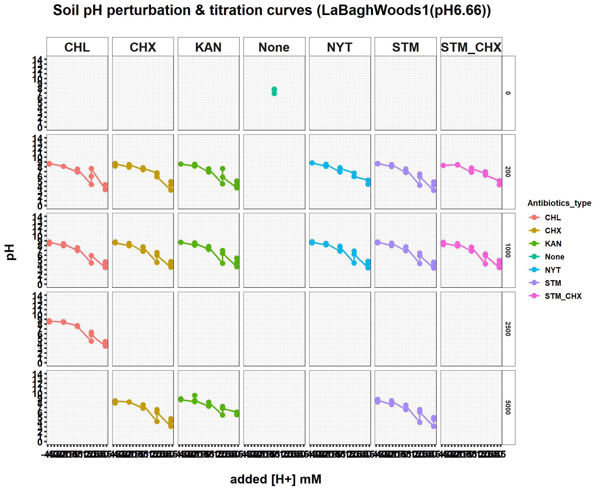
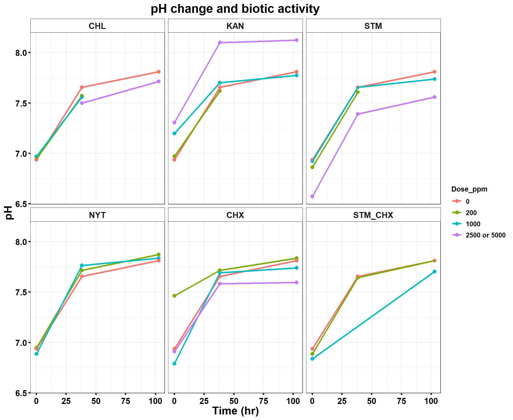
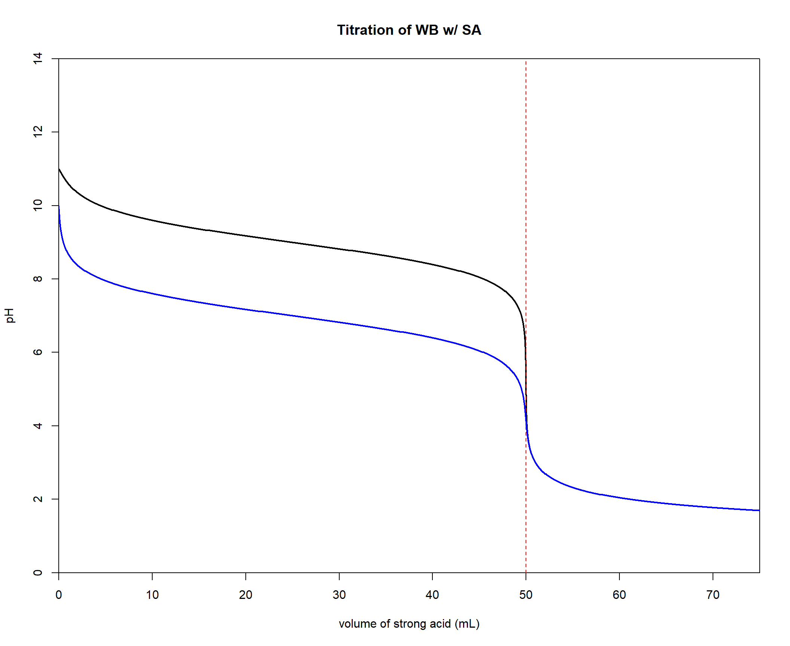

220521_pH_antibiotics_dose_effect
KiseokUchicago
2022-05-23
Last updated: 2022-06-08
Checks: 7 0
Knit directory: Denit_visualization_R/
This reproducible R Markdown analysis was created with workflowr (version 1.6.2). The Checks tab describes the reproducibility checks that were applied when the results were created. The Past versions tab lists the development history.
Great! Since the R Markdown file has been committed to the Git repository, you know the exact version of the code that produced these results.
Great job! The global environment was empty. Objects defined in the global environment can affect the analysis in your R Markdown file in unknown ways. For reproduciblity it’s best to always run the code in an empty environment.
The command set.seed(20210924) was run prior to running the code in the R Markdown file. Setting a seed ensures that any results that rely on randomness, e.g. subsampling or permutations, are reproducible.
Great job! Recording the operating system, R version, and package versions is critical for reproducibility.
Nice! There were no cached chunks for this analysis, so you can be confident that you successfully produced the results during this run.
Great job! Using relative paths to the files within your workflowr project makes it easier to run your code on other machines.
Great! You are using Git for version control. Tracking code development and connecting the code version to the results is critical for reproducibility.
The results in this page were generated with repository version 7905c93. See the Past versions tab to see a history of the changes made to the R Markdown and HTML files.
Note that you need to be careful to ensure that all relevant files for the analysis have been committed to Git prior to generating the results (you can use wflow_publish or wflow_git_commit). workflowr only checks the R Markdown file, but you know if there are other scripts or data files that it depends on. Below is the status of the Git repository when the results were generated:
Ignored files:
Ignored: .Rhistory
Ignored: .Rproj.user/
Untracked files:
Untracked: 211020_df_full_innate.xlsx
Untracked: 220421_Griess_antibiotics_experiment_to_kyle_remove_blanks.xlsx
Untracked: 220421_Griess_antibiotics_experiment_to_kyle_remove_blanks_add_pH.xlsx
Untracked: 220421_Griess_antibiotics_experiment_to_kyle_w_autoclaved.xlsx
Untracked: 220422_pH_Antibiotics_Sterile_experiment.xlsx
Untracked: 220519_Griess_antibiotics_experiment_to_kyle_w_autoclaved.xlsx
Untracked: 220521_pH_Antibiotics_dose_effect_experiment.xlsx
Untracked: data/120321_soil_buffering_capacity_Nichols-B.xlsx
Untracked: data/210911_TOC_sample_plate1.xlsx
Untracked: data/210922_Griess_sample_plate1-investigating.xlsx
Untracked: data/210922_Griess_sample_plate1.xlsx
Untracked: data/210927_TOC_sample_plate1_100ul.xlsx
Untracked: data/210927_TOC_sample_plate1_10ul.xlsx
Untracked: data/210928_Griess_sample_plate1.xlsx
Untracked: data/211005_Griess_sample_plate1.xlsx
Untracked: data/211007_Griess_blank_plate1.xlsx
Untracked: data/211007_Griess_blank_plate2.xlsx
Untracked: data/211008_Griess_blank_plate0.xlsx
Untracked: data/211008_Griess_blank_plate1.xlsx
Untracked: data/211017_Griess_plate0.xlsx
Untracked: data/211017_Griess_plate1.xlsx
Untracked: data/211017_Griess_plate2.xlsx
Untracked: data/211017_Griess_plate3.xlsx
Untracked: data/211017_Griess_plate4.xlsx
Untracked: data/211017_Griess_plate5.xlsx
Untracked: data/211017_Griess_plate6.xlsx
Untracked: data/211017_Griess_plate7.xlsx
Untracked: data/211017_Griess_plate8.xlsx
Untracked: data/211019_Griess_plate1.xlsx
Untracked: data/211020_Griess_plate0.xlsx
Untracked: data/211020_Griess_plate1.xlsx
Untracked: data/211020_df_full_innate.xlsx
Untracked: data/211025_Griess_no3_fit_plate0.xlsx
Untracked: data/211025_Griess_no3_fit_plate1.xlsx
Untracked: data/211025_Griess_plate0.xlsx
Untracked: data/211025_Griess_plate1.xlsx
Untracked: data/211028_Griess_plate1.xlsx
Untracked: data/211028_Griess_plate1_no3_fit.xlsx
Untracked: data/211028_Griess_plate2.xlsx
Untracked: data/211028_Griess_plate2_no3_fit.xlsx
Untracked: data/211028_Griess_plate3.xlsx
Untracked: data/211028_Griess_plate3_no3_fit.xlsx
Untracked: data/211028_Griess_plate4.xlsx
Untracked: data/211028_Griess_plate4_no3_fit.xlsx
Untracked: data/211028_time_table.xlsx
Untracked: data/211127_Griess_SUP1.xlsx
Untracked: data/211127_Griess_SUP11.xlsx
Untracked: data/211127_Griess_SUP3.xlsx
Untracked: data/211127_Griess_SUP5.xlsx
Untracked: data/211127_Griess_SUP7.xlsx
Untracked: data/211127_Griess_SUP9.xlsx
Untracked: data/211127_Griess_plate0.xlsx
Untracked: data/211127_time_table.xlsx
Untracked: data/211128_Ammonia_sample_plate10.xlsx
Untracked: data/211128_Ammonia_sample_plate11.xlsx
Untracked: data/211128_Griess_plate1.xlsx
Untracked: data/211128_Griess_plate10.xlsx
Untracked: data/211128_Griess_plate11.xlsx
Untracked: data/211128_Griess_plate2.xlsx
Untracked: data/211128_Griess_plate3.xlsx
Untracked: data/211128_Griess_plate4.xlsx
Untracked: data/211128_Griess_plate5.xlsx
Untracked: data/211128_Griess_plate6.xlsx
Untracked: data/211128_Griess_plate7.xlsx
Untracked: data/211128_Griess_plate8.xlsx
Untracked: data/211128_Griess_plate9.xlsx
Untracked: data/211128_time_table.xlsx
Untracked: data/211201_pH_colorimetric.xlsx
Untracked: data/211203_slurry_vs_water_drying_table.xlsx
Untracked: data/211203_slurry_vs_water_drying_time.xlsx
Untracked: data/211208_pH_colorimetric_T3.xlsx
Untracked: data/211208_pH_colorimetric_T4.xlsx
Untracked: data/211208_pH_colorimetric_T5.xlsx
Untracked: data/211208_pH_colorimetric_plate1.xlsx
Untracked: data/211208_pH_colorimetric_plate2.xlsx
Untracked: data/211208_pH_colorimetric_plate3.xlsx
Untracked: data/211208_time_table.xlsx
Untracked: data/211209_OD600_T1.xlsx
Untracked: data/211209_OD600_T2.xlsx
Untracked: data/211209_OD600_T3.xlsx
Untracked: data/211209_time_table.xlsx
Untracked: data/211210_pH_colorimetric_T0.xlsx
Untracked: data/211210_pH_colorimetric_T1.xlsx
Untracked: data/211210_pH_colorimetric_T2.xlsx
Untracked: data/211210_pH_colorimetric_T3.xlsx
Untracked: data/211210_time_table.xlsx
Untracked: data/211218_pH_colorimetric_t0.xlsx
Untracked: data/211218_pH_colorimetric_t1.xlsx
Untracked: data/211218_pH_colorimetric_t2.xlsx
Untracked: data/211218_pH_colorimetric_t3.xlsx
Untracked: data/211218_pH_colorimetric_t4.xlsx
Untracked: data/211218_time_table.xlsx
Untracked: data/211220_Griess_plate1.xlsx
Untracked: data/211220_Griess_plate10.xlsx
Untracked: data/211220_Griess_plate11.xlsx
Untracked: data/211220_Griess_plate2.xlsx
Untracked: data/211220_Griess_plate3.xlsx
Untracked: data/211220_Griess_plate4.xlsx
Untracked: data/211220_Griess_plate5.xlsx
Untracked: data/211220_Griess_plate6.xlsx
Untracked: data/211220_Griess_plate7.xlsx
Untracked: data/211220_Griess_plate8.xlsx
Untracked: data/211220_Griess_plate9.xlsx
Untracked: data/211220_time_table_AU.xlsx
Untracked: data/211220_time_table_BN.xlsx
Untracked: data/211224_TOC_sample_plate1.xlsx
Untracked: data/220103_Griess_T0.xlsx
Untracked: data/220103_Griess_T1.xlsx
Untracked: data/220103_Griess_T11.xlsx
Untracked: data/220103_Griess_T12.xlsx
Untracked: data/220103_Griess_T2.xlsx
Untracked: data/220103_Griess_T3.xlsx
Untracked: data/220103_Griess_T4.xlsx
Untracked: data/220103_Griess_T5.xlsx
Untracked: data/220103_Griess_T6.xlsx
Untracked: data/220103_Griess_T7.xlsx
Untracked: data/220103_Griess_T8.xlsx
Untracked: data/220103_Griess_T9.xlsx
Untracked: data/220103_time_table.xlsx
Untracked: data/220106_Ammonia_sample_plate1.xlsx
Untracked: data/220107-2_Ammonia_sample_plate1.xlsx
Untracked: data/220107-3_Ammonia_sample_plate1.xlsx
Untracked: data/220107-4_Ammonia_sample_plate1.xlsx
Untracked: data/220107-5_Ammonia_sample_plate1.xlsx
Untracked: data/220107-6_Ammonia_sample_plate1.xlsx
Untracked: data/220107-7_Ammonia_sample_plate1.xlsx
Untracked: data/220107-8_Ammonia_sample_plate1.xlsx
Untracked: data/220107-9_Ammonia_sample_plate1.xlsx
Untracked: data/220107_Ammonia_sample_plate1.xlsx
Untracked: data/220108_Ammonia_sample_plate1.xlsx
Untracked: data/220110_Ammonia_sample_plate1.xlsx
Untracked: data/220110_Ammonia_sample_plate2.xlsx
Untracked: data/220111_Ammonia_sample_T0.xlsx
Untracked: data/220111_Ammonia_sample_T1.xlsx
Untracked: data/220111_Ammonia_sample_T2.xlsx
Untracked: data/220111_Ammonia_sample_T3.xlsx
Untracked: data/220111_TOC_sample_plate1.xlsx
Untracked: data/220112_Ammonia_sample_T11.xlsx
Untracked: data/220112_Ammonia_sample_T12.xlsx
Untracked: data/220112_Ammonia_sample_T4.xlsx
Untracked: data/220112_Ammonia_sample_T5.xlsx
Untracked: data/220112_Ammonia_sample_T6.xlsx
Untracked: data/220112_Ammonia_sample_T7.xlsx
Untracked: data/220112_Ammonia_sample_T8.xlsx
Untracked: data/220112_Ammonia_sample_T9.xlsx
Untracked: data/220113_pH_colorimetric_T0.xlsx
Untracked: data/220113_pH_colorimetric_T12.xlsx
Untracked: data/220113_pH_colorimetric_T2.xlsx
Untracked: data/220113_pH_colorimetric_T3.xlsx
Untracked: data/220113_pH_colorimetric_T8.xlsx
Untracked: data/220125_pH_colorimetric_pH1_mu_opt0.099.xlsx
Untracked: data/220125_pH_colorimetric_pH1_using6.66.xlsx
Untracked: data/220125_pH_colorimetric_pH2_mu_opt0.099.xlsx
Untracked: data/220125_pH_colorimetric_pH2_using6.66.xlsx
Untracked: data/220125_time_table.xlsx
Untracked: data/220128_Ammonia_sample_plate1.xlsx
Untracked: data/220128_Ammonia_sample_plate2.xlsx
Untracked: data/220128_Ammonia_sample_plate3.xlsx
Untracked: data/220128_Ammonia_sample_plate4.xlsx
Untracked: data/220128_Ammonia_sample_plate5.xlsx
Untracked: data/220128_Ammonia_sample_plate6.xlsx
Untracked: data/220128_Griess_plate1.xlsx
Untracked: data/220128_Griess_plate2.xlsx
Untracked: data/220128_Griess_plate3.xlsx
Untracked: data/220128_Griess_plate4.xlsx
Untracked: data/220128_Griess_plate5.xlsx
Untracked: data/220128_Griess_plate6.xlsx
Untracked: data/220128_time_table.xlsx
Untracked: data/220131_Ammonia_sample_plate1.xlsx
Untracked: data/220131_Ammonia_sample_plate2.xlsx
Untracked: data/220131_Ammonia_sample_plate3.xlsx
Untracked: data/220131_Ammonia_sample_plate4.xlsx
Untracked: data/220131_Ammonia_sample_plate5.xlsx
Untracked: data/220131_Ammonia_sample_plate6.xlsx
Untracked: data/220131_Griess_plate1.xlsx
Untracked: data/220131_Griess_plate2.xlsx
Untracked: data/220131_Griess_plate3.xlsx
Untracked: data/220131_Griess_plate4.xlsx
Untracked: data/220131_Griess_plate5.xlsx
Untracked: data/220131_Griess_plate6.xlsx
Untracked: data/220131_pH_colorimetric_pH1_mu_opt_T0.xlsx
Untracked: data/220131_pH_colorimetric_pH2_mu_opt_T0.xlsx
Untracked: data/220131_time_table.xlsx
Untracked: data/220327_Griess_pastplate9.xlsx
Untracked: data/220327_Griess_plate1.xlsx
Untracked: data/220327_Griess_plate10.xlsx
Untracked: data/220327_Griess_plate11.xlsx
Untracked: data/220327_Griess_plate12.xlsx
Untracked: data/220327_Griess_plate13.xlsx
Untracked: data/220327_Griess_plate14.xlsx
Untracked: data/220327_Griess_plate15.xlsx
Untracked: data/220327_Griess_plate16.xlsx
Untracked: data/220327_Griess_plate2.xlsx
Untracked: data/220327_Griess_plate3.xlsx
Untracked: data/220327_Griess_plate4.xlsx
Untracked: data/220327_Griess_plate5.xlsx
Untracked: data/220327_Griess_plate6.xlsx
Untracked: data/220327_Griess_plate7.xlsx
Untracked: data/220327_Griess_plate8.xlsx
Untracked: data/220327_Griess_plate9.xlsx
Untracked: data/220327_time_table.xlsx
Untracked: data/220329_pH_colorimetric_pH1_mu_opt_T0.xlsx
Untracked: data/220329_pH_colorimetric_pH2_mu_opt_T0.xlsx
Untracked: data/220329_pH_colorimetric_pH3_mu_opt_T0.xlsx
Untracked: data/220329_pH_colorimetric_pH4_mu_opt_T0.xlsx
Untracked: data/220329_pH_colorimetric_pH6_mu_opt_T0.xlsx
Untracked: data/220329_pH_colorimetric_pH7_mu_opt_T0.xlsx
Untracked: data/220407_pH_colorimetric_pH3_half_mu_opt_T0.xlsx
Untracked: data/220407_pH_colorimetric_pH_base_treatment_mu_opt_T0.xlsx
Untracked: data/220407_pH_colorimetric_pH_standard_150ul_mu_opt_T0.xlsx
Untracked: data/220407_pH_colorimetric_pH_standard_300ul_mu_opt_T0.xlsx
Untracked: data/220407_pH_colorimetric_pH_standard_60ul_mu_opt_T0.xlsx
Untracked: data/220408_pH_colorimetric_pH_limit_mu_opt_water.xlsx
Untracked: data/220412_pH_colorimetric_pH_half_mu_opt_WW.xlsx
Untracked: data/220414_Ammonia_sample_plate0.xlsx
Untracked: data/220418_Ammonia_sample_plate0.xlsx
Untracked: data/220419_Ammonia_sample_plate0.xlsx
Untracked: data/220420-2_Ammonia_bcf.xlsx
Untracked: data/220420_Ammonia_sample_plate1.xlsx
Untracked: data/220420_Ammonia_sample_plate10.xlsx
Untracked: data/220420_Ammonia_sample_plate11.xlsx
Untracked: data/220420_Ammonia_sample_plate12.xlsx
Untracked: data/220420_Ammonia_sample_plate13.xlsx
Untracked: data/220420_Ammonia_sample_plate14.xlsx
Untracked: data/220420_Ammonia_sample_plate15.xlsx
Untracked: data/220420_Ammonia_sample_plate16.xlsx
Untracked: data/220420_Ammonia_sample_plate2.xlsx
Untracked: data/220420_Ammonia_sample_plate3.xlsx
Untracked: data/220420_Ammonia_sample_plate4.xlsx
Untracked: data/220420_Ammonia_sample_plate5.xlsx
Untracked: data/220420_Ammonia_sample_plate6.xlsx
Untracked: data/220420_Ammonia_sample_plate7.xlsx
Untracked: data/220420_Ammonia_sample_plate8.xlsx
Untracked: data/220420_Ammonia_sample_plate9.xlsx
Untracked: data/220421_Ammonia_df_a_bcf.xlsx
Untracked: data/220421_Ammonia_df_pH_range.xlsx
Untracked: data/220421_Ammonia_sample_plate1.xlsx
Untracked: data/220421_Ammonia_sample_plate10.xlsx
Untracked: data/220421_Ammonia_sample_plate11.xlsx
Untracked: data/220421_Ammonia_sample_plate2.xlsx
Untracked: data/220421_Ammonia_sample_plate3.xlsx
Untracked: data/220421_Ammonia_sample_plate4.xlsx
Untracked: data/220421_Ammonia_sample_plate5.xlsx
Untracked: data/220421_Ammonia_sample_plate6.xlsx
Untracked: data/220421_Ammonia_sample_plate7.xlsx
Untracked: data/220421_Ammonia_sample_plate8.xlsx
Untracked: data/220421_Ammonia_sample_plate9.xlsx
Untracked: data/220421_Ammonia_sterile.xlsx
Untracked: data/220421_Griess_antibiotics_experiment_to_kyle_remove_blanks.xlsx
Untracked: data/220421_Griess_antibiotics_experiment_to_kyle_remove_blanks_add_pH.xlsx
Untracked: data/220421_Griess_plate1.xlsx
Untracked: data/220421_Griess_plate10.xlsx
Untracked: data/220421_Griess_plate11.xlsx
Untracked: data/220421_Griess_plate2.xlsx
Untracked: data/220421_Griess_plate3.xlsx
Untracked: data/220421_Griess_plate4.xlsx
Untracked: data/220421_Griess_plate5.xlsx
Untracked: data/220421_Griess_plate6.xlsx
Untracked: data/220421_Griess_plate7.xlsx
Untracked: data/220421_Griess_plate8.xlsx
Untracked: data/220421_Griess_plate9.xlsx
Untracked: data/220421_nitrate_reduced_autoclaved_samples.xlsx
Untracked: data/220421_time_table.xlsx
Untracked: data/220422_pH_Antibiotics_Sterile_experiment.xlsx
Untracked: data/220422_pH_colorimetric_LBA_Sterile_T0_mu_opt_T0.xlsx
Untracked: data/220422_pH_colorimetric_LBA_Sterile_T4_mu_opt_T0.xlsx
Untracked: data/220422_pH_colorimetric_LBA_Sterile_T4_mu_opt_T4.xlsx
Untracked: data/220422_pH_colorimetric_LBA_Sterile_T7_mu_opt_T0.xlsx
Untracked: data/220422_pH_colorimetric_LBA_Sterile_T7_mu_opt_T7.xlsx
Untracked: data/220422_pH_colorimetric_LBA_Sterile_T9_mu_opt_T0.xlsx
Untracked: data/220422_pH_colorimetric_LBA_Sterile_T9_mu_opt_T9.xlsx
Untracked: data/220508_TOC_sample_plate1.xlsx
Untracked: data/220513_TOC_sample_plate1.xlsx
Untracked: data/220513_TOC_sample_plate2.xlsx
Untracked: data/220513_TOC_sample_plate3.xlsx
Untracked: data/220517_time_table.xlsx
Untracked: data/220519_Griess_antibiotics_dose_experiment_remove_blanks.xlsx
Untracked: data/220519_Griess_crerar7_extreme.xlsx
Untracked: data/220519_Griess_plate1.xlsx
Untracked: data/220519_Griess_plate10.xlsx
Untracked: data/220519_Griess_plate11.xlsx
Untracked: data/220519_Griess_plate2.xlsx
Untracked: data/220519_Griess_plate3.xlsx
Untracked: data/220519_Griess_plate4.xlsx
Untracked: data/220519_Griess_plate5.xlsx
Untracked: data/220519_Griess_plate6.xlsx
Untracked: data/220519_Griess_plate7.xlsx
Untracked: data/220519_Griess_plate8.xlsx
Untracked: data/220519_Griess_plate9.xlsx
Untracked: data/220519_time_table.xlsx
Untracked: data/220520_TOC_sample_plate1.xlsx
Untracked: data/220520_TOC_sample_plate2.xlsx
Untracked: data/220520_TOC_sample_plate3.xlsx
Untracked: data/220521_pH_Antibiotics_dose_effect_experiment.xlsx
Untracked: data/220521_pH_colorimetric_Barneveld2_Sterile_T0_mu_opt_T0.xlsx
Untracked: data/220521_pH_colorimetric_Barneveld2_Sterile_T10_mu_opt_T0.xlsx
Untracked: data/220521_pH_colorimetric_Barneveld2_Sterile_T7_mu_opt_T0.xlsx
Untracked: data/220526_TOC_sample_plate1.xlsx
Untracked: data/220527_TOC_sample_plate1.xlsx
Untracked: data/220601_TOC_sample_plate1.xlsx
Untracked: data/220602-2_TOC_sample_plate1.xlsx
Untracked: data/220602-2_control_OD600.xlsx
Untracked: data/220602-3_TOC_sample_plate1.xlsx
Untracked: data/220602-3_control_OD600.xlsx
Untracked: data/220602_TOC_sample_plate1.xlsx
Untracked: data/220603_100ul_OD600.xlsx
Untracked: data/220603_TOC_sample_plate1.xlsx
Untracked: data/220603_TOC_sample_plate2.xlsx
Untracked: data/220606_TOC_sample_plate1.xlsx
Untracked: data/220606_TOC_sample_plate2.xlsx
Untracked: data/ForKiseok_from_Dr_Cuhel.xlsx
Untracked: data/ForKiseok_from_Dr_Cuhel_format_edited.xlsx
Untracked: data/OD434_OD585_C_WB_T5_220329.xlsx
Untracked: data/OD434_OD585_WW_C_T0_220329.xlsx
Untracked: data/OD434_OD585_pH3_half_area_220407.xlsx
Untracked: data/OD434_OD585_pH_base_treated_T0_220407.xlsx
Untracked: data/OD434_OD585_pH_half_150ul_220412.xlsx
Untracked: data/SPNa_86437_021122_edit.xlsx
Untracked: data/SPNa_86437_021122_edit2.xlsx
Untracked: data/TOC_TN_measurement_2_labs_211014.xlsx
Untracked: data/dry_weight_curve(9.5.21).xlsx
Untracked: data/pH_data(11.17.21)-Midway_etc.xlsx
Untracked: data/pH_data(12.6.21)-Midway_incubation_endpoint.xlsx
Untracked: data/pH_data(9.14.21).xlsx
Untracked: data/pH_data(9.28.21).xlsx
Untracked: data/pH_standard_150ul_220407.xlsx
Untracked: data/pH_standard_300ul_220407.xlsx
Untracked: data/pH_standard_60ul_220407.xlsx
Untracked: data/~$220513_TOC_sample_plate1.xlsx
Untracked: data/~$SPNa_86437_021122_edit.xlsx
Untracked: past_figures/
Note that any generated files, e.g. HTML, png, CSS, etc., are not included in this status report because it is ok for generated content to have uncommitted changes.
These are the previous versions of the repository in which changes were made to the R Markdown (analysis/220521_pH_antibiotics_dose_effect.Rmd) and HTML (docs/220521_pH_antibiotics_dose_effect.html) files. If you’ve configured a remote Git repository (see ?wflow_git_remote), click on the hyperlinks in the table below to view the files as they were in that past version.
| File | Version | Author | Date | Message |
|---|---|---|---|---|
| Rmd | 7905c93 | KiseokUchicago | 2022-06-08 | wflow_publish("analysis/*.Rmd") |
Time series analysis - pH analysis of antibiotic dosage effect
Researcher: Kiseok Lee
Experiment Date: 5/8/22 - 5/12/22 (5 days)
Analysis Date: 5/23/21 Lab: Seppe Kuehn
1. 20ul of 0.5M HCl or 0.05M NaOH was incrementally added
df_pH1 <- openxlsx::read.xlsx("data/220521_pH_colorimetric_Barneveld2_Sterile_T0_mu_opt_T0.xlsx")
df_pH2 <- openxlsx::read.xlsx("data/220521_pH_colorimetric_Barneveld2_Sterile_T7_mu_opt_T0.xlsx")
df_pH3 <- openxlsx::read.xlsx("data/220521_pH_colorimetric_Barneveld2_Sterile_T10_mu_opt_T0.xlsx")
# I incorporated pH meter into pH1 and
# pH3... so... I'll put pH_meter column
# for other df.
df_pH2$pH_meter <- NA
df_pH3$pH_meter <- NA
colnames(df_pH1) [1] "Well" "Nitrite_input" "Nitrate_input" "Ammonium_input"
[5] "Soil" "Sample_type" "Titration_type" "Antibiotics_type"
[9] "Dose_ppm" "Unit" "Concentration_M" "Added_ul"
[13] "Time_point" "pH_colorimetric" "pH_meter" colnames(df_pH2) [1] "Well" "Nitrite_input" "Nitrate_input" "Ammonium_input"
[5] "Soil" "Sample_type" "Titration_type" "Antibiotics_type"
[9] "Dose_ppm" "Unit" "Concentration_M" "Added_ul"
[13] "Time_point" "pH_colorimetric" "pH_meter" colnames(df_pH3) [1] "Well" "Nitrite_input" "Nitrate_input" "Ammonium_input"
[5] "Soil" "Sample_type" "Titration_type" "Antibiotics_type"
[9] "Dose_ppm" "Unit" "Concentration_M" "Added_ul"
[13] "Time_point" "pH_colorimetric" "pH_meter" # Filter defect I ruined T10....
df_pH1 %<>%
filter(!(Well %in% c("C01", "C10", "C11",
"D01", "D11", "E10", "F01", "F11"))) # less than 120ul
df_pH2 %<>%
filter(!(Well %in% c("A01", "A03", "B02",
"B05", "C08", "D04", "D12", "E06",
"E07", "E12", "G12", "H02", "H04",
"H05", "H07", "H09", "H10", "H11"))) # little sample
df_pH3 %<>%
filter(!(Well %in% c("A02", "A04", "A05",
"B02", "B04", "C04", "D03", "D04",
"E01", "E05", "E07", "E09", "E12",
"F05", "G09", "G10", "G11", "G12",
"H03", "H04", "H05", "H06", "H09"))) # little sample
# df_pH4 %<>% filter(!(Well %in%
# c('H02','H05','F03'))) # Less than
# 90ul of sample
dim(df_pH1)[1] 88 15dim(df_pH2)[1] 78 15dim(df_pH3)[1] 73 15df_time <- openxlsx::read.xlsx("data/220519_time_table.xlsx")
df_time$Time_hours <- round(df_time$Time_hours,
1)
df_time$Time_days <- round(df_time$Time_days,
2)
df_pH_T <- rbind(df_pH1, df_pH2, df_pH3)
df_pH_T %<>%
left_join(df_time, by = c(Time_point = "Time_point"))
dim(df_pH_T) # 575[1] 239 19# remove NA # don't remove NA this time
# dim(df_pH_T) # 575
# df_pH_T[is.na(df_pH_T)] df_na <-
# df_pH_T[rowSums(is.na(df_pH_T)) > 0,]
# # df_pH_T <- na.omit(df_pH_T) df_pH_T
# <- df_pH_T[rowSums(is.na(df_pH_T)) ==
# 0,] dim(df_pH_T) # 373
# Change the soil names to include pH
# df_pH_T$Soil <-
# str_replace(df_pH_T$Soil,'NicholsC','NicholsC_pH7')
# df_pH_T$Soil <-
# str_replace(df_pH_T$Soil,'Allandale','Allandale_pH4')
# df_pH_T$Soil <- factor(df_pH_T$Soil,
# levels = c('NicholsC_pH7',
# 'Allandale_pH4'))
# mols and molarity unit conversion
# test
df_pH <- df_pH_T %>%
filter(Titration_type %in% c("NaOH",
"HCl", "No_Nitrate"))
dim(df_pH) # 304[1] 214 19df_pH$Titration_type %>%
unique()[1] "HCl" "NaOH"Added_Volume <- 1.7 # ml
Soil_mg <- 0.85
moisture_percent_1 = 20.15 # Barneveld2 for antibiotics
Added_Volume + Soil_mg * (moisture_percent_1/100)[1] 1.871275# moisture_percent_2 = 8.12 # Sterile -
# LaBaghWoods that has been autoclaved
# 5 times. Added_Volume +
# Soil_mg*(moisture_percent_2/100)
# moisture_percent_3 = 9.0 # Crerar7
# Added_Volume +
# Soil_mg*(moisture_percent_3/100)
df_pH$Added_ul <- ifelse(df_pH$Titration_type ==
"NaOH", -1 * df_pH$Added_ul, df_pH$Added_ul) # HCl is +, NaOH is -
df_pH %<>%
mutate(H_mol = Concentration_M * Added_ul *
10^(-6)) # Calculate H mol
df_pH$Volume <- ifelse(df_pH$Soil == "Barneveld2",
Added_Volume + Soil_mg * (moisture_percent_1/100),
ifelse(df_pH$Soil == "LaBaghWoods_autoclaved_pH6.66",
Added_Volume + Soil_mg * (moisture_percent_2/100),
0))
# ifelse(df_pH$Soil ==
# 'Crerar1_pH8.05', Added_Volume +
# Soil_mg*(moisture_percent_3/100),
# 0))) # Calc total volume
df_pH %<>%
mutate(H_Molarity = H_mol/(Volume * 10^(-3)))
df_pH %<>%
mutate(H_mM = H_Molarity * 1000)
# openxlsx::write.xlsx(df_pH,
# 'df_pH.xlsx')
# how many levels of H_mM?
df_pH %>%
filter(Soil == "Barneveld2") %>%
select(H_mM) %>%
unique() %>%
arrange(H_mM) H_mM
1 -42.7516
2 -21.3758
3 0.0000
4 21.3758
5 42.7516# df_pH %>% filter(Soil ==
# 'LaBaghWoods_autoclaved_pH6.66')%>%
# select(H_mM) %>% unique() %>%
# arrange(H_mM) df_pH %>% filter(Soil
# == 'Crerar1_pH8.05')%>% select(H_mM)
# %>% unique() %>% arrange()
colnames(df_pH) [1] "Well" "Nitrite_input" "Nitrate_input" "Ammonium_input"
[5] "Soil" "Sample_type" "Titration_type" "Antibiotics_type"
[9] "Dose_ppm" "Unit" "Concentration_M" "Added_ul"
[13] "Time_point" "pH_colorimetric" "pH_meter" "Date"
[17] "Time_minutes" "Time_hours" "Time_days" "H_mol"
[21] "Volume" "H_Molarity" "H_mM" dim(df_pH)[1] 214 23# average the pH 220329 only used 1
# replicate. So, no need to average.
# df_pH_ave <- df_pH %>%
# group_by(Nitrite_input,
# Nitrate_input, Soil, Titration_type,
# Concentration_M, Added_ul,
# Sample_type, H_mol, H_Molarity, H_mM,
# Time_point, Time_minutes, Time_hours,
# Time_days) %>% summarise(Ave_pH =
# mean(pH_colorimetric), Std_pH =
# sd(pH_colorimetric)) %>% ungroup()
# colnames(df_pH_ave)Export pH for ammonium analysis
# where is autoclaved? df_pH %>%
# filter(Soil ==
# 'LaBaghWoods_autoclaved_pH6.66')
# remove blanks
df_pH_export <- df_pH %>%
filter(Titration_type %in% c("NaOH",
"HCl"))
# use only T7
df_pH_export %<>%
rename(pH = pH_colorimetric) %>%
arrange(H_mM, Soil, Titration_type, Antibiotics_type,
Dose_ppm)
# average the replicates
df_pH_export2 <- df_pH_export %>%
group_by(Soil, Titration_type, Unit,
H_mM, Antibiotics_type, Dose_ppm,
Time_point) %>%
summarise(pH = mean(pH)) %>%
ungroup() %>%
arrange(Antibiotics_type, Dose_ppm, H_mM)
df_pH_export2$pH <- as.numeric(df_pH_export2$pH)
ggplot(df_pH_export2, aes(x = H_mM, y = pH,
color = Antibiotics_type, group = Antibiotics_type)) +
geom_point(size = 3, shape = 16, alpha = 1) +
# geom_errorbar(aes(ymin=Ave_pH -
# Std_pH, ymax=Ave_pH + Std_pH),
# width=.05)+
geom_line(size = 1) + # scale_color_brewer(palette='Set1') + geom_line(size
geom_line(size = 1) + # scale_color_brewer(palette='Set1') + =
geom_line(size = 1) + # scale_color_brewer(palette='Set1') + 1)
geom_line(size = 1) + # scale_color_brewer(palette='Set1') + +
geom_line(size = 1) + # scale_color_brewer(palette='Set1') + #
geom_line(size = 1) + # scale_color_brewer(palette='Set1') + scale_color_brewer(palette='Set1')
geom_line(size = 1) + # scale_color_brewer(palette='Set1') + +
ylab("pH \n") + xlab("\n added [H+] mM") +
scale_x_continuous(breaks = seq(-100,
100, 5)) + scale_y_continuous(breaks = seq(0,
14, 1), limits = c(0, 14)) + ggtitle("Soil pH perturbation & titration curves (LaBaghWoods1(pH6.66)) \n") +
# label geom_text(aes(label =
# pH_colorimetric), size = 3, vjust
# = -1.5, family='serif',
# show.legend = FALSE)+
mytheme_2d + facet_grid(Dose_ppm ~ Antibiotics_type) +
theme(strip.background = element_rect(colour = "black",
fill = "white", size = 0.1)) + theme(strip.text.x = element_text(size = 17))
write.xlsx(df_pH_export2, "220521_pH_Antibiotics_dose_effect_experiment.xlsx")To Kyle
[1] 214 23character(0)[1] 0 23 [1] Well Nitrite_input Nitrate_input Ammonium_input
[5] Soil Sample_type Titration_type Antibiotics_type
[9] Dose_ppm Unit Concentration_M Added_ul
[13] Time_point pH pH_meter Date
[17] Time_minutes Time_hours Time_days H_mol
[21] Volume H_Molarity H_mM
<0 rows> (or 0-length row.names)Error in FUN(X[[i]], ...): object 'H_mM' not found
# A tibble: 0 x 4
# ... with 4 variables: Titration_type <chr>, Unit <dbl>,
# Antibiotics_type <chr>, pH <dbl>Error in `$<-.data.frame`(`*tmp*`, pH, value = numeric(0)): replacement has 0 rows, data has 1Error in round(df_pH_kyle3$pH, 3): non-numeric argument to mathematical functionError in `$<-.data.frame`(`*tmp*`, Unit, value = numeric(0)): replacement has 0 rows, data has 1 [1] 2 6 2 6 0 0 4 8 4 8 0 2 4 8 4 8 0 2 6 2 6 0 0 4 6 2 6 0 0 0 8 4 8 0 0 0 2
[38] 6 2 6 0 0 4 8 4 8 0 2 4 8 4 8 0 2 6 0 0 4 6 2 6 0 0 0 8 4 8 0 0 0 2 6 2 6
[75] 0 0 4 8 4 8 0 2 4 8 4 8 0 2 6 2 6 0 0 4 6 2 6 0 0 0 8 4 8 0 0 0 2 6 2 6 0
[112] 0 4 8 4 8 0 2 4 8 4 8 0 2 6 2 6 0 0 4 6 2 6 0 0 0 8 4 8 0 0 0 2 6 2 6 0 0
[149] 4 8 0 2 4 8 8 0 2 6 2 6 0 0 4 6 2 6 0 0 0 8 4 8 0 0 0 2 6 2 6 0 0 4 8 4 8
[186] 0 2 4 8 4 8 0 2 6 2 6 0 0 4 6 2 6 0 0 0 8 4 8 0 0 0 2 6 2 6 0 0 4 8 4 8 0
[223] 2 4 8 4 8 0 2 6 2 6 0 0 4 6 2 6 0 0 0 8 4 8 0 0 0 6 2 6 0 0 4 8 4 8 0 2 4
[260] 8 4 8 0 2 6 2 6 0 0 4 6 2 6 0 0 0 8 4 8 0 0 0 2 6 2 6 0 0 4 8 4 8 0 2 4 8
[297] 4 8 0 2 6 2 6 0 0 4 6 2 6 0 0 0 8 4 8 0 0 0 2 6 2 6 0 0 4 8 4 8 0 2 4 8 4
[334] 8 0 2 6 2 6 0 0 4 6 2 6 0 0 0 8 4 8 0 0 0Error: Join columns must be present in data.
x Problem with `Titration_type`, `Unit`, and `Antibiotics_type`.Error in "list" %in% class(x): object 'df_kyle3' not found2. Plot titration curves
Plot one time point at the time
df_time
# df_T0 <- df_pH_ave %>%
# filter(Time_point == 'T0')
# Plot it in one plot - time series
df_plot <- df_pH
dim(df_plot)
# df_plot$Time_days <-
# factor(df_plot$Time_days)
df_plot$Time_point <- factor(df_plot$Time_point,
levels = paste0("T", 0:10))
# unique(df_pH$Time_point)
colnames(df_plot)
df_plot$Time_point
ggplot(df_plot, aes(x = H_mM, y = pH_colorimetric,
color = Time_point, group = Time_point)) +
geom_point(size = 3, shape = 16, alpha = 1) +
# geom_errorbar(aes(ymin=Ave_pH -
# Std_pH, ymax=Ave_pH + Std_pH),
# width=.05)+
geom_line(size = 1) + # scale_color_brewer(palette='Set1') + geom_line(size
geom_line(size = 1) + # scale_color_brewer(palette='Set1') + =
geom_line(size = 1) + # scale_color_brewer(palette='Set1') + 1)
geom_line(size = 1) + # scale_color_brewer(palette='Set1') + +
geom_line(size = 1) + # scale_color_brewer(palette='Set1') + #
geom_line(size = 1) + # scale_color_brewer(palette='Set1') + scale_color_brewer(palette='Set1')
geom_line(size = 1) + # scale_color_brewer(palette='Set1') + +
ylab("pH \n") + xlab("\n added [H+] mM") +
scale_x_continuous(breaks = seq(-100,
100, 5)) + scale_y_continuous(breaks = seq(0,
14, 1), limits = c(0, 14)) + ggtitle("Soil pH perturbation & titration curves (LaBaghWoods1(pH6.66)) \n") +
# label geom_text(aes(label =
# pH_colorimetric), size = 3, vjust
# = -1.5, family='serif',
# show.legend = FALSE)+
mytheme_2d
# pH meter
ggplot(df_plot, aes(x = H_mM, y = pH_meter,
color = Time_point, group = Time_point)) +
geom_point(size = 3, shape = 16, alpha = 1) +
# geom_errorbar(aes(ymin=Ave_pH -
# Std_pH, ymax=Ave_pH + Std_pH),
# width=.05)+
geom_line(size = 1) + # scale_color_brewer(palette='Set1') + geom_line(size
geom_line(size = 1) + # scale_color_brewer(palette='Set1') + =
geom_line(size = 1) + # scale_color_brewer(palette='Set1') + 1)
geom_line(size = 1) + # scale_color_brewer(palette='Set1') + +
geom_line(size = 1) + # scale_color_brewer(palette='Set1') + #
geom_line(size = 1) + # scale_color_brewer(palette='Set1') + scale_color_brewer(palette='Set1')
geom_line(size = 1) + # scale_color_brewer(palette='Set1') + +
ylab("pH \n") + xlab("\n added [H+] mM") +
scale_x_continuous(breaks = seq(-100,
100, 5)) + scale_y_continuous(breaks = seq(0,
14, 1), limits = c(0, 14)) + ggtitle("[pH micrometer] Soil pH perturbation & titration curves (LaBaghWoods1(pH6.66)) \n") +
# label geom_text(aes(label =
# pH_colorimetric), size = 3, vjust
# = -1.5, family='serif',
# show.legend = FALSE)+
mytheme_2d
# order factors
df_plot$Dose_ppm <- ifelse(df_plot$Dose_ppm ==
2500, 5000, df_plot$Dose_ppm)
df_plot$Dose_ppm <- ifelse(df_plot$Dose_ppm ==
5000, "2500 or 5000", df_plot$Dose_ppm)
df_plot$Dose_ppm <- factor(df_plot$Dose_ppm,
levels = c(200, 1000, "2500 or 5000"))
df_plot$Antibiotics_type <- factor(df_plot$Antibiotics_type,
levels = c("CHL", "KAN", "STM", "NYT",
"CHX", "STM_CHX"))
df_plot %<>%
filter(Dose_ppm != 0)
# average
df_plot2 <- df_plot %>%
group_by(Titration_type, Unit, Antibiotics_type,
Dose_ppm, H_mM, Time_point, Time_hours,
Time_days) %>%
summarise(pH_colorimetric = mean(pH_colorimetric),
pH_meter = mean(pH_meter)) %>%
ungroup()
dim(df_plot2)
df_plot2$Time_hours <- factor(df_plot2$Time_hours)
# one plot
ggplot(df_plot2, aes(x = H_mM, y = pH_colorimetric,
color = Time_hours)) + geom_line(size = 1) +
geom_point(size = 3, alpha = 1) + # geom_errorbar(aes(ymin=Ave_pH - Std_pH, ymax=Ave_pH + Std_pH), width=.05)+ geom_point(size
geom_point(size = 3, alpha = 1) + # geom_errorbar(aes(ymin=Ave_pH - Std_pH, ymax=Ave_pH + Std_pH), width=.05)+ =
geom_point(size = 3, alpha = 1) + # geom_errorbar(aes(ymin=Ave_pH - Std_pH, ymax=Ave_pH + Std_pH), width=.05)+ 3,
geom_point(size = 3, alpha = 1) + # geom_errorbar(aes(ymin=Ave_pH - Std_pH, ymax=Ave_pH + Std_pH), width=.05)+ alpha
geom_point(size = 3, alpha = 1) + # geom_errorbar(aes(ymin=Ave_pH - Std_pH, ymax=Ave_pH + Std_pH), width=.05)+ =
geom_point(size = 3, alpha = 1) + # geom_errorbar(aes(ymin=Ave_pH - Std_pH, ymax=Ave_pH + Std_pH), width=.05)+ 1)
geom_point(size = 3, alpha = 1) + # geom_errorbar(aes(ymin=Ave_pH - Std_pH, ymax=Ave_pH + Std_pH), width=.05)+ +
geom_point(size = 3, alpha = 1) + # geom_errorbar(aes(ymin=Ave_pH - Std_pH, ymax=Ave_pH + Std_pH), width=.05)+ #
geom_point(size = 3, alpha = 1) + # geom_errorbar(aes(ymin=Ave_pH - Std_pH, ymax=Ave_pH + Std_pH), width=.05)+ geom_errorbar(aes(ymin=Ave_pH
geom_point(size = 3, alpha = 1) + # geom_errorbar(aes(ymin=Ave_pH - Std_pH, ymax=Ave_pH + Std_pH), width=.05)+ -
geom_point(size = 3, alpha = 1) + # geom_errorbar(aes(ymin=Ave_pH - Std_pH, ymax=Ave_pH + Std_pH), width=.05)+ Std_pH,
geom_point(size = 3, alpha = 1) + # geom_errorbar(aes(ymin=Ave_pH - Std_pH, ymax=Ave_pH + Std_pH), width=.05)+ ymax=Ave_pH
geom_point(size = 3, alpha = 1) + # geom_errorbar(aes(ymin=Ave_pH - Std_pH, ymax=Ave_pH + Std_pH), width=.05)+ +
geom_point(size = 3, alpha = 1) + # geom_errorbar(aes(ymin=Ave_pH - Std_pH, ymax=Ave_pH + Std_pH), width=.05)+ Std_pH),
geom_point(size = 3, alpha = 1) + # geom_errorbar(aes(ymin=Ave_pH - Std_pH, ymax=Ave_pH + Std_pH), width=.05)+ width=.05)+
# scale_color_brewer(palette='Set1') +
ylab("pH") + xlab("added [H+] mM") + scale_x_continuous(breaks = seq(-100,
100, 10)) + scale_y_continuous(breaks = seq(0,
14, 2), limits = c(0, 14)) + ggtitle("[Barneveld2 (pH 6.9)] Antibiotic dose effect (ppm)") +
# label geom_text(aes(label =
# pH_colorimetric), size = 3, vjust
# = -1.5, family='serif',
# show.legend = FALSE)+
mytheme_2d + facet_grid(Dose_ppm ~ Antibiotics_type) +
theme(strip.background = element_rect(colour = "black",
fill = "white", size = 0.1)) + theme(strip.text.x = element_text(size = 13)) +
theme(strip.text.y = element_text(size = 13,
face = "bold"))
# comparing by timepoint
ggplot(df_plot2, aes(x = H_mM, y = pH_colorimetric,
color = Antibiotics_type)) + geom_line(size = 1) +
geom_point(aes(shape = Antibiotics_type),
size = 3, alpha = 1) + # geom_errorbar(aes(ymin=Ave_pH - Std_pH, ymax=Ave_pH + Std_pH), width=.05)+ size
size = 3, alpha = 1) + # geom_errorbar(aes(ymin=Ave_pH - Std_pH, ymax=Ave_pH + Std_pH), width=.05)+ =
size = 3, alpha = 1) + # geom_errorbar(aes(ymin=Ave_pH - Std_pH, ymax=Ave_pH + Std_pH), width=.05)+ 3,
size = 3, alpha = 1) + # geom_errorbar(aes(ymin=Ave_pH - Std_pH, ymax=Ave_pH + Std_pH), width=.05)+ alpha
size = 3, alpha = 1) + # geom_errorbar(aes(ymin=Ave_pH - Std_pH, ymax=Ave_pH + Std_pH), width=.05)+ =
size = 3, alpha = 1) + # geom_errorbar(aes(ymin=Ave_pH - Std_pH, ymax=Ave_pH + Std_pH), width=.05)+ 1)
size = 3, alpha = 1) + # geom_errorbar(aes(ymin=Ave_pH - Std_pH, ymax=Ave_pH + Std_pH), width=.05)+ +
size = 3, alpha = 1) + # geom_errorbar(aes(ymin=Ave_pH - Std_pH, ymax=Ave_pH + Std_pH), width=.05)+ #
size = 3, alpha = 1) + # geom_errorbar(aes(ymin=Ave_pH - Std_pH, ymax=Ave_pH + Std_pH), width=.05)+ geom_errorbar(aes(ymin=Ave_pH
size = 3, alpha = 1) + # geom_errorbar(aes(ymin=Ave_pH - Std_pH, ymax=Ave_pH + Std_pH), width=.05)+ -
size = 3, alpha = 1) + # geom_errorbar(aes(ymin=Ave_pH - Std_pH, ymax=Ave_pH + Std_pH), width=.05)+ Std_pH,
size = 3, alpha = 1) + # geom_errorbar(aes(ymin=Ave_pH - Std_pH, ymax=Ave_pH + Std_pH), width=.05)+ ymax=Ave_pH
size = 3, alpha = 1) + # geom_errorbar(aes(ymin=Ave_pH - Std_pH, ymax=Ave_pH + Std_pH), width=.05)+ +
size = 3, alpha = 1) + # geom_errorbar(aes(ymin=Ave_pH - Std_pH, ymax=Ave_pH + Std_pH), width=.05)+ Std_pH),
size = 3, alpha = 1) + # geom_errorbar(aes(ymin=Ave_pH - Std_pH, ymax=Ave_pH + Std_pH), width=.05)+ width=.05)+
# scale_color_brewer(palette='Set1') +
ylab("pH") + xlab("added [H+] mM") + scale_x_continuous(breaks = seq(-100,
100, 10)) + scale_y_continuous(breaks = seq(2,
12, 2), limits = c(2, 12)) + ggtitle("Dose (ppm)") +
# label geom_text(aes(label =
# pH_colorimetric), size = 3, vjust
# = -1.5, family='serif',
# show.legend = FALSE)+
mytheme_2d + facet_grid(Time_hours ~ Dose_ppm) +
theme(strip.background = element_rect(colour = "black",
fill = "white", size = 0.1))
Error: <text>:129:17: unexpected ','
128: size = 3, alpha = 1) + # geom_errorbar(aes(ymin=Ave_pH - Std_pH, ymax=Ave_pH + Std_pH), width=.05)+ size
129: size = 3,
^Now it’s time to compare colorimeteric vs. pH micrometer measurements
# melt pH_colorimetric and pH_meter
df_plot3 <- df_plot2 %>%
filter(Time_point == "T0")
df_T0 <- melt(df_plot3, measure.vars = c("pH_colorimetric",
"pH_meter"), variable.name = "pH_method",
value.name = "pH")
# comparing LBA samples
ggplot(df_T0, aes(x = H_mM, y = pH, color = pH_method)) +
geom_line(size = 1) + geom_point(aes(shape = Antibiotics_type),
size = 3, alpha = 1) + # geom_errorbar(aes(ymin=Ave_pH - Std_pH, ymax=Ave_pH + Std_pH), width=.05)+ size
size = 3, alpha = 1) + # geom_errorbar(aes(ymin=Ave_pH - Std_pH, ymax=Ave_pH + Std_pH), width=.05)+ =
size = 3, alpha = 1) + # geom_errorbar(aes(ymin=Ave_pH - Std_pH, ymax=Ave_pH + Std_pH), width=.05)+ 3,
size = 3, alpha = 1) + # geom_errorbar(aes(ymin=Ave_pH - Std_pH, ymax=Ave_pH + Std_pH), width=.05)+ alpha
size = 3, alpha = 1) + # geom_errorbar(aes(ymin=Ave_pH - Std_pH, ymax=Ave_pH + Std_pH), width=.05)+ =
size = 3, alpha = 1) + # geom_errorbar(aes(ymin=Ave_pH - Std_pH, ymax=Ave_pH + Std_pH), width=.05)+ 1)
size = 3, alpha = 1) + # geom_errorbar(aes(ymin=Ave_pH - Std_pH, ymax=Ave_pH + Std_pH), width=.05)+ +
size = 3, alpha = 1) + # geom_errorbar(aes(ymin=Ave_pH - Std_pH, ymax=Ave_pH + Std_pH), width=.05)+ #
size = 3, alpha = 1) + # geom_errorbar(aes(ymin=Ave_pH - Std_pH, ymax=Ave_pH + Std_pH), width=.05)+ geom_errorbar(aes(ymin=Ave_pH
size = 3, alpha = 1) + # geom_errorbar(aes(ymin=Ave_pH - Std_pH, ymax=Ave_pH + Std_pH), width=.05)+ -
size = 3, alpha = 1) + # geom_errorbar(aes(ymin=Ave_pH - Std_pH, ymax=Ave_pH + Std_pH), width=.05)+ Std_pH,
size = 3, alpha = 1) + # geom_errorbar(aes(ymin=Ave_pH - Std_pH, ymax=Ave_pH + Std_pH), width=.05)+ ymax=Ave_pH
size = 3, alpha = 1) + # geom_errorbar(aes(ymin=Ave_pH - Std_pH, ymax=Ave_pH + Std_pH), width=.05)+ +
size = 3, alpha = 1) + # geom_errorbar(aes(ymin=Ave_pH - Std_pH, ymax=Ave_pH + Std_pH), width=.05)+ Std_pH),
size = 3, alpha = 1) + # geom_errorbar(aes(ymin=Ave_pH - Std_pH, ymax=Ave_pH + Std_pH), width=.05)+ width=.05)+
# scale_color_brewer(palette='Set1') +
ylab("pH") + xlab("added [H+] mM") + scale_x_continuous(breaks = seq(-100,
100, 10)) + scale_y_continuous(breaks = seq(2,
10, 2), limits = c(2, 10)) + ggtitle("[Barneveld2 pH 6.9] Comparing pH measuring methods \n") +
# label geom_text(aes(label =
# pH_colorimetric), size = 3, vjust
# = -1.5, family='serif',
# show.legend = FALSE)+
mytheme_2d + facet_grid(Dose_ppm ~ Antibiotics_type) +
theme(strip.background = element_rect(colour = "black",
fill = "white", size = 0.1)) + theme(strip.text.x = element_text(size = 13)) +
theme(strip.text.y = element_text(size = 13,
face = "bold"))
# plot scatter plot
ggplot(df_plot3, aes(x = pH_colorimetric,
y = pH_meter)) + # geom_line(size=1)+ y
y = pH_meter)) + # geom_line(size=1)+ =
y = pH_meter)) + # geom_line(size=1)+ pH_meter))
y = pH_meter)) + # geom_line(size=1)+ +
y = pH_meter)) + # geom_line(size=1)+ #
y = pH_meter)) + # geom_line(size=1)+ geom_line(size=1)+
geom_point(size = 3, alpha = 1, color = "royalblue") +
# geom_errorbar(aes(ymin=Ave_pH -
# Std_pH, ymax=Ave_pH + Std_pH),
# width=.05)+
geom_abline(intercept = 0, slope = 1) + scale_color_brewer(palette = "Set1") +
ylab("pH by micro electrode \n") + xlab("\n pH by colorimetric assay") +
scale_x_continuous(breaks = seq(2, 10,
1), limits = c(2, 10)) + scale_y_continuous(breaks = seq(2,
10, 1), limits = c(2, 10)) + ggtitle("Comparing pH measuring methods \n") +
# label geom_text(aes(label =
# pH_colorimetric), size = 3, vjust
# = -1.5, family='serif',
# show.legend = FALSE)+
mytheme_2d
Error: <text>:12:13: unexpected ','
11: size = 3, alpha = 1) + # geom_errorbar(aes(ymin=Ave_pH - Std_pH, ymax=Ave_pH + Std_pH), width=.05)+ size
12: size = 3,
^Is pH change due to biotic activity?
# compare only with varying dose level
df_plot <- df_pH
df_plot %<>%
group_by(Titration_type, Unit, Antibiotics_type,
Dose_ppm, H_mM, Time_point, Time_hours,
Time_days) %>%
summarise(pH_colorimetric = mean(pH_colorimetric),
pH_meter = mean(pH_meter)) %>%
ungroup()
df_plot$Dose_ppm <- ifelse(df_plot$Dose_ppm ==
2500, 5000, df_plot$Dose_ppm)
df_plot$Dose_ppm <- ifelse(df_plot$Dose_ppm ==
5000, "2500 or 5000", df_plot$Dose_ppm)
df_plot$Dose_ppm <- factor(df_plot$Dose_ppm,
levels = c(0, 200, 1000, "2500 or 5000"))
df_plot$Antibiotics_type <- factor(df_plot$Antibiotics_type,
levels = c("CHL", "KAN", "STM", "NYT",
"CHX", "STM_CHX"))
df_dose <- df_plot %>%
filter(H_mM == 0, Dose_ppm != 0)
df_nodose <- df_plot %>%
filter(Dose_ppm == 0)
df_nodose_CHL <- df_nodose %>%
mutate(Antibiotics_type = "CHL")
df_nodose_KAN <- df_nodose %>%
mutate(Antibiotics_type = "KAN")
df_nodose_STM <- df_nodose %>%
mutate(Antibiotics_type = "STM")
df_nodose_NYT <- df_nodose %>%
mutate(Antibiotics_type = "NYT")
df_nodose_CHX <- df_nodose %>%
mutate(Antibiotics_type = "CHX")
df_nodose_STM_CHX <- df_nodose %>%
mutate(Antibiotics_type = "STM_CHX")
df_dose <- rbind(df_dose, df_nodose_CHL,
df_nodose_KAN, df_nodose_STM, df_nodose_NYT,
df_nodose_CHX, df_nodose_STM_CHX)
df_dose$Dose_ppm [1] 200 200 1000 1000 2500 or 5000
[6] 2500 or 5000 200 200 200 1000
[11] 1000 1000 2500 or 5000 2500 or 5000 2500 or 5000
[16] 200 200 1000 1000 1000
[21] 2500 or 5000 2500 or 5000 2500 or 5000 200 200
[26] 200 1000 1000 1000 200
[31] 200 1000 1000 1000 2500 or 5000
[36] 2500 or 5000 2500 or 5000 200 200 200
[41] 1000 1000 0 0 0
[46] 0 0 0 0 0
[51] 0 0 0 0 0
[56] 0 0 0 0 0
Levels: 0 200 1000 2500 or 5000df_dose$Dose_ppm <- factor(df_dose$Dose_ppm)
df_dose$Antibiotics_type <- factor(df_dose$Antibiotics_type,
levels = c("CHL", "KAN", "STM", "NYT",
"CHX", "STM_CHX"))
ggplot(df_dose, aes(x = Time_hours, y = pH_colorimetric,
color = Dose_ppm, group = Dose_ppm)) +
geom_point(size = 2.5, shape = 16) +
geom_line(size = 1.2) + # geom_errorbar(aes(ymin=NO3_mM - Std_NO3_mM, ymax=NO3_mM + Std_NO3_mM), width=.05)+ scale_colour_gradientn(colours = rev(col_pH(100))) + scale_color_manual(values=grad_pH) + geom_line(size
geom_line(size = 1.2) + # geom_errorbar(aes(ymin=NO3_mM - Std_NO3_mM, ymax=NO3_mM + Std_NO3_mM), width=.05)+ scale_colour_gradientn(colours = rev(col_pH(100))) + scale_color_manual(values=grad_pH) + =
geom_line(size = 1.2) + # geom_errorbar(aes(ymin=NO3_mM - Std_NO3_mM, ymax=NO3_mM + Std_NO3_mM), width=.05)+ scale_colour_gradientn(colours = rev(col_pH(100))) + scale_color_manual(values=grad_pH) + 1.2)
geom_line(size = 1.2) + # geom_errorbar(aes(ymin=NO3_mM - Std_NO3_mM, ymax=NO3_mM + Std_NO3_mM), width=.05)+ scale_colour_gradientn(colours = rev(col_pH(100))) + scale_color_manual(values=grad_pH) + +
geom_line(size = 1.2) + # geom_errorbar(aes(ymin=NO3_mM - Std_NO3_mM, ymax=NO3_mM + Std_NO3_mM), width=.05)+ scale_colour_gradientn(colours = rev(col_pH(100))) + scale_color_manual(values=grad_pH) + #
geom_line(size = 1.2) + # geom_errorbar(aes(ymin=NO3_mM - Std_NO3_mM, ymax=NO3_mM + Std_NO3_mM), width=.05)+ scale_colour_gradientn(colours = rev(col_pH(100))) + scale_color_manual(values=grad_pH) + geom_errorbar(aes(ymin=NO3_mM
geom_line(size = 1.2) + # geom_errorbar(aes(ymin=NO3_mM - Std_NO3_mM, ymax=NO3_mM + Std_NO3_mM), width=.05)+ scale_colour_gradientn(colours = rev(col_pH(100))) + scale_color_manual(values=grad_pH) + -
geom_line(size = 1.2) + # geom_errorbar(aes(ymin=NO3_mM - Std_NO3_mM, ymax=NO3_mM + Std_NO3_mM), width=.05)+ scale_colour_gradientn(colours = rev(col_pH(100))) + scale_color_manual(values=grad_pH) + Std_NO3_mM,
geom_line(size = 1.2) + # geom_errorbar(aes(ymin=NO3_mM - Std_NO3_mM, ymax=NO3_mM + Std_NO3_mM), width=.05)+ scale_colour_gradientn(colours = rev(col_pH(100))) + scale_color_manual(values=grad_pH) + ymax=NO3_mM
geom_line(size = 1.2) + # geom_errorbar(aes(ymin=NO3_mM - Std_NO3_mM, ymax=NO3_mM + Std_NO3_mM), width=.05)+ scale_colour_gradientn(colours = rev(col_pH(100))) + scale_color_manual(values=grad_pH) + +
geom_line(size = 1.2) + # geom_errorbar(aes(ymin=NO3_mM - Std_NO3_mM, ymax=NO3_mM + Std_NO3_mM), width=.05)+ scale_colour_gradientn(colours = rev(col_pH(100))) + scale_color_manual(values=grad_pH) + Std_NO3_mM),
geom_line(size = 1.2) + # geom_errorbar(aes(ymin=NO3_mM - Std_NO3_mM, ymax=NO3_mM + Std_NO3_mM), width=.05)+ scale_colour_gradientn(colours = rev(col_pH(100))) + scale_color_manual(values=grad_pH) + width=.05)+
geom_line(size = 1.2) + # geom_errorbar(aes(ymin=NO3_mM - Std_NO3_mM, ymax=NO3_mM + Std_NO3_mM), width=.05)+ scale_colour_gradientn(colours = rev(col_pH(100))) + scale_color_manual(values=grad_pH) + scale_colour_gradientn(colours
geom_line(size = 1.2) + # geom_errorbar(aes(ymin=NO3_mM - Std_NO3_mM, ymax=NO3_mM + Std_NO3_mM), width=.05)+ scale_colour_gradientn(colours = rev(col_pH(100))) + scale_color_manual(values=grad_pH) + =
geom_line(size = 1.2) + # geom_errorbar(aes(ymin=NO3_mM - Std_NO3_mM, ymax=NO3_mM + Std_NO3_mM), width=.05)+ scale_colour_gradientn(colours = rev(col_pH(100))) + scale_color_manual(values=grad_pH) + rev(col_pH(100)))
geom_line(size = 1.2) + # geom_errorbar(aes(ymin=NO3_mM - Std_NO3_mM, ymax=NO3_mM + Std_NO3_mM), width=.05)+ scale_colour_gradientn(colours = rev(col_pH(100))) + scale_color_manual(values=grad_pH) + +
geom_line(size = 1.2) + # geom_errorbar(aes(ymin=NO3_mM - Std_NO3_mM, ymax=NO3_mM + Std_NO3_mM), width=.05)+ scale_colour_gradientn(colours = rev(col_pH(100))) + scale_color_manual(values=grad_pH) + scale_color_manual(values=grad_pH)
geom_line(size = 1.2) + # geom_errorbar(aes(ymin=NO3_mM - Std_NO3_mM, ymax=NO3_mM + Std_NO3_mM), width=.05)+ scale_colour_gradientn(colours = rev(col_pH(100))) + scale_color_manual(values=grad_pH) + +
ylab("pH") + xlab("Time (hr)") + # scale_y_continuous(breaks = seq(0,0.3,0.05), limits=c(0, 0.3))+ label geom_text(aes(label = round(NO3_mM,3)), size = 3, vjust = -1.5, family='serif', show.legend = FALSE)+ ylab("pH")
ylab("pH") + xlab("Time (hr)") + # scale_y_continuous(breaks = seq(0,0.3,0.05), limits=c(0, 0.3))+ label geom_text(aes(label = round(NO3_mM,3)), size = 3, vjust = -1.5, family='serif', show.legend = FALSE)+ +
ylab("pH") + xlab("Time (hr)") + # scale_y_continuous(breaks = seq(0,0.3,0.05), limits=c(0, 0.3))+ label geom_text(aes(label = round(NO3_mM,3)), size = 3, vjust = -1.5, family='serif', show.legend = FALSE)+ xlab("Time
ylab("pH") + xlab("Time (hr)") + # scale_y_continuous(breaks = seq(0,0.3,0.05), limits=c(0, 0.3))+ label geom_text(aes(label = round(NO3_mM,3)), size = 3, vjust = -1.5, family='serif', show.legend = FALSE)+ (hr)")
ylab("pH") + xlab("Time (hr)") + # scale_y_continuous(breaks = seq(0,0.3,0.05), limits=c(0, 0.3))+ label geom_text(aes(label = round(NO3_mM,3)), size = 3, vjust = -1.5, family='serif', show.legend = FALSE)+ +
ylab("pH") + xlab("Time (hr)") + # scale_y_continuous(breaks = seq(0,0.3,0.05), limits=c(0, 0.3))+ label geom_text(aes(label = round(NO3_mM,3)), size = 3, vjust = -1.5, family='serif', show.legend = FALSE)+ #
ylab("pH") + xlab("Time (hr)") + # scale_y_continuous(breaks = seq(0,0.3,0.05), limits=c(0, 0.3))+ label geom_text(aes(label = round(NO3_mM,3)), size = 3, vjust = -1.5, family='serif', show.legend = FALSE)+ scale_y_continuous(breaks
ylab("pH") + xlab("Time (hr)") + # scale_y_continuous(breaks = seq(0,0.3,0.05), limits=c(0, 0.3))+ label geom_text(aes(label = round(NO3_mM,3)), size = 3, vjust = -1.5, family='serif', show.legend = FALSE)+ =
ylab("pH") + xlab("Time (hr)") + # scale_y_continuous(breaks = seq(0,0.3,0.05), limits=c(0, 0.3))+ label geom_text(aes(label = round(NO3_mM,3)), size = 3, vjust = -1.5, family='serif', show.legend = FALSE)+ seq(0,0.3,0.05),
ylab("pH") + xlab("Time (hr)") + # scale_y_continuous(breaks = seq(0,0.3,0.05), limits=c(0, 0.3))+ label geom_text(aes(label = round(NO3_mM,3)), size = 3, vjust = -1.5, family='serif', show.legend = FALSE)+ limits=c(0,
ylab("pH") + xlab("Time (hr)") + # scale_y_continuous(breaks = seq(0,0.3,0.05), limits=c(0, 0.3))+ label geom_text(aes(label = round(NO3_mM,3)), size = 3, vjust = -1.5, family='serif', show.legend = FALSE)+ 0.3))+
ylab("pH") + xlab("Time (hr)") + # scale_y_continuous(breaks = seq(0,0.3,0.05), limits=c(0, 0.3))+ label geom_text(aes(label = round(NO3_mM,3)), size = 3, vjust = -1.5, family='serif', show.legend = FALSE)+ label
ylab("pH") + xlab("Time (hr)") + # scale_y_continuous(breaks = seq(0,0.3,0.05), limits=c(0, 0.3))+ label geom_text(aes(label = round(NO3_mM,3)), size = 3, vjust = -1.5, family='serif', show.legend = FALSE)+ geom_text(aes(label
ylab("pH") + xlab("Time (hr)") + # scale_y_continuous(breaks = seq(0,0.3,0.05), limits=c(0, 0.3))+ label geom_text(aes(label = round(NO3_mM,3)), size = 3, vjust = -1.5, family='serif', show.legend = FALSE)+ =
ylab("pH") + xlab("Time (hr)") + # scale_y_continuous(breaks = seq(0,0.3,0.05), limits=c(0, 0.3))+ label geom_text(aes(label = round(NO3_mM,3)), size = 3, vjust = -1.5, family='serif', show.legend = FALSE)+ round(NO3_mM,3)),
ylab("pH") + xlab("Time (hr)") + # scale_y_continuous(breaks = seq(0,0.3,0.05), limits=c(0, 0.3))+ label geom_text(aes(label = round(NO3_mM,3)), size = 3, vjust = -1.5, family='serif', show.legend = FALSE)+ size
ylab("pH") + xlab("Time (hr)") + # scale_y_continuous(breaks = seq(0,0.3,0.05), limits=c(0, 0.3))+ label geom_text(aes(label = round(NO3_mM,3)), size = 3, vjust = -1.5, family='serif', show.legend = FALSE)+ =
ylab("pH") + xlab("Time (hr)") + # scale_y_continuous(breaks = seq(0,0.3,0.05), limits=c(0, 0.3))+ label geom_text(aes(label = round(NO3_mM,3)), size = 3, vjust = -1.5, family='serif', show.legend = FALSE)+ 3,
ylab("pH") + xlab("Time (hr)") + # scale_y_continuous(breaks = seq(0,0.3,0.05), limits=c(0, 0.3))+ label geom_text(aes(label = round(NO3_mM,3)), size = 3, vjust = -1.5, family='serif', show.legend = FALSE)+ vjust
ylab("pH") + xlab("Time (hr)") + # scale_y_continuous(breaks = seq(0,0.3,0.05), limits=c(0, 0.3))+ label geom_text(aes(label = round(NO3_mM,3)), size = 3, vjust = -1.5, family='serif', show.legend = FALSE)+ =
ylab("pH") + xlab("Time (hr)") + # scale_y_continuous(breaks = seq(0,0.3,0.05), limits=c(0, 0.3))+ label geom_text(aes(label = round(NO3_mM,3)), size = 3, vjust = -1.5, family='serif', show.legend = FALSE)+ -1.5,
ylab("pH") + xlab("Time (hr)") + # scale_y_continuous(breaks = seq(0,0.3,0.05), limits=c(0, 0.3))+ label geom_text(aes(label = round(NO3_mM,3)), size = 3, vjust = -1.5, family='serif', show.legend = FALSE)+ family='serif',
ylab("pH") + xlab("Time (hr)") + # scale_y_continuous(breaks = seq(0,0.3,0.05), limits=c(0, 0.3))+ label geom_text(aes(label = round(NO3_mM,3)), size = 3, vjust = -1.5, family='serif', show.legend = FALSE)+ show.legend
ylab("pH") + xlab("Time (hr)") + # scale_y_continuous(breaks = seq(0,0.3,0.05), limits=c(0, 0.3))+ label geom_text(aes(label = round(NO3_mM,3)), size = 3, vjust = -1.5, family='serif', show.legend = FALSE)+ =
ylab("pH") + xlab("Time (hr)") + # scale_y_continuous(breaks = seq(0,0.3,0.05), limits=c(0, 0.3))+ label geom_text(aes(label = round(NO3_mM,3)), size = 3, vjust = -1.5, family='serif', show.legend = FALSE)+ FALSE)+
mytheme_2d + ggtitle("pH change and biotic activity") +
facet_wrap(. ~ Antibiotics_type, nrow = 2) +
theme(strip.background = element_rect(colour = "black",
fill = "white", size = 0.1)) + theme(strip.text.x = element_text(size = 13))
# theme(strip.text.y =
# element_text(size = 13, face='bold'))2.1. plot OD434 and OD585
df_OD <- read.xlsx("data/OD434_OD585_WW_C_T0_220329.xlsx")
colnames(df_OD)[1] <- "Well"
df_OD_merged <- df_OD %>%
left_join(df_plot %>%
filter(Time_point %in% c("WW_T0",
"C_T0")), by = c(Well = "Well"))Error: Join columns must be present in data.
x Problem with `Well`.df_OD_C <- df_OD_merged %>%
filter(Soil == "Crerar7_pH8.05")Error in filter(., Soil == "Crerar7_pH8.05"): object 'df_OD_merged' not found# plot OD434 and its change
ggplot(df_OD_C, aes(x = H_mM, y = OD434,
color = Time_days, group = Time_days)) +
geom_point(size = 3, shape = 16, alpha = 1) +
# geom_errorbar(aes(ymin=Ave_pH -
# Std_pH, ymax=Ave_pH + Std_pH),
# width=.05)+
geom_line(size = 1) + geom_vline(xintercept = 0,
linetype = "dashed", color = "black") +
# scale_color_brewer(palette='Set1')
# +
ylab("pH \n") + xlab("\n added [H+] mM") +
# scale_x_continuous(breaks =
# seq(-100,100,5), limits=c(-100,
# 100))+ scale_y_continuous(breaks
# = seq(0,14,1), limits=c(0, 14))+
ggtitle("Soil pH perturbation & titration curves (Crerar7_pH8.05) \n") +
# label geom_text(aes(label =
# pH_colorimetric), size = 3, vjust
# = -1.5, family='serif',
# show.legend = FALSE)+
mytheme_2dError in ggplot(df_OD_C, aes(x = H_mM, y = OD434, color = Time_days, group = Time_days)): object 'df_OD_C' not found# use this instead: OD434
plot(df_OD_C$H_mM, df_OD_C$OD434_background,
col = "orange", lty = 1, pch = 17, lwd = 1,
main = "OD434 (Crerar7_T0 soil)", ylab = "OD434",
xlab = "added [H+] mM", ylim = c(-1,
3), cex = 2)Error in plot(df_OD_C$H_mM, df_OD_C$OD434_background, col = "orange", : object 'df_OD_C' not foundpoints(df_OD_C$H_mM, df_OD_C$OD434, col = "blue",
pch = 17, cex = 2)Error in points(df_OD_C$H_mM, df_OD_C$OD434, col = "blue", pch = 17, cex = 2): object 'df_OD_C' not foundpoints(df_OD_C$H_mM, df_OD_C$OD434_subtraction,
col = "red", pch = 17, lwd = 1)Error in points(df_OD_C$H_mM, df_OD_C$OD434_subtraction, col = "red", : object 'df_OD_C' not foundlegend("topright", legend = c("Background",
"After dye", "(After dye - Background)"),
col = c("orange", "blue", "red"), bty = "n",
pch = 17, cex = 1, box.lty = 0)Error in strwidth(legend, units = "user", cex = cex, font = text.font): plot.new has not been called yet# use this instead
plot(df_OD_C$H_mM, df_OD_C$OD585_background,
col = "orange", lty = 1, pch = 16, lwd = 1,
main = "OD585 (Crerar7_T0 soil)", ylab = "OD585",
xlab = "added [H+] mM", ylim = c(0, 3),
cex = 2)Error in plot(df_OD_C$H_mM, df_OD_C$OD585_background, col = "orange", : object 'df_OD_C' not foundpoints(df_OD_C$H_mM, df_OD_C$OD585, col = "blue",
pch = 16, cex = 2)Error in points(df_OD_C$H_mM, df_OD_C$OD585, col = "blue", pch = 16, cex = 2): object 'df_OD_C' not foundpoints(df_OD_C$H_mM, df_OD_C$OD585_subtraction,
col = "red", pch = 16, lwd = 1)Error in points(df_OD_C$H_mM, df_OD_C$OD585_subtraction, col = "red", : object 'df_OD_C' not foundlegend("topright", legend = c("Background",
"After dye", "(After dye - Background)"),
col = c("orange", "blue", "red"), bty = "n",
pch = 16, cex = 1, box.lty = 0)Error in strwidth(legend, units = "user", cex = cex, font = text.font): plot.new has not been called yet# R_multi?
plot(df_OD_C$H_mM, df_OD_C$R_multi, col = "red",
lty = 1, pch = 15, lwd = 1, main = "R_multi (Crerar7_T0 soil)",
ylab = "R_multi", xlab = "added [H+] mM",
cex = 2)Error in plot(df_OD_C$H_mM, df_OD_C$R_multi, col = "red", lty = 1, pch = 15, : object 'df_OD_C' not found# show R_multi and a_434, a_585
plot(df_OD_C$H_mM, df_OD_C$R_multi, col = "red",
lty = 1, pch = 15, lwd = 1, main = "R_multi (Crerar7_T0 soil)",
ylab = "R_multi", xlab = "added [H+] mM",
ylim = c(-20, 100), cex = 2)Error in plot(df_OD_C$H_mM, df_OD_C$R_multi, col = "red", lty = 1, pch = 15, : object 'df_OD_C' not foundabline(a = 0, b = 0)Error in int_abline(a = a, b = b, h = h, v = v, untf = untf, ...): plot.new has not been called yetpoints(df_OD_C$H_mM, df_OD_C$OD434_subtraction,
col = "red", pch = 17)Error in points(df_OD_C$H_mM, df_OD_C$OD434_subtraction, col = "red", : object 'df_OD_C' not foundpoints(df_OD_C$H_mM, df_OD_C$OD585_subtraction,
col = "red", pch = 16, lwd = 1)Error in points(df_OD_C$H_mM, df_OD_C$OD585_subtraction, col = "red", : object 'df_OD_C' not foundlegend("topright", legend = c("OD434_corrected",
"OC585_corrected", "R_multi = OD585/OD434"),
pch = c(17, 16, 15), bty = "n", col = "red",
cex = 1.2, box.lty = 0)Error in strwidth(legend, units = "user", cex = cex, font = text.font): plot.new has not been called yet# R_multi and pH
plot(df_OD_C$pH_colorimetric, df_OD_C$R_multi,
col = "royalblue", lty = 1, pch = 18,
lwd = 1, main = "R_multi (Crerar7_T0 soil)",
ylab = "R_multi", xlab = "pH_colorimetric",
cex = 1.5)Error in plot(df_OD_C$pH_colorimetric, df_OD_C$R_multi, col = "royalblue", : object 'df_OD_C' not foundPlot by time point
# df_T0 <- df_pH_ave %>%
# filter(Time_point == 'T0')
df_T0 <- df_pH %>%
filter(Time_point == "T0")
ggplot(df_T0, aes(x = H_mM, y = pH_colorimetric,
color = Soil, group = Soil)) + geom_point(size = 3,
shape = 16, alpha = 1) + # geom_errorbar(aes(ymin=Ave_pH - Std_pH, ymax=Ave_pH + Std_pH), width=.05)+ shape
shape = 16, alpha = 1) + # geom_errorbar(aes(ymin=Ave_pH - Std_pH, ymax=Ave_pH + Std_pH), width=.05)+ =
shape = 16, alpha = 1) + # geom_errorbar(aes(ymin=Ave_pH - Std_pH, ymax=Ave_pH + Std_pH), width=.05)+ 16,
shape = 16, alpha = 1) + # geom_errorbar(aes(ymin=Ave_pH - Std_pH, ymax=Ave_pH + Std_pH), width=.05)+ alpha
shape = 16, alpha = 1) + # geom_errorbar(aes(ymin=Ave_pH - Std_pH, ymax=Ave_pH + Std_pH), width=.05)+ =
shape = 16, alpha = 1) + # geom_errorbar(aes(ymin=Ave_pH - Std_pH, ymax=Ave_pH + Std_pH), width=.05)+ 1)
shape = 16, alpha = 1) + # geom_errorbar(aes(ymin=Ave_pH - Std_pH, ymax=Ave_pH + Std_pH), width=.05)+ +
shape = 16, alpha = 1) + # geom_errorbar(aes(ymin=Ave_pH - Std_pH, ymax=Ave_pH + Std_pH), width=.05)+ #
shape = 16, alpha = 1) + # geom_errorbar(aes(ymin=Ave_pH - Std_pH, ymax=Ave_pH + Std_pH), width=.05)+ geom_errorbar(aes(ymin=Ave_pH
shape = 16, alpha = 1) + # geom_errorbar(aes(ymin=Ave_pH - Std_pH, ymax=Ave_pH + Std_pH), width=.05)+ -
shape = 16, alpha = 1) + # geom_errorbar(aes(ymin=Ave_pH - Std_pH, ymax=Ave_pH + Std_pH), width=.05)+ Std_pH,
shape = 16, alpha = 1) + # geom_errorbar(aes(ymin=Ave_pH - Std_pH, ymax=Ave_pH + Std_pH), width=.05)+ ymax=Ave_pH
shape = 16, alpha = 1) + # geom_errorbar(aes(ymin=Ave_pH - Std_pH, ymax=Ave_pH + Std_pH), width=.05)+ +
shape = 16, alpha = 1) + # geom_errorbar(aes(ymin=Ave_pH - Std_pH, ymax=Ave_pH + Std_pH), width=.05)+ Std_pH),
shape = 16, alpha = 1) + # geom_errorbar(aes(ymin=Ave_pH - Std_pH, ymax=Ave_pH + Std_pH), width=.05)+ width=.05)+
geom_line(size = 1) + # scale_color_brewer(palette='Set1') + geom_line(size
geom_line(size = 1) + # scale_color_brewer(palette='Set1') + =
geom_line(size = 1) + # scale_color_brewer(palette='Set1') + 1)
geom_line(size = 1) + # scale_color_brewer(palette='Set1') + +
geom_line(size = 1) + # scale_color_brewer(palette='Set1') + #
geom_line(size = 1) + # scale_color_brewer(palette='Set1') + scale_color_brewer(palette='Set1')
geom_line(size = 1) + # scale_color_brewer(palette='Set1') + +
ylab("pH \n") + xlab("\n added [H+] mM") +
scale_y_continuous(breaks = seq(0, 12,
1), limits = c(0, 12)) + ggtitle("[T0] Soil pH perturbation (Anaerobic incubation) \n") +
# label geom_text(aes(label =
# pH_colorimetric), size = 3, vjust
# = -1.5, family='serif',
# show.legend = FALSE)+
mytheme_2d
# df_T2 <- df_pH_ave %>%
# filter(Time_point == 'T2')
df_T4 <- df_pH %>%
filter(Time_point == "T4")
ggplot(df_T4, aes(x = H_mM, y = pH_colorimetric,
color = Soil, group = Soil)) + geom_point(size = 3,
shape = 16, alpha = 1) + # geom_errorbar(aes(ymin=Ave_pH - Std_pH, ymax=Ave_pH + Std_pH), width=.05)+ shape
shape = 16, alpha = 1) + # geom_errorbar(aes(ymin=Ave_pH - Std_pH, ymax=Ave_pH + Std_pH), width=.05)+ =
shape = 16, alpha = 1) + # geom_errorbar(aes(ymin=Ave_pH - Std_pH, ymax=Ave_pH + Std_pH), width=.05)+ 16,
shape = 16, alpha = 1) + # geom_errorbar(aes(ymin=Ave_pH - Std_pH, ymax=Ave_pH + Std_pH), width=.05)+ alpha
shape = 16, alpha = 1) + # geom_errorbar(aes(ymin=Ave_pH - Std_pH, ymax=Ave_pH + Std_pH), width=.05)+ =
shape = 16, alpha = 1) + # geom_errorbar(aes(ymin=Ave_pH - Std_pH, ymax=Ave_pH + Std_pH), width=.05)+ 1)
shape = 16, alpha = 1) + # geom_errorbar(aes(ymin=Ave_pH - Std_pH, ymax=Ave_pH + Std_pH), width=.05)+ +
shape = 16, alpha = 1) + # geom_errorbar(aes(ymin=Ave_pH - Std_pH, ymax=Ave_pH + Std_pH), width=.05)+ #
shape = 16, alpha = 1) + # geom_errorbar(aes(ymin=Ave_pH - Std_pH, ymax=Ave_pH + Std_pH), width=.05)+ geom_errorbar(aes(ymin=Ave_pH
shape = 16, alpha = 1) + # geom_errorbar(aes(ymin=Ave_pH - Std_pH, ymax=Ave_pH + Std_pH), width=.05)+ -
shape = 16, alpha = 1) + # geom_errorbar(aes(ymin=Ave_pH - Std_pH, ymax=Ave_pH + Std_pH), width=.05)+ Std_pH,
shape = 16, alpha = 1) + # geom_errorbar(aes(ymin=Ave_pH - Std_pH, ymax=Ave_pH + Std_pH), width=.05)+ ymax=Ave_pH
shape = 16, alpha = 1) + # geom_errorbar(aes(ymin=Ave_pH - Std_pH, ymax=Ave_pH + Std_pH), width=.05)+ +
shape = 16, alpha = 1) + # geom_errorbar(aes(ymin=Ave_pH - Std_pH, ymax=Ave_pH + Std_pH), width=.05)+ Std_pH),
shape = 16, alpha = 1) + # geom_errorbar(aes(ymin=Ave_pH - Std_pH, ymax=Ave_pH + Std_pH), width=.05)+ width=.05)+
geom_line(size = 1) + # scale_color_brewer(palette='Set1') + geom_line(size
geom_line(size = 1) + # scale_color_brewer(palette='Set1') + =
geom_line(size = 1) + # scale_color_brewer(palette='Set1') + 1)
geom_line(size = 1) + # scale_color_brewer(palette='Set1') + +
geom_line(size = 1) + # scale_color_brewer(palette='Set1') + #
geom_line(size = 1) + # scale_color_brewer(palette='Set1') + scale_color_brewer(palette='Set1')
geom_line(size = 1) + # scale_color_brewer(palette='Set1') + +
ylab("pH \n") + xlab("\n added [H+] mM") +
scale_y_continuous(breaks = seq(0, 12,
1), limits = c(0, 12)) + ggtitle("[T4] Soil pH perturbation (Anaerobic incubation) \n") +
# label geom_text(aes(label =
# pH_colorimetric), size = 3, vjust
# = -1.5, family='serif',
# show.legend = FALSE)+
mytheme_2d
# df_T7 <- df_pH_ave %>%
# filter(Time_point == 'T7')
df_T7 <- df_pH %>%
filter(Time_point == "T7")
df_T7 %>%
filter(H_mM == 0)
ggplot(df_T7, aes(x = H_mM, y = pH_colorimetric,
color = Soil, group = Soil)) + geom_point(size = 3,
shape = 16, alpha = 1) + # geom_errorbar(aes(ymin=Ave_pH - Std_pH, ymax=Ave_pH + Std_pH), width=.05)+ shape
shape = 16, alpha = 1) + # geom_errorbar(aes(ymin=Ave_pH - Std_pH, ymax=Ave_pH + Std_pH), width=.05)+ =
shape = 16, alpha = 1) + # geom_errorbar(aes(ymin=Ave_pH - Std_pH, ymax=Ave_pH + Std_pH), width=.05)+ 16,
shape = 16, alpha = 1) + # geom_errorbar(aes(ymin=Ave_pH - Std_pH, ymax=Ave_pH + Std_pH), width=.05)+ alpha
shape = 16, alpha = 1) + # geom_errorbar(aes(ymin=Ave_pH - Std_pH, ymax=Ave_pH + Std_pH), width=.05)+ =
shape = 16, alpha = 1) + # geom_errorbar(aes(ymin=Ave_pH - Std_pH, ymax=Ave_pH + Std_pH), width=.05)+ 1)
shape = 16, alpha = 1) + # geom_errorbar(aes(ymin=Ave_pH - Std_pH, ymax=Ave_pH + Std_pH), width=.05)+ +
shape = 16, alpha = 1) + # geom_errorbar(aes(ymin=Ave_pH - Std_pH, ymax=Ave_pH + Std_pH), width=.05)+ #
shape = 16, alpha = 1) + # geom_errorbar(aes(ymin=Ave_pH - Std_pH, ymax=Ave_pH + Std_pH), width=.05)+ geom_errorbar(aes(ymin=Ave_pH
shape = 16, alpha = 1) + # geom_errorbar(aes(ymin=Ave_pH - Std_pH, ymax=Ave_pH + Std_pH), width=.05)+ -
shape = 16, alpha = 1) + # geom_errorbar(aes(ymin=Ave_pH - Std_pH, ymax=Ave_pH + Std_pH), width=.05)+ Std_pH,
shape = 16, alpha = 1) + # geom_errorbar(aes(ymin=Ave_pH - Std_pH, ymax=Ave_pH + Std_pH), width=.05)+ ymax=Ave_pH
shape = 16, alpha = 1) + # geom_errorbar(aes(ymin=Ave_pH - Std_pH, ymax=Ave_pH + Std_pH), width=.05)+ +
shape = 16, alpha = 1) + # geom_errorbar(aes(ymin=Ave_pH - Std_pH, ymax=Ave_pH + Std_pH), width=.05)+ Std_pH),
shape = 16, alpha = 1) + # geom_errorbar(aes(ymin=Ave_pH - Std_pH, ymax=Ave_pH + Std_pH), width=.05)+ width=.05)+
geom_line(size = 1) + # scale_color_brewer(palette='Set1') + geom_line(size
geom_line(size = 1) + # scale_color_brewer(palette='Set1') + =
geom_line(size = 1) + # scale_color_brewer(palette='Set1') + 1)
geom_line(size = 1) + # scale_color_brewer(palette='Set1') + +
geom_line(size = 1) + # scale_color_brewer(palette='Set1') + #
geom_line(size = 1) + # scale_color_brewer(palette='Set1') + scale_color_brewer(palette='Set1')
geom_line(size = 1) + # scale_color_brewer(palette='Set1') + +
ylab("pH \n") + xlab("\n added [H+] mM") +
scale_y_continuous(breaks = seq(0, 12,
1), limits = c(0, 12)) + ggtitle("[T7] Soil pH perturbation (Anaerobic incubation) \n") +
# label geom_text(aes(label =
# pH_colorimetric), size = 3, vjust
# = -1.5, family='serif',
# show.legend = FALSE)+
mytheme_2d
# df_T9 <- df_pH_ave %>%
# filter(Time_point == 'T9')
df_T9 <- df_pH %>%
filter(Time_point == "T9")
ggplot(df_T9, aes(x = H_mM, y = pH_colorimetric,
color = Soil, group = Soil)) + geom_point(size = 3,
shape = 16, alpha = 1) + # geom_errorbar(aes(ymin=Ave_pH - Std_pH, ymax=Ave_pH + Std_pH), width=.05)+ shape
shape = 16, alpha = 1) + # geom_errorbar(aes(ymin=Ave_pH - Std_pH, ymax=Ave_pH + Std_pH), width=.05)+ =
shape = 16, alpha = 1) + # geom_errorbar(aes(ymin=Ave_pH - Std_pH, ymax=Ave_pH + Std_pH), width=.05)+ 16,
shape = 16, alpha = 1) + # geom_errorbar(aes(ymin=Ave_pH - Std_pH, ymax=Ave_pH + Std_pH), width=.05)+ alpha
shape = 16, alpha = 1) + # geom_errorbar(aes(ymin=Ave_pH - Std_pH, ymax=Ave_pH + Std_pH), width=.05)+ =
shape = 16, alpha = 1) + # geom_errorbar(aes(ymin=Ave_pH - Std_pH, ymax=Ave_pH + Std_pH), width=.05)+ 1)
shape = 16, alpha = 1) + # geom_errorbar(aes(ymin=Ave_pH - Std_pH, ymax=Ave_pH + Std_pH), width=.05)+ +
shape = 16, alpha = 1) + # geom_errorbar(aes(ymin=Ave_pH - Std_pH, ymax=Ave_pH + Std_pH), width=.05)+ #
shape = 16, alpha = 1) + # geom_errorbar(aes(ymin=Ave_pH - Std_pH, ymax=Ave_pH + Std_pH), width=.05)+ geom_errorbar(aes(ymin=Ave_pH
shape = 16, alpha = 1) + # geom_errorbar(aes(ymin=Ave_pH - Std_pH, ymax=Ave_pH + Std_pH), width=.05)+ -
shape = 16, alpha = 1) + # geom_errorbar(aes(ymin=Ave_pH - Std_pH, ymax=Ave_pH + Std_pH), width=.05)+ Std_pH,
shape = 16, alpha = 1) + # geom_errorbar(aes(ymin=Ave_pH - Std_pH, ymax=Ave_pH + Std_pH), width=.05)+ ymax=Ave_pH
shape = 16, alpha = 1) + # geom_errorbar(aes(ymin=Ave_pH - Std_pH, ymax=Ave_pH + Std_pH), width=.05)+ +
shape = 16, alpha = 1) + # geom_errorbar(aes(ymin=Ave_pH - Std_pH, ymax=Ave_pH + Std_pH), width=.05)+ Std_pH),
shape = 16, alpha = 1) + # geom_errorbar(aes(ymin=Ave_pH - Std_pH, ymax=Ave_pH + Std_pH), width=.05)+ width=.05)+
geom_line(size = 1) + # scale_color_brewer(palette='Set1') + geom_line(size
geom_line(size = 1) + # scale_color_brewer(palette='Set1') + =
geom_line(size = 1) + # scale_color_brewer(palette='Set1') + 1)
geom_line(size = 1) + # scale_color_brewer(palette='Set1') + +
geom_line(size = 1) + # scale_color_brewer(palette='Set1') + #
geom_line(size = 1) + # scale_color_brewer(palette='Set1') + scale_color_brewer(palette='Set1')
geom_line(size = 1) + # scale_color_brewer(palette='Set1') + +
ylab("pH \n") + xlab("\n added [H+] mM") +
scale_y_continuous(breaks = seq(0, 12,
1), limits = c(0, 12)) + ggtitle("[T9] Soil pH perturbation (Anaerobic incubation) \n") +
# label geom_text(aes(label =
# pH_colorimetric), size = 3, vjust
# = -1.5, family='serif',
# show.legend = FALSE)+
mytheme_2dError: <text>:9:15: unexpected ','
8: shape = 16, alpha = 1) + # geom_errorbar(aes(ymin=Ave_pH - Std_pH, ymax=Ave_pH + Std_pH), width=.05)+ shape
9: shape = 16,
^2.1. Let’s fit a line to the pH titration curves to infer the pH - H_mM
df_plot_no1 <- df_plot %>%
filter(!(pH_colorimetric == 1))
ggplot(df_plot_no1, aes(x = H_mM, y = pH_colorimetric,
color = Time_days, group = Time_days)) +
geom_point(size = 3, shape = 16, alpha = 1) +
# geom_errorbar(aes(ymin=Ave_pH -
# Std_pH, ymax=Ave_pH + Std_pH),
# width=.05)+
geom_line(size = 1) + geom_vline(xintercept = 0,
linetype = "dashed", color = "black") +
# scale_color_brewer(palette='Set1')
# +
ylab("pH \n") + xlab("\n added [H+] mM") +
scale_x_continuous(breaks = seq(-100,
100, 5), limits = c(-100, 100)) +
scale_y_continuous(breaks = seq(0, 14,
1), limits = c(0, 14)) + ggtitle("Soil pH perturbation & titration curves (LaBaghWoods1: pH 6.66) \n") +
# label geom_text(aes(label =
# pH_colorimetric), size = 3, vjust
# = -1.5, family='serif',
# show.legend = FALSE)+
mytheme_2d
df_2.09 <- df_plot_no1 %>%
filter(Time_days == 2.09 & H_mM > -30) %>%
select(pH_colorimetric, H_mM, Time_days) # fit the line to the second day
dim(df_2.09)
df_2.09$H_mM_2 <- (df_2.09$H_mM)^2
df_2.09$H_mM_3 <- (df_2.09$H_mM)^3
fit.pH <- lm(pH_colorimetric ~ H_mM + H_mM_2 +
H_mM_3, df_2.09)
summary(fit.pH)
perturbH <- seq(-100, 100, 0.1)
pHPredict <- predict(fit.pH, list(H_mM = perturbH,
H_mM_2 = perturbH^2, H_mM_3 = perturbH^3))
df_auc_poly <- data.frame(H_mM = perturbH,
pH = pHPredict)
plot(perturbH, pHPredict)
# how about plotting a sigmoidal
# function?
plot(df_2.09$pH_colorimetric ~ df_2.09$H_mM)
fit.sig <- nls(pH_colorimetric ~ SSlogis(H_mM,
Asym, xmid, scal), data = df_2.09)
summary(fit.sig)
perturbH <- seq(-100, 100, 0.1)
pHPredict <- predict(fit.sig, list(H_mM = perturbH))
df_sig <- data.frame(H_mM = perturbH, pH = pHPredict)
plot(perturbH, predict(fit.sig, list(H_mM = perturbH)))
# (1) Plot fitted sigmoid line
ggplot(df_2.09, aes(x = H_mM, y = pH_colorimetric)) +
geom_point(size = 2.5, shape = 16, color = "brown") +
# stat_smooth(method = 'lm',
# formula = y ~ x + I(x^2), size =
# 1) +
# geom_errorbar(aes(ymin=NO3_mM -
# sd_NO3_mM, ymax=NO3_mM +
# sd_NO3_mM), width=.05)+
# scale_color_brewer(palette='Set2')
# + scale_color_manual(values =
# c('maroon2','deepskyblue4'))+
xlab("Amount of pH perturbation (H+ mM) \n") +
ylab("\n pH_colorimetric") + # scale_x_continuous(breaks = seq(0,16,1), limits=c(0, 16))+ scale_y_continuous(breaks = seq(0,0.3,0.05), limits=c(0, 0.3))+ geom_text_repel(aes(label = round(NO3_mM,3)), size = 3,family='serif', show.legend = FALSE)+ ggtitle('Correlation with perturbation and area under nitrate curve \n') + geom_abline(slope = 1, intercept=0, show.legend = 'y=x')+ regression line ylab("\n
ylab("\n pH_colorimetric") + # scale_x_continuous(breaks = seq(0,16,1), limits=c(0, 16))+ scale_y_continuous(breaks = seq(0,0.3,0.05), limits=c(0, 0.3))+ geom_text_repel(aes(label = round(NO3_mM,3)), size = 3,family='serif', show.legend = FALSE)+ ggtitle('Correlation with perturbation and area under nitrate curve \n') + geom_abline(slope = 1, intercept=0, show.legend = 'y=x')+ regression line pH_colorimetric")
ylab("\n pH_colorimetric") + # scale_x_continuous(breaks = seq(0,16,1), limits=c(0, 16))+ scale_y_continuous(breaks = seq(0,0.3,0.05), limits=c(0, 0.3))+ geom_text_repel(aes(label = round(NO3_mM,3)), size = 3,family='serif', show.legend = FALSE)+ ggtitle('Correlation with perturbation and area under nitrate curve \n') + geom_abline(slope = 1, intercept=0, show.legend = 'y=x')+ regression line +
ylab("\n pH_colorimetric") + # scale_x_continuous(breaks = seq(0,16,1), limits=c(0, 16))+ scale_y_continuous(breaks = seq(0,0.3,0.05), limits=c(0, 0.3))+ geom_text_repel(aes(label = round(NO3_mM,3)), size = 3,family='serif', show.legend = FALSE)+ ggtitle('Correlation with perturbation and area under nitrate curve \n') + geom_abline(slope = 1, intercept=0, show.legend = 'y=x')+ regression line #
ylab("\n pH_colorimetric") + # scale_x_continuous(breaks = seq(0,16,1), limits=c(0, 16))+ scale_y_continuous(breaks = seq(0,0.3,0.05), limits=c(0, 0.3))+ geom_text_repel(aes(label = round(NO3_mM,3)), size = 3,family='serif', show.legend = FALSE)+ ggtitle('Correlation with perturbation and area under nitrate curve \n') + geom_abline(slope = 1, intercept=0, show.legend = 'y=x')+ regression line scale_x_continuous(breaks
ylab("\n pH_colorimetric") + # scale_x_continuous(breaks = seq(0,16,1), limits=c(0, 16))+ scale_y_continuous(breaks = seq(0,0.3,0.05), limits=c(0, 0.3))+ geom_text_repel(aes(label = round(NO3_mM,3)), size = 3,family='serif', show.legend = FALSE)+ ggtitle('Correlation with perturbation and area under nitrate curve \n') + geom_abline(slope = 1, intercept=0, show.legend = 'y=x')+ regression line =
ylab("\n pH_colorimetric") + # scale_x_continuous(breaks = seq(0,16,1), limits=c(0, 16))+ scale_y_continuous(breaks = seq(0,0.3,0.05), limits=c(0, 0.3))+ geom_text_repel(aes(label = round(NO3_mM,3)), size = 3,family='serif', show.legend = FALSE)+ ggtitle('Correlation with perturbation and area under nitrate curve \n') + geom_abline(slope = 1, intercept=0, show.legend = 'y=x')+ regression line seq(0,16,1),
ylab("\n pH_colorimetric") + # scale_x_continuous(breaks = seq(0,16,1), limits=c(0, 16))+ scale_y_continuous(breaks = seq(0,0.3,0.05), limits=c(0, 0.3))+ geom_text_repel(aes(label = round(NO3_mM,3)), size = 3,family='serif', show.legend = FALSE)+ ggtitle('Correlation with perturbation and area under nitrate curve \n') + geom_abline(slope = 1, intercept=0, show.legend = 'y=x')+ regression line limits=c(0,
ylab("\n pH_colorimetric") + # scale_x_continuous(breaks = seq(0,16,1), limits=c(0, 16))+ scale_y_continuous(breaks = seq(0,0.3,0.05), limits=c(0, 0.3))+ geom_text_repel(aes(label = round(NO3_mM,3)), size = 3,family='serif', show.legend = FALSE)+ ggtitle('Correlation with perturbation and area under nitrate curve \n') + geom_abline(slope = 1, intercept=0, show.legend = 'y=x')+ regression line 16))+
ylab("\n pH_colorimetric") + # scale_x_continuous(breaks = seq(0,16,1), limits=c(0, 16))+ scale_y_continuous(breaks = seq(0,0.3,0.05), limits=c(0, 0.3))+ geom_text_repel(aes(label = round(NO3_mM,3)), size = 3,family='serif', show.legend = FALSE)+ ggtitle('Correlation with perturbation and area under nitrate curve \n') + geom_abline(slope = 1, intercept=0, show.legend = 'y=x')+ regression line scale_y_continuous(breaks
ylab("\n pH_colorimetric") + # scale_x_continuous(breaks = seq(0,16,1), limits=c(0, 16))+ scale_y_continuous(breaks = seq(0,0.3,0.05), limits=c(0, 0.3))+ geom_text_repel(aes(label = round(NO3_mM,3)), size = 3,family='serif', show.legend = FALSE)+ ggtitle('Correlation with perturbation and area under nitrate curve \n') + geom_abline(slope = 1, intercept=0, show.legend = 'y=x')+ regression line =
ylab("\n pH_colorimetric") + # scale_x_continuous(breaks = seq(0,16,1), limits=c(0, 16))+ scale_y_continuous(breaks = seq(0,0.3,0.05), limits=c(0, 0.3))+ geom_text_repel(aes(label = round(NO3_mM,3)), size = 3,family='serif', show.legend = FALSE)+ ggtitle('Correlation with perturbation and area under nitrate curve \n') + geom_abline(slope = 1, intercept=0, show.legend = 'y=x')+ regression line seq(0,0.3,0.05),
ylab("\n pH_colorimetric") + # scale_x_continuous(breaks = seq(0,16,1), limits=c(0, 16))+ scale_y_continuous(breaks = seq(0,0.3,0.05), limits=c(0, 0.3))+ geom_text_repel(aes(label = round(NO3_mM,3)), size = 3,family='serif', show.legend = FALSE)+ ggtitle('Correlation with perturbation and area under nitrate curve \n') + geom_abline(slope = 1, intercept=0, show.legend = 'y=x')+ regression line limits=c(0,
ylab("\n pH_colorimetric") + # scale_x_continuous(breaks = seq(0,16,1), limits=c(0, 16))+ scale_y_continuous(breaks = seq(0,0.3,0.05), limits=c(0, 0.3))+ geom_text_repel(aes(label = round(NO3_mM,3)), size = 3,family='serif', show.legend = FALSE)+ ggtitle('Correlation with perturbation and area under nitrate curve \n') + geom_abline(slope = 1, intercept=0, show.legend = 'y=x')+ regression line 0.3))+
ylab("\n pH_colorimetric") + # scale_x_continuous(breaks = seq(0,16,1), limits=c(0, 16))+ scale_y_continuous(breaks = seq(0,0.3,0.05), limits=c(0, 0.3))+ geom_text_repel(aes(label = round(NO3_mM,3)), size = 3,family='serif', show.legend = FALSE)+ ggtitle('Correlation with perturbation and area under nitrate curve \n') + geom_abline(slope = 1, intercept=0, show.legend = 'y=x')+ regression line geom_text_repel(aes(label
ylab("\n pH_colorimetric") + # scale_x_continuous(breaks = seq(0,16,1), limits=c(0, 16))+ scale_y_continuous(breaks = seq(0,0.3,0.05), limits=c(0, 0.3))+ geom_text_repel(aes(label = round(NO3_mM,3)), size = 3,family='serif', show.legend = FALSE)+ ggtitle('Correlation with perturbation and area under nitrate curve \n') + geom_abline(slope = 1, intercept=0, show.legend = 'y=x')+ regression line =
ylab("\n pH_colorimetric") + # scale_x_continuous(breaks = seq(0,16,1), limits=c(0, 16))+ scale_y_continuous(breaks = seq(0,0.3,0.05), limits=c(0, 0.3))+ geom_text_repel(aes(label = round(NO3_mM,3)), size = 3,family='serif', show.legend = FALSE)+ ggtitle('Correlation with perturbation and area under nitrate curve \n') + geom_abline(slope = 1, intercept=0, show.legend = 'y=x')+ regression line round(NO3_mM,3)),
ylab("\n pH_colorimetric") + # scale_x_continuous(breaks = seq(0,16,1), limits=c(0, 16))+ scale_y_continuous(breaks = seq(0,0.3,0.05), limits=c(0, 0.3))+ geom_text_repel(aes(label = round(NO3_mM,3)), size = 3,family='serif', show.legend = FALSE)+ ggtitle('Correlation with perturbation and area under nitrate curve \n') + geom_abline(slope = 1, intercept=0, show.legend = 'y=x')+ regression line size
ylab("\n pH_colorimetric") + # scale_x_continuous(breaks = seq(0,16,1), limits=c(0, 16))+ scale_y_continuous(breaks = seq(0,0.3,0.05), limits=c(0, 0.3))+ geom_text_repel(aes(label = round(NO3_mM,3)), size = 3,family='serif', show.legend = FALSE)+ ggtitle('Correlation with perturbation and area under nitrate curve \n') + geom_abline(slope = 1, intercept=0, show.legend = 'y=x')+ regression line =
ylab("\n pH_colorimetric") + # scale_x_continuous(breaks = seq(0,16,1), limits=c(0, 16))+ scale_y_continuous(breaks = seq(0,0.3,0.05), limits=c(0, 0.3))+ geom_text_repel(aes(label = round(NO3_mM,3)), size = 3,family='serif', show.legend = FALSE)+ ggtitle('Correlation with perturbation and area under nitrate curve \n') + geom_abline(slope = 1, intercept=0, show.legend = 'y=x')+ regression line 3,family='serif',
ylab("\n pH_colorimetric") + # scale_x_continuous(breaks = seq(0,16,1), limits=c(0, 16))+ scale_y_continuous(breaks = seq(0,0.3,0.05), limits=c(0, 0.3))+ geom_text_repel(aes(label = round(NO3_mM,3)), size = 3,family='serif', show.legend = FALSE)+ ggtitle('Correlation with perturbation and area under nitrate curve \n') + geom_abline(slope = 1, intercept=0, show.legend = 'y=x')+ regression line show.legend
ylab("\n pH_colorimetric") + # scale_x_continuous(breaks = seq(0,16,1), limits=c(0, 16))+ scale_y_continuous(breaks = seq(0,0.3,0.05), limits=c(0, 0.3))+ geom_text_repel(aes(label = round(NO3_mM,3)), size = 3,family='serif', show.legend = FALSE)+ ggtitle('Correlation with perturbation and area under nitrate curve \n') + geom_abline(slope = 1, intercept=0, show.legend = 'y=x')+ regression line =
ylab("\n pH_colorimetric") + # scale_x_continuous(breaks = seq(0,16,1), limits=c(0, 16))+ scale_y_continuous(breaks = seq(0,0.3,0.05), limits=c(0, 0.3))+ geom_text_repel(aes(label = round(NO3_mM,3)), size = 3,family='serif', show.legend = FALSE)+ ggtitle('Correlation with perturbation and area under nitrate curve \n') + geom_abline(slope = 1, intercept=0, show.legend = 'y=x')+ regression line FALSE)+
ylab("\n pH_colorimetric") + # scale_x_continuous(breaks = seq(0,16,1), limits=c(0, 16))+ scale_y_continuous(breaks = seq(0,0.3,0.05), limits=c(0, 0.3))+ geom_text_repel(aes(label = round(NO3_mM,3)), size = 3,family='serif', show.legend = FALSE)+ ggtitle('Correlation with perturbation and area under nitrate curve \n') + geom_abline(slope = 1, intercept=0, show.legend = 'y=x')+ regression line ggtitle('Correlation
ylab("\n pH_colorimetric") + # scale_x_continuous(breaks = seq(0,16,1), limits=c(0, 16))+ scale_y_continuous(breaks = seq(0,0.3,0.05), limits=c(0, 0.3))+ geom_text_repel(aes(label = round(NO3_mM,3)), size = 3,family='serif', show.legend = FALSE)+ ggtitle('Correlation with perturbation and area under nitrate curve \n') + geom_abline(slope = 1, intercept=0, show.legend = 'y=x')+ regression line with
ylab("\n pH_colorimetric") + # scale_x_continuous(breaks = seq(0,16,1), limits=c(0, 16))+ scale_y_continuous(breaks = seq(0,0.3,0.05), limits=c(0, 0.3))+ geom_text_repel(aes(label = round(NO3_mM,3)), size = 3,family='serif', show.legend = FALSE)+ ggtitle('Correlation with perturbation and area under nitrate curve \n') + geom_abline(slope = 1, intercept=0, show.legend = 'y=x')+ regression line perturbation
ylab("\n pH_colorimetric") + # scale_x_continuous(breaks = seq(0,16,1), limits=c(0, 16))+ scale_y_continuous(breaks = seq(0,0.3,0.05), limits=c(0, 0.3))+ geom_text_repel(aes(label = round(NO3_mM,3)), size = 3,family='serif', show.legend = FALSE)+ ggtitle('Correlation with perturbation and area under nitrate curve \n') + geom_abline(slope = 1, intercept=0, show.legend = 'y=x')+ regression line and
ylab("\n pH_colorimetric") + # scale_x_continuous(breaks = seq(0,16,1), limits=c(0, 16))+ scale_y_continuous(breaks = seq(0,0.3,0.05), limits=c(0, 0.3))+ geom_text_repel(aes(label = round(NO3_mM,3)), size = 3,family='serif', show.legend = FALSE)+ ggtitle('Correlation with perturbation and area under nitrate curve \n') + geom_abline(slope = 1, intercept=0, show.legend = 'y=x')+ regression line area
ylab("\n pH_colorimetric") + # scale_x_continuous(breaks = seq(0,16,1), limits=c(0, 16))+ scale_y_continuous(breaks = seq(0,0.3,0.05), limits=c(0, 0.3))+ geom_text_repel(aes(label = round(NO3_mM,3)), size = 3,family='serif', show.legend = FALSE)+ ggtitle('Correlation with perturbation and area under nitrate curve \n') + geom_abline(slope = 1, intercept=0, show.legend = 'y=x')+ regression line under
ylab("\n pH_colorimetric") + # scale_x_continuous(breaks = seq(0,16,1), limits=c(0, 16))+ scale_y_continuous(breaks = seq(0,0.3,0.05), limits=c(0, 0.3))+ geom_text_repel(aes(label = round(NO3_mM,3)), size = 3,family='serif', show.legend = FALSE)+ ggtitle('Correlation with perturbation and area under nitrate curve \n') + geom_abline(slope = 1, intercept=0, show.legend = 'y=x')+ regression line nitrate
ylab("\n pH_colorimetric") + # scale_x_continuous(breaks = seq(0,16,1), limits=c(0, 16))+ scale_y_continuous(breaks = seq(0,0.3,0.05), limits=c(0, 0.3))+ geom_text_repel(aes(label = round(NO3_mM,3)), size = 3,family='serif', show.legend = FALSE)+ ggtitle('Correlation with perturbation and area under nitrate curve \n') + geom_abline(slope = 1, intercept=0, show.legend = 'y=x')+ regression line curve
ylab("\n pH_colorimetric") + # scale_x_continuous(breaks = seq(0,16,1), limits=c(0, 16))+ scale_y_continuous(breaks = seq(0,0.3,0.05), limits=c(0, 0.3))+ geom_text_repel(aes(label = round(NO3_mM,3)), size = 3,family='serif', show.legend = FALSE)+ ggtitle('Correlation with perturbation and area under nitrate curve \n') + geom_abline(slope = 1, intercept=0, show.legend = 'y=x')+ regression line \n')
ylab("\n pH_colorimetric") + # scale_x_continuous(breaks = seq(0,16,1), limits=c(0, 16))+ scale_y_continuous(breaks = seq(0,0.3,0.05), limits=c(0, 0.3))+ geom_text_repel(aes(label = round(NO3_mM,3)), size = 3,family='serif', show.legend = FALSE)+ ggtitle('Correlation with perturbation and area under nitrate curve \n') + geom_abline(slope = 1, intercept=0, show.legend = 'y=x')+ regression line +
ylab("\n pH_colorimetric") + # scale_x_continuous(breaks = seq(0,16,1), limits=c(0, 16))+ scale_y_continuous(breaks = seq(0,0.3,0.05), limits=c(0, 0.3))+ geom_text_repel(aes(label = round(NO3_mM,3)), size = 3,family='serif', show.legend = FALSE)+ ggtitle('Correlation with perturbation and area under nitrate curve \n') + geom_abline(slope = 1, intercept=0, show.legend = 'y=x')+ regression line geom_abline(slope
ylab("\n pH_colorimetric") + # scale_x_continuous(breaks = seq(0,16,1), limits=c(0, 16))+ scale_y_continuous(breaks = seq(0,0.3,0.05), limits=c(0, 0.3))+ geom_text_repel(aes(label = round(NO3_mM,3)), size = 3,family='serif', show.legend = FALSE)+ ggtitle('Correlation with perturbation and area under nitrate curve \n') + geom_abline(slope = 1, intercept=0, show.legend = 'y=x')+ regression line =
ylab("\n pH_colorimetric") + # scale_x_continuous(breaks = seq(0,16,1), limits=c(0, 16))+ scale_y_continuous(breaks = seq(0,0.3,0.05), limits=c(0, 0.3))+ geom_text_repel(aes(label = round(NO3_mM,3)), size = 3,family='serif', show.legend = FALSE)+ ggtitle('Correlation with perturbation and area under nitrate curve \n') + geom_abline(slope = 1, intercept=0, show.legend = 'y=x')+ regression line 1,
ylab("\n pH_colorimetric") + # scale_x_continuous(breaks = seq(0,16,1), limits=c(0, 16))+ scale_y_continuous(breaks = seq(0,0.3,0.05), limits=c(0, 0.3))+ geom_text_repel(aes(label = round(NO3_mM,3)), size = 3,family='serif', show.legend = FALSE)+ ggtitle('Correlation with perturbation and area under nitrate curve \n') + geom_abline(slope = 1, intercept=0, show.legend = 'y=x')+ regression line intercept=0,
ylab("\n pH_colorimetric") + # scale_x_continuous(breaks = seq(0,16,1), limits=c(0, 16))+ scale_y_continuous(breaks = seq(0,0.3,0.05), limits=c(0, 0.3))+ geom_text_repel(aes(label = round(NO3_mM,3)), size = 3,family='serif', show.legend = FALSE)+ ggtitle('Correlation with perturbation and area under nitrate curve \n') + geom_abline(slope = 1, intercept=0, show.legend = 'y=x')+ regression line show.legend
ylab("\n pH_colorimetric") + # scale_x_continuous(breaks = seq(0,16,1), limits=c(0, 16))+ scale_y_continuous(breaks = seq(0,0.3,0.05), limits=c(0, 0.3))+ geom_text_repel(aes(label = round(NO3_mM,3)), size = 3,family='serif', show.legend = FALSE)+ ggtitle('Correlation with perturbation and area under nitrate curve \n') + geom_abline(slope = 1, intercept=0, show.legend = 'y=x')+ regression line =
ylab("\n pH_colorimetric") + # scale_x_continuous(breaks = seq(0,16,1), limits=c(0, 16))+ scale_y_continuous(breaks = seq(0,0.3,0.05), limits=c(0, 0.3))+ geom_text_repel(aes(label = round(NO3_mM,3)), size = 3,family='serif', show.legend = FALSE)+ ggtitle('Correlation with perturbation and area under nitrate curve \n') + geom_abline(slope = 1, intercept=0, show.legend = 'y=x')+ regression line 'y=x')+
ylab("\n pH_colorimetric") + # scale_x_continuous(breaks = seq(0,16,1), limits=c(0, 16))+ scale_y_continuous(breaks = seq(0,0.3,0.05), limits=c(0, 0.3))+ geom_text_repel(aes(label = round(NO3_mM,3)), size = 3,family='serif', show.legend = FALSE)+ ggtitle('Correlation with perturbation and area under nitrate curve \n') + geom_abline(slope = 1, intercept=0, show.legend = 'y=x')+ regression line regression
ylab("\n pH_colorimetric") + # scale_x_continuous(breaks = seq(0,16,1), limits=c(0, 16))+ scale_y_continuous(breaks = seq(0,0.3,0.05), limits=c(0, 0.3))+ geom_text_repel(aes(label = round(NO3_mM,3)), size = 3,family='serif', show.legend = FALSE)+ ggtitle('Correlation with perturbation and area under nitrate curve \n') + geom_abline(slope = 1, intercept=0, show.legend = 'y=x')+ regression line line
geom_line(data = df_sig, aes(x = H_mM, y = pH),
color = "maroon2", size = 1) + # show equation annotate('text',x=0,y=10, label= paste0('y = ', round(coef(fit.sig)[[1]],3), '+', round(coef(fit.sig)[[2]],3),'x+',round(coef(fit.sig)[[3]],3), 'x^2', ', R^2: ', round(summary(fit.sig)$r.squared,3)), color = 'maroon2') + color
color = "maroon2", size = 1) + # show equation annotate('text',x=0,y=10, label= paste0('y = ', round(coef(fit.sig)[[1]],3), '+', round(coef(fit.sig)[[2]],3),'x+',round(coef(fit.sig)[[3]],3), 'x^2', ', R^2: ', round(summary(fit.sig)$r.squared,3)), color = 'maroon2') + =
color = "maroon2", size = 1) + # show equation annotate('text',x=0,y=10, label= paste0('y = ', round(coef(fit.sig)[[1]],3), '+', round(coef(fit.sig)[[2]],3),'x+',round(coef(fit.sig)[[3]],3), 'x^2', ', R^2: ', round(summary(fit.sig)$r.squared,3)), color = 'maroon2') + "maroon2",
color = "maroon2", size = 1) + # show equation annotate('text',x=0,y=10, label= paste0('y = ', round(coef(fit.sig)[[1]],3), '+', round(coef(fit.sig)[[2]],3),'x+',round(coef(fit.sig)[[3]],3), 'x^2', ', R^2: ', round(summary(fit.sig)$r.squared,3)), color = 'maroon2') + size
color = "maroon2", size = 1) + # show equation annotate('text',x=0,y=10, label= paste0('y = ', round(coef(fit.sig)[[1]],3), '+', round(coef(fit.sig)[[2]],3),'x+',round(coef(fit.sig)[[3]],3), 'x^2', ', R^2: ', round(summary(fit.sig)$r.squared,3)), color = 'maroon2') + =
color = "maroon2", size = 1) + # show equation annotate('text',x=0,y=10, label= paste0('y = ', round(coef(fit.sig)[[1]],3), '+', round(coef(fit.sig)[[2]],3),'x+',round(coef(fit.sig)[[3]],3), 'x^2', ', R^2: ', round(summary(fit.sig)$r.squared,3)), color = 'maroon2') + 1)
color = "maroon2", size = 1) + # show equation annotate('text',x=0,y=10, label= paste0('y = ', round(coef(fit.sig)[[1]],3), '+', round(coef(fit.sig)[[2]],3),'x+',round(coef(fit.sig)[[3]],3), 'x^2', ', R^2: ', round(summary(fit.sig)$r.squared,3)), color = 'maroon2') + +
color = "maroon2", size = 1) + # show equation annotate('text',x=0,y=10, label= paste0('y = ', round(coef(fit.sig)[[1]],3), '+', round(coef(fit.sig)[[2]],3),'x+',round(coef(fit.sig)[[3]],3), 'x^2', ', R^2: ', round(summary(fit.sig)$r.squared,3)), color = 'maroon2') + #
color = "maroon2", size = 1) + # show equation annotate('text',x=0,y=10, label= paste0('y = ', round(coef(fit.sig)[[1]],3), '+', round(coef(fit.sig)[[2]],3),'x+',round(coef(fit.sig)[[3]],3), 'x^2', ', R^2: ', round(summary(fit.sig)$r.squared,3)), color = 'maroon2') + show
color = "maroon2", size = 1) + # show equation annotate('text',x=0,y=10, label= paste0('y = ', round(coef(fit.sig)[[1]],3), '+', round(coef(fit.sig)[[2]],3),'x+',round(coef(fit.sig)[[3]],3), 'x^2', ', R^2: ', round(summary(fit.sig)$r.squared,3)), color = 'maroon2') + equation
color = "maroon2", size = 1) + # show equation annotate('text',x=0,y=10, label= paste0('y = ', round(coef(fit.sig)[[1]],3), '+', round(coef(fit.sig)[[2]],3),'x+',round(coef(fit.sig)[[3]],3), 'x^2', ', R^2: ', round(summary(fit.sig)$r.squared,3)), color = 'maroon2') + annotate('text',x=0,y=10,
color = "maroon2", size = 1) + # show equation annotate('text',x=0,y=10, label= paste0('y = ', round(coef(fit.sig)[[1]],3), '+', round(coef(fit.sig)[[2]],3),'x+',round(coef(fit.sig)[[3]],3), 'x^2', ', R^2: ', round(summary(fit.sig)$r.squared,3)), color = 'maroon2') + label=
color = "maroon2", size = 1) + # show equation annotate('text',x=0,y=10, label= paste0('y = ', round(coef(fit.sig)[[1]],3), '+', round(coef(fit.sig)[[2]],3),'x+',round(coef(fit.sig)[[3]],3), 'x^2', ', R^2: ', round(summary(fit.sig)$r.squared,3)), color = 'maroon2') + paste0('y
color = "maroon2", size = 1) + # show equation annotate('text',x=0,y=10, label= paste0('y = ', round(coef(fit.sig)[[1]],3), '+', round(coef(fit.sig)[[2]],3),'x+',round(coef(fit.sig)[[3]],3), 'x^2', ', R^2: ', round(summary(fit.sig)$r.squared,3)), color = 'maroon2') + =
color = "maroon2", size = 1) + # show equation annotate('text',x=0,y=10, label= paste0('y = ', round(coef(fit.sig)[[1]],3), '+', round(coef(fit.sig)[[2]],3),'x+',round(coef(fit.sig)[[3]],3), 'x^2', ', R^2: ', round(summary(fit.sig)$r.squared,3)), color = 'maroon2') + ',
color = "maroon2", size = 1) + # show equation annotate('text',x=0,y=10, label= paste0('y = ', round(coef(fit.sig)[[1]],3), '+', round(coef(fit.sig)[[2]],3),'x+',round(coef(fit.sig)[[3]],3), 'x^2', ', R^2: ', round(summary(fit.sig)$r.squared,3)), color = 'maroon2') + round(coef(fit.sig)[[1]],3),
color = "maroon2", size = 1) + # show equation annotate('text',x=0,y=10, label= paste0('y = ', round(coef(fit.sig)[[1]],3), '+', round(coef(fit.sig)[[2]],3),'x+',round(coef(fit.sig)[[3]],3), 'x^2', ', R^2: ', round(summary(fit.sig)$r.squared,3)), color = 'maroon2') + '+',
color = "maroon2", size = 1) + # show equation annotate('text',x=0,y=10, label= paste0('y = ', round(coef(fit.sig)[[1]],3), '+', round(coef(fit.sig)[[2]],3),'x+',round(coef(fit.sig)[[3]],3), 'x^2', ', R^2: ', round(summary(fit.sig)$r.squared,3)), color = 'maroon2') + round(coef(fit.sig)[[2]],3),'x+',round(coef(fit.sig)[[3]],3),
color = "maroon2", size = 1) + # show equation annotate('text',x=0,y=10, label= paste0('y = ', round(coef(fit.sig)[[1]],3), '+', round(coef(fit.sig)[[2]],3),'x+',round(coef(fit.sig)[[3]],3), 'x^2', ', R^2: ', round(summary(fit.sig)$r.squared,3)), color = 'maroon2') + 'x^2',
color = "maroon2", size = 1) + # show equation annotate('text',x=0,y=10, label= paste0('y = ', round(coef(fit.sig)[[1]],3), '+', round(coef(fit.sig)[[2]],3),'x+',round(coef(fit.sig)[[3]],3), 'x^2', ', R^2: ', round(summary(fit.sig)$r.squared,3)), color = 'maroon2') + ',
color = "maroon2", size = 1) + # show equation annotate('text',x=0,y=10, label= paste0('y = ', round(coef(fit.sig)[[1]],3), '+', round(coef(fit.sig)[[2]],3),'x+',round(coef(fit.sig)[[3]],3), 'x^2', ', R^2: ', round(summary(fit.sig)$r.squared,3)), color = 'maroon2') + R^2:
color = "maroon2", size = 1) + # show equation annotate('text',x=0,y=10, label= paste0('y = ', round(coef(fit.sig)[[1]],3), '+', round(coef(fit.sig)[[2]],3),'x+',round(coef(fit.sig)[[3]],3), 'x^2', ', R^2: ', round(summary(fit.sig)$r.squared,3)), color = 'maroon2') + ',
color = "maroon2", size = 1) + # show equation annotate('text',x=0,y=10, label= paste0('y = ', round(coef(fit.sig)[[1]],3), '+', round(coef(fit.sig)[[2]],3),'x+',round(coef(fit.sig)[[3]],3), 'x^2', ', R^2: ', round(summary(fit.sig)$r.squared,3)), color = 'maroon2') + round(summary(fit.sig)$r.squared,3)),
color = "maroon2", size = 1) + # show equation annotate('text',x=0,y=10, label= paste0('y = ', round(coef(fit.sig)[[1]],3), '+', round(coef(fit.sig)[[2]],3),'x+',round(coef(fit.sig)[[3]],3), 'x^2', ', R^2: ', round(summary(fit.sig)$r.squared,3)), color = 'maroon2') + color
color = "maroon2", size = 1) + # show equation annotate('text',x=0,y=10, label= paste0('y = ', round(coef(fit.sig)[[1]],3), '+', round(coef(fit.sig)[[2]],3),'x+',round(coef(fit.sig)[[3]],3), 'x^2', ', R^2: ', round(summary(fit.sig)$r.squared,3)), color = 'maroon2') + =
color = "maroon2", size = 1) + # show equation annotate('text',x=0,y=10, label= paste0('y = ', round(coef(fit.sig)[[1]],3), '+', round(coef(fit.sig)[[2]],3),'x+',round(coef(fit.sig)[[3]],3), 'x^2', ', R^2: ', round(summary(fit.sig)$r.squared,3)), color = 'maroon2') + 'maroon2')
color = "maroon2", size = 1) + # show equation annotate('text',x=0,y=10, label= paste0('y = ', round(coef(fit.sig)[[1]],3), '+', round(coef(fit.sig)[[2]],3),'x+',round(coef(fit.sig)[[3]],3), 'x^2', ', R^2: ', round(summary(fit.sig)$r.squared,3)), color = 'maroon2') + +
mytheme_2d
## use artificial dataset to fit the
## sigmoid function
## how about we add some points? (This
## is a dangerous step)
added_points = 10
df_artificial_left <- data.frame(pH_colorimetric = rep(9,
added_points), H_mM = seq(-30, -100,
length = added_points), Time_days = rep(2.09,
added_points))
df_artificial_right <- data.frame(pH_colorimetric = rep(2.5,
added_points), H_mM = seq(100, 170, length = added_points),
Time_days = rep(2.09, added_points))
df_2.09 <- df_plot_no1 %>%
filter(Time_days == 2.09 & H_mM > -30) %>%
select(pH_colorimetric, H_mM, Time_days) # fit the line to the second day
dim(df_2.09)
df_2.09_artificial <- rbind(df_2.09, df_artificial_left,
df_artificial_right)
plot(df_2.09_artificial$pH_colorimetric ~
df_2.09_artificial$H_mM)
fit.sig <- nls(pH_colorimetric ~ SSlogis(H_mM,
Asym, xmid, scal), data = df_2.09_artificial)
summary(fit.sig)
perturbH <- seq(-100, 100, 0.1)
pHPredict <- predict(fit.sig, list(H_mM = perturbH))
df_sig <- data.frame(H_mM = perturbH, pH = pHPredict)
lines(perturbH, predict(fit.sig, list(H_mM = perturbH)),
col = "red")
# (1) Plot fitted linear regression
# line
ggplot(df_2.09, aes(x = H_mM, y = pH_colorimetric)) +
geom_point(size = 2.5, shape = 16, color = "brown") +
# stat_smooth(method = 'lm',
# formula = y ~ x + I(x^2), size =
# 1) +
# geom_errorbar(aes(ymin=NO3_mM -
# sd_NO3_mM, ymax=NO3_mM +
# sd_NO3_mM), width=.05)+
# scale_color_brewer(palette='Set2')
# + scale_color_manual(values =
# c('maroon2','deepskyblue4'))+
xlab("Amount of pH perturbation (H+ mM) \n") +
ylab("\n pH_colorimetric") + # scale_x_continuous(breaks = seq(0,16,1), limits=c(0, 16))+ scale_y_continuous(breaks = seq(0,0.3,0.05), limits=c(0, 0.3))+ geom_text_repel(aes(label = round(NO3_mM,3)), size = 3,family='serif', show.legend = FALSE)+ ggtitle('Correlation with perturbation and area under nitrate curve \n') + geom_abline(slope = 1, intercept=0, show.legend = 'y=x')+ regression line ylab("\n
ylab("\n pH_colorimetric") + # scale_x_continuous(breaks = seq(0,16,1), limits=c(0, 16))+ scale_y_continuous(breaks = seq(0,0.3,0.05), limits=c(0, 0.3))+ geom_text_repel(aes(label = round(NO3_mM,3)), size = 3,family='serif', show.legend = FALSE)+ ggtitle('Correlation with perturbation and area under nitrate curve \n') + geom_abline(slope = 1, intercept=0, show.legend = 'y=x')+ regression line pH_colorimetric")
ylab("\n pH_colorimetric") + # scale_x_continuous(breaks = seq(0,16,1), limits=c(0, 16))+ scale_y_continuous(breaks = seq(0,0.3,0.05), limits=c(0, 0.3))+ geom_text_repel(aes(label = round(NO3_mM,3)), size = 3,family='serif', show.legend = FALSE)+ ggtitle('Correlation with perturbation and area under nitrate curve \n') + geom_abline(slope = 1, intercept=0, show.legend = 'y=x')+ regression line +
ylab("\n pH_colorimetric") + # scale_x_continuous(breaks = seq(0,16,1), limits=c(0, 16))+ scale_y_continuous(breaks = seq(0,0.3,0.05), limits=c(0, 0.3))+ geom_text_repel(aes(label = round(NO3_mM,3)), size = 3,family='serif', show.legend = FALSE)+ ggtitle('Correlation with perturbation and area under nitrate curve \n') + geom_abline(slope = 1, intercept=0, show.legend = 'y=x')+ regression line #
ylab("\n pH_colorimetric") + # scale_x_continuous(breaks = seq(0,16,1), limits=c(0, 16))+ scale_y_continuous(breaks = seq(0,0.3,0.05), limits=c(0, 0.3))+ geom_text_repel(aes(label = round(NO3_mM,3)), size = 3,family='serif', show.legend = FALSE)+ ggtitle('Correlation with perturbation and area under nitrate curve \n') + geom_abline(slope = 1, intercept=0, show.legend = 'y=x')+ regression line scale_x_continuous(breaks
ylab("\n pH_colorimetric") + # scale_x_continuous(breaks = seq(0,16,1), limits=c(0, 16))+ scale_y_continuous(breaks = seq(0,0.3,0.05), limits=c(0, 0.3))+ geom_text_repel(aes(label = round(NO3_mM,3)), size = 3,family='serif', show.legend = FALSE)+ ggtitle('Correlation with perturbation and area under nitrate curve \n') + geom_abline(slope = 1, intercept=0, show.legend = 'y=x')+ regression line =
ylab("\n pH_colorimetric") + # scale_x_continuous(breaks = seq(0,16,1), limits=c(0, 16))+ scale_y_continuous(breaks = seq(0,0.3,0.05), limits=c(0, 0.3))+ geom_text_repel(aes(label = round(NO3_mM,3)), size = 3,family='serif', show.legend = FALSE)+ ggtitle('Correlation with perturbation and area under nitrate curve \n') + geom_abline(slope = 1, intercept=0, show.legend = 'y=x')+ regression line seq(0,16,1),
ylab("\n pH_colorimetric") + # scale_x_continuous(breaks = seq(0,16,1), limits=c(0, 16))+ scale_y_continuous(breaks = seq(0,0.3,0.05), limits=c(0, 0.3))+ geom_text_repel(aes(label = round(NO3_mM,3)), size = 3,family='serif', show.legend = FALSE)+ ggtitle('Correlation with perturbation and area under nitrate curve \n') + geom_abline(slope = 1, intercept=0, show.legend = 'y=x')+ regression line limits=c(0,
ylab("\n pH_colorimetric") + # scale_x_continuous(breaks = seq(0,16,1), limits=c(0, 16))+ scale_y_continuous(breaks = seq(0,0.3,0.05), limits=c(0, 0.3))+ geom_text_repel(aes(label = round(NO3_mM,3)), size = 3,family='serif', show.legend = FALSE)+ ggtitle('Correlation with perturbation and area under nitrate curve \n') + geom_abline(slope = 1, intercept=0, show.legend = 'y=x')+ regression line 16))+
ylab("\n pH_colorimetric") + # scale_x_continuous(breaks = seq(0,16,1), limits=c(0, 16))+ scale_y_continuous(breaks = seq(0,0.3,0.05), limits=c(0, 0.3))+ geom_text_repel(aes(label = round(NO3_mM,3)), size = 3,family='serif', show.legend = FALSE)+ ggtitle('Correlation with perturbation and area under nitrate curve \n') + geom_abline(slope = 1, intercept=0, show.legend = 'y=x')+ regression line scale_y_continuous(breaks
ylab("\n pH_colorimetric") + # scale_x_continuous(breaks = seq(0,16,1), limits=c(0, 16))+ scale_y_continuous(breaks = seq(0,0.3,0.05), limits=c(0, 0.3))+ geom_text_repel(aes(label = round(NO3_mM,3)), size = 3,family='serif', show.legend = FALSE)+ ggtitle('Correlation with perturbation and area under nitrate curve \n') + geom_abline(slope = 1, intercept=0, show.legend = 'y=x')+ regression line =
ylab("\n pH_colorimetric") + # scale_x_continuous(breaks = seq(0,16,1), limits=c(0, 16))+ scale_y_continuous(breaks = seq(0,0.3,0.05), limits=c(0, 0.3))+ geom_text_repel(aes(label = round(NO3_mM,3)), size = 3,family='serif', show.legend = FALSE)+ ggtitle('Correlation with perturbation and area under nitrate curve \n') + geom_abline(slope = 1, intercept=0, show.legend = 'y=x')+ regression line seq(0,0.3,0.05),
ylab("\n pH_colorimetric") + # scale_x_continuous(breaks = seq(0,16,1), limits=c(0, 16))+ scale_y_continuous(breaks = seq(0,0.3,0.05), limits=c(0, 0.3))+ geom_text_repel(aes(label = round(NO3_mM,3)), size = 3,family='serif', show.legend = FALSE)+ ggtitle('Correlation with perturbation and area under nitrate curve \n') + geom_abline(slope = 1, intercept=0, show.legend = 'y=x')+ regression line limits=c(0,
ylab("\n pH_colorimetric") + # scale_x_continuous(breaks = seq(0,16,1), limits=c(0, 16))+ scale_y_continuous(breaks = seq(0,0.3,0.05), limits=c(0, 0.3))+ geom_text_repel(aes(label = round(NO3_mM,3)), size = 3,family='serif', show.legend = FALSE)+ ggtitle('Correlation with perturbation and area under nitrate curve \n') + geom_abline(slope = 1, intercept=0, show.legend = 'y=x')+ regression line 0.3))+
ylab("\n pH_colorimetric") + # scale_x_continuous(breaks = seq(0,16,1), limits=c(0, 16))+ scale_y_continuous(breaks = seq(0,0.3,0.05), limits=c(0, 0.3))+ geom_text_repel(aes(label = round(NO3_mM,3)), size = 3,family='serif', show.legend = FALSE)+ ggtitle('Correlation with perturbation and area under nitrate curve \n') + geom_abline(slope = 1, intercept=0, show.legend = 'y=x')+ regression line geom_text_repel(aes(label
ylab("\n pH_colorimetric") + # scale_x_continuous(breaks = seq(0,16,1), limits=c(0, 16))+ scale_y_continuous(breaks = seq(0,0.3,0.05), limits=c(0, 0.3))+ geom_text_repel(aes(label = round(NO3_mM,3)), size = 3,family='serif', show.legend = FALSE)+ ggtitle('Correlation with perturbation and area under nitrate curve \n') + geom_abline(slope = 1, intercept=0, show.legend = 'y=x')+ regression line =
ylab("\n pH_colorimetric") + # scale_x_continuous(breaks = seq(0,16,1), limits=c(0, 16))+ scale_y_continuous(breaks = seq(0,0.3,0.05), limits=c(0, 0.3))+ geom_text_repel(aes(label = round(NO3_mM,3)), size = 3,family='serif', show.legend = FALSE)+ ggtitle('Correlation with perturbation and area under nitrate curve \n') + geom_abline(slope = 1, intercept=0, show.legend = 'y=x')+ regression line round(NO3_mM,3)),
ylab("\n pH_colorimetric") + # scale_x_continuous(breaks = seq(0,16,1), limits=c(0, 16))+ scale_y_continuous(breaks = seq(0,0.3,0.05), limits=c(0, 0.3))+ geom_text_repel(aes(label = round(NO3_mM,3)), size = 3,family='serif', show.legend = FALSE)+ ggtitle('Correlation with perturbation and area under nitrate curve \n') + geom_abline(slope = 1, intercept=0, show.legend = 'y=x')+ regression line size
ylab("\n pH_colorimetric") + # scale_x_continuous(breaks = seq(0,16,1), limits=c(0, 16))+ scale_y_continuous(breaks = seq(0,0.3,0.05), limits=c(0, 0.3))+ geom_text_repel(aes(label = round(NO3_mM,3)), size = 3,family='serif', show.legend = FALSE)+ ggtitle('Correlation with perturbation and area under nitrate curve \n') + geom_abline(slope = 1, intercept=0, show.legend = 'y=x')+ regression line =
ylab("\n pH_colorimetric") + # scale_x_continuous(breaks = seq(0,16,1), limits=c(0, 16))+ scale_y_continuous(breaks = seq(0,0.3,0.05), limits=c(0, 0.3))+ geom_text_repel(aes(label = round(NO3_mM,3)), size = 3,family='serif', show.legend = FALSE)+ ggtitle('Correlation with perturbation and area under nitrate curve \n') + geom_abline(slope = 1, intercept=0, show.legend = 'y=x')+ regression line 3,family='serif',
ylab("\n pH_colorimetric") + # scale_x_continuous(breaks = seq(0,16,1), limits=c(0, 16))+ scale_y_continuous(breaks = seq(0,0.3,0.05), limits=c(0, 0.3))+ geom_text_repel(aes(label = round(NO3_mM,3)), size = 3,family='serif', show.legend = FALSE)+ ggtitle('Correlation with perturbation and area under nitrate curve \n') + geom_abline(slope = 1, intercept=0, show.legend = 'y=x')+ regression line show.legend
ylab("\n pH_colorimetric") + # scale_x_continuous(breaks = seq(0,16,1), limits=c(0, 16))+ scale_y_continuous(breaks = seq(0,0.3,0.05), limits=c(0, 0.3))+ geom_text_repel(aes(label = round(NO3_mM,3)), size = 3,family='serif', show.legend = FALSE)+ ggtitle('Correlation with perturbation and area under nitrate curve \n') + geom_abline(slope = 1, intercept=0, show.legend = 'y=x')+ regression line =
ylab("\n pH_colorimetric") + # scale_x_continuous(breaks = seq(0,16,1), limits=c(0, 16))+ scale_y_continuous(breaks = seq(0,0.3,0.05), limits=c(0, 0.3))+ geom_text_repel(aes(label = round(NO3_mM,3)), size = 3,family='serif', show.legend = FALSE)+ ggtitle('Correlation with perturbation and area under nitrate curve \n') + geom_abline(slope = 1, intercept=0, show.legend = 'y=x')+ regression line FALSE)+
ylab("\n pH_colorimetric") + # scale_x_continuous(breaks = seq(0,16,1), limits=c(0, 16))+ scale_y_continuous(breaks = seq(0,0.3,0.05), limits=c(0, 0.3))+ geom_text_repel(aes(label = round(NO3_mM,3)), size = 3,family='serif', show.legend = FALSE)+ ggtitle('Correlation with perturbation and area under nitrate curve \n') + geom_abline(slope = 1, intercept=0, show.legend = 'y=x')+ regression line ggtitle('Correlation
ylab("\n pH_colorimetric") + # scale_x_continuous(breaks = seq(0,16,1), limits=c(0, 16))+ scale_y_continuous(breaks = seq(0,0.3,0.05), limits=c(0, 0.3))+ geom_text_repel(aes(label = round(NO3_mM,3)), size = 3,family='serif', show.legend = FALSE)+ ggtitle('Correlation with perturbation and area under nitrate curve \n') + geom_abline(slope = 1, intercept=0, show.legend = 'y=x')+ regression line with
ylab("\n pH_colorimetric") + # scale_x_continuous(breaks = seq(0,16,1), limits=c(0, 16))+ scale_y_continuous(breaks = seq(0,0.3,0.05), limits=c(0, 0.3))+ geom_text_repel(aes(label = round(NO3_mM,3)), size = 3,family='serif', show.legend = FALSE)+ ggtitle('Correlation with perturbation and area under nitrate curve \n') + geom_abline(slope = 1, intercept=0, show.legend = 'y=x')+ regression line perturbation
ylab("\n pH_colorimetric") + # scale_x_continuous(breaks = seq(0,16,1), limits=c(0, 16))+ scale_y_continuous(breaks = seq(0,0.3,0.05), limits=c(0, 0.3))+ geom_text_repel(aes(label = round(NO3_mM,3)), size = 3,family='serif', show.legend = FALSE)+ ggtitle('Correlation with perturbation and area under nitrate curve \n') + geom_abline(slope = 1, intercept=0, show.legend = 'y=x')+ regression line and
ylab("\n pH_colorimetric") + # scale_x_continuous(breaks = seq(0,16,1), limits=c(0, 16))+ scale_y_continuous(breaks = seq(0,0.3,0.05), limits=c(0, 0.3))+ geom_text_repel(aes(label = round(NO3_mM,3)), size = 3,family='serif', show.legend = FALSE)+ ggtitle('Correlation with perturbation and area under nitrate curve \n') + geom_abline(slope = 1, intercept=0, show.legend = 'y=x')+ regression line area
ylab("\n pH_colorimetric") + # scale_x_continuous(breaks = seq(0,16,1), limits=c(0, 16))+ scale_y_continuous(breaks = seq(0,0.3,0.05), limits=c(0, 0.3))+ geom_text_repel(aes(label = round(NO3_mM,3)), size = 3,family='serif', show.legend = FALSE)+ ggtitle('Correlation with perturbation and area under nitrate curve \n') + geom_abline(slope = 1, intercept=0, show.legend = 'y=x')+ regression line under
ylab("\n pH_colorimetric") + # scale_x_continuous(breaks = seq(0,16,1), limits=c(0, 16))+ scale_y_continuous(breaks = seq(0,0.3,0.05), limits=c(0, 0.3))+ geom_text_repel(aes(label = round(NO3_mM,3)), size = 3,family='serif', show.legend = FALSE)+ ggtitle('Correlation with perturbation and area under nitrate curve \n') + geom_abline(slope = 1, intercept=0, show.legend = 'y=x')+ regression line nitrate
ylab("\n pH_colorimetric") + # scale_x_continuous(breaks = seq(0,16,1), limits=c(0, 16))+ scale_y_continuous(breaks = seq(0,0.3,0.05), limits=c(0, 0.3))+ geom_text_repel(aes(label = round(NO3_mM,3)), size = 3,family='serif', show.legend = FALSE)+ ggtitle('Correlation with perturbation and area under nitrate curve \n') + geom_abline(slope = 1, intercept=0, show.legend = 'y=x')+ regression line curve
ylab("\n pH_colorimetric") + # scale_x_continuous(breaks = seq(0,16,1), limits=c(0, 16))+ scale_y_continuous(breaks = seq(0,0.3,0.05), limits=c(0, 0.3))+ geom_text_repel(aes(label = round(NO3_mM,3)), size = 3,family='serif', show.legend = FALSE)+ ggtitle('Correlation with perturbation and area under nitrate curve \n') + geom_abline(slope = 1, intercept=0, show.legend = 'y=x')+ regression line \n')
ylab("\n pH_colorimetric") + # scale_x_continuous(breaks = seq(0,16,1), limits=c(0, 16))+ scale_y_continuous(breaks = seq(0,0.3,0.05), limits=c(0, 0.3))+ geom_text_repel(aes(label = round(NO3_mM,3)), size = 3,family='serif', show.legend = FALSE)+ ggtitle('Correlation with perturbation and area under nitrate curve \n') + geom_abline(slope = 1, intercept=0, show.legend = 'y=x')+ regression line +
ylab("\n pH_colorimetric") + # scale_x_continuous(breaks = seq(0,16,1), limits=c(0, 16))+ scale_y_continuous(breaks = seq(0,0.3,0.05), limits=c(0, 0.3))+ geom_text_repel(aes(label = round(NO3_mM,3)), size = 3,family='serif', show.legend = FALSE)+ ggtitle('Correlation with perturbation and area under nitrate curve \n') + geom_abline(slope = 1, intercept=0, show.legend = 'y=x')+ regression line geom_abline(slope
ylab("\n pH_colorimetric") + # scale_x_continuous(breaks = seq(0,16,1), limits=c(0, 16))+ scale_y_continuous(breaks = seq(0,0.3,0.05), limits=c(0, 0.3))+ geom_text_repel(aes(label = round(NO3_mM,3)), size = 3,family='serif', show.legend = FALSE)+ ggtitle('Correlation with perturbation and area under nitrate curve \n') + geom_abline(slope = 1, intercept=0, show.legend = 'y=x')+ regression line =
ylab("\n pH_colorimetric") + # scale_x_continuous(breaks = seq(0,16,1), limits=c(0, 16))+ scale_y_continuous(breaks = seq(0,0.3,0.05), limits=c(0, 0.3))+ geom_text_repel(aes(label = round(NO3_mM,3)), size = 3,family='serif', show.legend = FALSE)+ ggtitle('Correlation with perturbation and area under nitrate curve \n') + geom_abline(slope = 1, intercept=0, show.legend = 'y=x')+ regression line 1,
ylab("\n pH_colorimetric") + # scale_x_continuous(breaks = seq(0,16,1), limits=c(0, 16))+ scale_y_continuous(breaks = seq(0,0.3,0.05), limits=c(0, 0.3))+ geom_text_repel(aes(label = round(NO3_mM,3)), size = 3,family='serif', show.legend = FALSE)+ ggtitle('Correlation with perturbation and area under nitrate curve \n') + geom_abline(slope = 1, intercept=0, show.legend = 'y=x')+ regression line intercept=0,
ylab("\n pH_colorimetric") + # scale_x_continuous(breaks = seq(0,16,1), limits=c(0, 16))+ scale_y_continuous(breaks = seq(0,0.3,0.05), limits=c(0, 0.3))+ geom_text_repel(aes(label = round(NO3_mM,3)), size = 3,family='serif', show.legend = FALSE)+ ggtitle('Correlation with perturbation and area under nitrate curve \n') + geom_abline(slope = 1, intercept=0, show.legend = 'y=x')+ regression line show.legend
ylab("\n pH_colorimetric") + # scale_x_continuous(breaks = seq(0,16,1), limits=c(0, 16))+ scale_y_continuous(breaks = seq(0,0.3,0.05), limits=c(0, 0.3))+ geom_text_repel(aes(label = round(NO3_mM,3)), size = 3,family='serif', show.legend = FALSE)+ ggtitle('Correlation with perturbation and area under nitrate curve \n') + geom_abline(slope = 1, intercept=0, show.legend = 'y=x')+ regression line =
ylab("\n pH_colorimetric") + # scale_x_continuous(breaks = seq(0,16,1), limits=c(0, 16))+ scale_y_continuous(breaks = seq(0,0.3,0.05), limits=c(0, 0.3))+ geom_text_repel(aes(label = round(NO3_mM,3)), size = 3,family='serif', show.legend = FALSE)+ ggtitle('Correlation with perturbation and area under nitrate curve \n') + geom_abline(slope = 1, intercept=0, show.legend = 'y=x')+ regression line 'y=x')+
ylab("\n pH_colorimetric") + # scale_x_continuous(breaks = seq(0,16,1), limits=c(0, 16))+ scale_y_continuous(breaks = seq(0,0.3,0.05), limits=c(0, 0.3))+ geom_text_repel(aes(label = round(NO3_mM,3)), size = 3,family='serif', show.legend = FALSE)+ ggtitle('Correlation with perturbation and area under nitrate curve \n') + geom_abline(slope = 1, intercept=0, show.legend = 'y=x')+ regression line regression
ylab("\n pH_colorimetric") + # scale_x_continuous(breaks = seq(0,16,1), limits=c(0, 16))+ scale_y_continuous(breaks = seq(0,0.3,0.05), limits=c(0, 0.3))+ geom_text_repel(aes(label = round(NO3_mM,3)), size = 3,family='serif', show.legend = FALSE)+ ggtitle('Correlation with perturbation and area under nitrate curve \n') + geom_abline(slope = 1, intercept=0, show.legend = 'y=x')+ regression line line
geom_line(data = df_sig, aes(x = H_mM, y = pH),
color = "maroon2", size = 1) + # show equation annotate('text',x=0,y=10, label= paste0('y = ', round(coef(fit.sig)[[1]],3), '+', round(coef(fit.sig)[[2]],3),'x+',round(coef(fit.sig)[[3]],3), 'x^2', ', R^2: ', round(summary(fit.sig)$r.squared,3)), color = 'maroon2') + color
color = "maroon2", size = 1) + # show equation annotate('text',x=0,y=10, label= paste0('y = ', round(coef(fit.sig)[[1]],3), '+', round(coef(fit.sig)[[2]],3),'x+',round(coef(fit.sig)[[3]],3), 'x^2', ', R^2: ', round(summary(fit.sig)$r.squared,3)), color = 'maroon2') + =
color = "maroon2", size = 1) + # show equation annotate('text',x=0,y=10, label= paste0('y = ', round(coef(fit.sig)[[1]],3), '+', round(coef(fit.sig)[[2]],3),'x+',round(coef(fit.sig)[[3]],3), 'x^2', ', R^2: ', round(summary(fit.sig)$r.squared,3)), color = 'maroon2') + "maroon2",
color = "maroon2", size = 1) + # show equation annotate('text',x=0,y=10, label= paste0('y = ', round(coef(fit.sig)[[1]],3), '+', round(coef(fit.sig)[[2]],3),'x+',round(coef(fit.sig)[[3]],3), 'x^2', ', R^2: ', round(summary(fit.sig)$r.squared,3)), color = 'maroon2') + size
color = "maroon2", size = 1) + # show equation annotate('text',x=0,y=10, label= paste0('y = ', round(coef(fit.sig)[[1]],3), '+', round(coef(fit.sig)[[2]],3),'x+',round(coef(fit.sig)[[3]],3), 'x^2', ', R^2: ', round(summary(fit.sig)$r.squared,3)), color = 'maroon2') + =
color = "maroon2", size = 1) + # show equation annotate('text',x=0,y=10, label= paste0('y = ', round(coef(fit.sig)[[1]],3), '+', round(coef(fit.sig)[[2]],3),'x+',round(coef(fit.sig)[[3]],3), 'x^2', ', R^2: ', round(summary(fit.sig)$r.squared,3)), color = 'maroon2') + 1)
color = "maroon2", size = 1) + # show equation annotate('text',x=0,y=10, label= paste0('y = ', round(coef(fit.sig)[[1]],3), '+', round(coef(fit.sig)[[2]],3),'x+',round(coef(fit.sig)[[3]],3), 'x^2', ', R^2: ', round(summary(fit.sig)$r.squared,3)), color = 'maroon2') + +
color = "maroon2", size = 1) + # show equation annotate('text',x=0,y=10, label= paste0('y = ', round(coef(fit.sig)[[1]],3), '+', round(coef(fit.sig)[[2]],3),'x+',round(coef(fit.sig)[[3]],3), 'x^2', ', R^2: ', round(summary(fit.sig)$r.squared,3)), color = 'maroon2') + #
color = "maroon2", size = 1) + # show equation annotate('text',x=0,y=10, label= paste0('y = ', round(coef(fit.sig)[[1]],3), '+', round(coef(fit.sig)[[2]],3),'x+',round(coef(fit.sig)[[3]],3), 'x^2', ', R^2: ', round(summary(fit.sig)$r.squared,3)), color = 'maroon2') + show
color = "maroon2", size = 1) + # show equation annotate('text',x=0,y=10, label= paste0('y = ', round(coef(fit.sig)[[1]],3), '+', round(coef(fit.sig)[[2]],3),'x+',round(coef(fit.sig)[[3]],3), 'x^2', ', R^2: ', round(summary(fit.sig)$r.squared,3)), color = 'maroon2') + equation
color = "maroon2", size = 1) + # show equation annotate('text',x=0,y=10, label= paste0('y = ', round(coef(fit.sig)[[1]],3), '+', round(coef(fit.sig)[[2]],3),'x+',round(coef(fit.sig)[[3]],3), 'x^2', ', R^2: ', round(summary(fit.sig)$r.squared,3)), color = 'maroon2') + annotate('text',x=0,y=10,
color = "maroon2", size = 1) + # show equation annotate('text',x=0,y=10, label= paste0('y = ', round(coef(fit.sig)[[1]],3), '+', round(coef(fit.sig)[[2]],3),'x+',round(coef(fit.sig)[[3]],3), 'x^2', ', R^2: ', round(summary(fit.sig)$r.squared,3)), color = 'maroon2') + label=
color = "maroon2", size = 1) + # show equation annotate('text',x=0,y=10, label= paste0('y = ', round(coef(fit.sig)[[1]],3), '+', round(coef(fit.sig)[[2]],3),'x+',round(coef(fit.sig)[[3]],3), 'x^2', ', R^2: ', round(summary(fit.sig)$r.squared,3)), color = 'maroon2') + paste0('y
color = "maroon2", size = 1) + # show equation annotate('text',x=0,y=10, label= paste0('y = ', round(coef(fit.sig)[[1]],3), '+', round(coef(fit.sig)[[2]],3),'x+',round(coef(fit.sig)[[3]],3), 'x^2', ', R^2: ', round(summary(fit.sig)$r.squared,3)), color = 'maroon2') + =
color = "maroon2", size = 1) + # show equation annotate('text',x=0,y=10, label= paste0('y = ', round(coef(fit.sig)[[1]],3), '+', round(coef(fit.sig)[[2]],3),'x+',round(coef(fit.sig)[[3]],3), 'x^2', ', R^2: ', round(summary(fit.sig)$r.squared,3)), color = 'maroon2') + ',
color = "maroon2", size = 1) + # show equation annotate('text',x=0,y=10, label= paste0('y = ', round(coef(fit.sig)[[1]],3), '+', round(coef(fit.sig)[[2]],3),'x+',round(coef(fit.sig)[[3]],3), 'x^2', ', R^2: ', round(summary(fit.sig)$r.squared,3)), color = 'maroon2') + round(coef(fit.sig)[[1]],3),
color = "maroon2", size = 1) + # show equation annotate('text',x=0,y=10, label= paste0('y = ', round(coef(fit.sig)[[1]],3), '+', round(coef(fit.sig)[[2]],3),'x+',round(coef(fit.sig)[[3]],3), 'x^2', ', R^2: ', round(summary(fit.sig)$r.squared,3)), color = 'maroon2') + '+',
color = "maroon2", size = 1) + # show equation annotate('text',x=0,y=10, label= paste0('y = ', round(coef(fit.sig)[[1]],3), '+', round(coef(fit.sig)[[2]],3),'x+',round(coef(fit.sig)[[3]],3), 'x^2', ', R^2: ', round(summary(fit.sig)$r.squared,3)), color = 'maroon2') + round(coef(fit.sig)[[2]],3),'x+',round(coef(fit.sig)[[3]],3),
color = "maroon2", size = 1) + # show equation annotate('text',x=0,y=10, label= paste0('y = ', round(coef(fit.sig)[[1]],3), '+', round(coef(fit.sig)[[2]],3),'x+',round(coef(fit.sig)[[3]],3), 'x^2', ', R^2: ', round(summary(fit.sig)$r.squared,3)), color = 'maroon2') + 'x^2',
color = "maroon2", size = 1) + # show equation annotate('text',x=0,y=10, label= paste0('y = ', round(coef(fit.sig)[[1]],3), '+', round(coef(fit.sig)[[2]],3),'x+',round(coef(fit.sig)[[3]],3), 'x^2', ', R^2: ', round(summary(fit.sig)$r.squared,3)), color = 'maroon2') + ',
color = "maroon2", size = 1) + # show equation annotate('text',x=0,y=10, label= paste0('y = ', round(coef(fit.sig)[[1]],3), '+', round(coef(fit.sig)[[2]],3),'x+',round(coef(fit.sig)[[3]],3), 'x^2', ', R^2: ', round(summary(fit.sig)$r.squared,3)), color = 'maroon2') + R^2:
color = "maroon2", size = 1) + # show equation annotate('text',x=0,y=10, label= paste0('y = ', round(coef(fit.sig)[[1]],3), '+', round(coef(fit.sig)[[2]],3),'x+',round(coef(fit.sig)[[3]],3), 'x^2', ', R^2: ', round(summary(fit.sig)$r.squared,3)), color = 'maroon2') + ',
color = "maroon2", size = 1) + # show equation annotate('text',x=0,y=10, label= paste0('y = ', round(coef(fit.sig)[[1]],3), '+', round(coef(fit.sig)[[2]],3),'x+',round(coef(fit.sig)[[3]],3), 'x^2', ', R^2: ', round(summary(fit.sig)$r.squared,3)), color = 'maroon2') + round(summary(fit.sig)$r.squared,3)),
color = "maroon2", size = 1) + # show equation annotate('text',x=0,y=10, label= paste0('y = ', round(coef(fit.sig)[[1]],3), '+', round(coef(fit.sig)[[2]],3),'x+',round(coef(fit.sig)[[3]],3), 'x^2', ', R^2: ', round(summary(fit.sig)$r.squared,3)), color = 'maroon2') + color
color = "maroon2", size = 1) + # show equation annotate('text',x=0,y=10, label= paste0('y = ', round(coef(fit.sig)[[1]],3), '+', round(coef(fit.sig)[[2]],3),'x+',round(coef(fit.sig)[[3]],3), 'x^2', ', R^2: ', round(summary(fit.sig)$r.squared,3)), color = 'maroon2') + =
color = "maroon2", size = 1) + # show equation annotate('text',x=0,y=10, label= paste0('y = ', round(coef(fit.sig)[[1]],3), '+', round(coef(fit.sig)[[2]],3),'x+',round(coef(fit.sig)[[3]],3), 'x^2', ', R^2: ', round(summary(fit.sig)$r.squared,3)), color = 'maroon2') + 'maroon2')
color = "maroon2", size = 1) + # show equation annotate('text',x=0,y=10, label= paste0('y = ', round(coef(fit.sig)[[1]],3), '+', round(coef(fit.sig)[[2]],3),'x+',round(coef(fit.sig)[[3]],3), 'x^2', ', R^2: ', round(summary(fit.sig)$r.squared,3)), color = 'maroon2') + +
mytheme_2d
## just draw our own sigmoid plot
plot(df_2.09$pH_colorimetric ~ df_2.09$H_mM,
xlim = c(-100, 100), ylim = c(2, 10))
x <- seq(-100, 100, 0.1)
y <- (6.5/(1 + exp(1 * (0.07 * (x + 125)) -
10))) + 2.5
lines(x, y, col = "red")
df_draw <- data.frame(H_mM = x, pH = y)
ggplot(df_2.09, aes(x = H_mM, y = pH_colorimetric)) +
geom_point(size = 2.5, shape = 16, color = "brown") +
# stat_smooth(method = 'lm',
# formula = y ~ x + I(x^2), size =
# 1) +
# geom_errorbar(aes(ymin=NO3_mM -
# sd_NO3_mM, ymax=NO3_mM +
# sd_NO3_mM), width=.05)+
# scale_color_brewer(palette='Set2')
# + scale_color_manual(values =
# c('maroon2','deepskyblue4'))+
xlab("Amount of pH perturbation (H+ mM) \n") +
ylab("\n pH_colorimetric") + # scale_x_continuous(breaks = seq(0,16,1), limits=c(0, 16))+ scale_y_continuous(breaks = seq(0,0.3,0.05), limits=c(0, 0.3))+ geom_text_repel(aes(label = round(NO3_mM,3)), size = 3,family='serif', show.legend = FALSE)+ ylab("\n
ylab("\n pH_colorimetric") + # scale_x_continuous(breaks = seq(0,16,1), limits=c(0, 16))+ scale_y_continuous(breaks = seq(0,0.3,0.05), limits=c(0, 0.3))+ geom_text_repel(aes(label = round(NO3_mM,3)), size = 3,family='serif', show.legend = FALSE)+ pH_colorimetric")
ylab("\n pH_colorimetric") + # scale_x_continuous(breaks = seq(0,16,1), limits=c(0, 16))+ scale_y_continuous(breaks = seq(0,0.3,0.05), limits=c(0, 0.3))+ geom_text_repel(aes(label = round(NO3_mM,3)), size = 3,family='serif', show.legend = FALSE)+ +
ylab("\n pH_colorimetric") + # scale_x_continuous(breaks = seq(0,16,1), limits=c(0, 16))+ scale_y_continuous(breaks = seq(0,0.3,0.05), limits=c(0, 0.3))+ geom_text_repel(aes(label = round(NO3_mM,3)), size = 3,family='serif', show.legend = FALSE)+ #
ylab("\n pH_colorimetric") + # scale_x_continuous(breaks = seq(0,16,1), limits=c(0, 16))+ scale_y_continuous(breaks = seq(0,0.3,0.05), limits=c(0, 0.3))+ geom_text_repel(aes(label = round(NO3_mM,3)), size = 3,family='serif', show.legend = FALSE)+ scale_x_continuous(breaks
ylab("\n pH_colorimetric") + # scale_x_continuous(breaks = seq(0,16,1), limits=c(0, 16))+ scale_y_continuous(breaks = seq(0,0.3,0.05), limits=c(0, 0.3))+ geom_text_repel(aes(label = round(NO3_mM,3)), size = 3,family='serif', show.legend = FALSE)+ =
ylab("\n pH_colorimetric") + # scale_x_continuous(breaks = seq(0,16,1), limits=c(0, 16))+ scale_y_continuous(breaks = seq(0,0.3,0.05), limits=c(0, 0.3))+ geom_text_repel(aes(label = round(NO3_mM,3)), size = 3,family='serif', show.legend = FALSE)+ seq(0,16,1),
ylab("\n pH_colorimetric") + # scale_x_continuous(breaks = seq(0,16,1), limits=c(0, 16))+ scale_y_continuous(breaks = seq(0,0.3,0.05), limits=c(0, 0.3))+ geom_text_repel(aes(label = round(NO3_mM,3)), size = 3,family='serif', show.legend = FALSE)+ limits=c(0,
ylab("\n pH_colorimetric") + # scale_x_continuous(breaks = seq(0,16,1), limits=c(0, 16))+ scale_y_continuous(breaks = seq(0,0.3,0.05), limits=c(0, 0.3))+ geom_text_repel(aes(label = round(NO3_mM,3)), size = 3,family='serif', show.legend = FALSE)+ 16))+
ylab("\n pH_colorimetric") + # scale_x_continuous(breaks = seq(0,16,1), limits=c(0, 16))+ scale_y_continuous(breaks = seq(0,0.3,0.05), limits=c(0, 0.3))+ geom_text_repel(aes(label = round(NO3_mM,3)), size = 3,family='serif', show.legend = FALSE)+ scale_y_continuous(breaks
ylab("\n pH_colorimetric") + # scale_x_continuous(breaks = seq(0,16,1), limits=c(0, 16))+ scale_y_continuous(breaks = seq(0,0.3,0.05), limits=c(0, 0.3))+ geom_text_repel(aes(label = round(NO3_mM,3)), size = 3,family='serif', show.legend = FALSE)+ =
ylab("\n pH_colorimetric") + # scale_x_continuous(breaks = seq(0,16,1), limits=c(0, 16))+ scale_y_continuous(breaks = seq(0,0.3,0.05), limits=c(0, 0.3))+ geom_text_repel(aes(label = round(NO3_mM,3)), size = 3,family='serif', show.legend = FALSE)+ seq(0,0.3,0.05),
ylab("\n pH_colorimetric") + # scale_x_continuous(breaks = seq(0,16,1), limits=c(0, 16))+ scale_y_continuous(breaks = seq(0,0.3,0.05), limits=c(0, 0.3))+ geom_text_repel(aes(label = round(NO3_mM,3)), size = 3,family='serif', show.legend = FALSE)+ limits=c(0,
ylab("\n pH_colorimetric") + # scale_x_continuous(breaks = seq(0,16,1), limits=c(0, 16))+ scale_y_continuous(breaks = seq(0,0.3,0.05), limits=c(0, 0.3))+ geom_text_repel(aes(label = round(NO3_mM,3)), size = 3,family='serif', show.legend = FALSE)+ 0.3))+
ylab("\n pH_colorimetric") + # scale_x_continuous(breaks = seq(0,16,1), limits=c(0, 16))+ scale_y_continuous(breaks = seq(0,0.3,0.05), limits=c(0, 0.3))+ geom_text_repel(aes(label = round(NO3_mM,3)), size = 3,family='serif', show.legend = FALSE)+ geom_text_repel(aes(label
ylab("\n pH_colorimetric") + # scale_x_continuous(breaks = seq(0,16,1), limits=c(0, 16))+ scale_y_continuous(breaks = seq(0,0.3,0.05), limits=c(0, 0.3))+ geom_text_repel(aes(label = round(NO3_mM,3)), size = 3,family='serif', show.legend = FALSE)+ =
ylab("\n pH_colorimetric") + # scale_x_continuous(breaks = seq(0,16,1), limits=c(0, 16))+ scale_y_continuous(breaks = seq(0,0.3,0.05), limits=c(0, 0.3))+ geom_text_repel(aes(label = round(NO3_mM,3)), size = 3,family='serif', show.legend = FALSE)+ round(NO3_mM,3)),
ylab("\n pH_colorimetric") + # scale_x_continuous(breaks = seq(0,16,1), limits=c(0, 16))+ scale_y_continuous(breaks = seq(0,0.3,0.05), limits=c(0, 0.3))+ geom_text_repel(aes(label = round(NO3_mM,3)), size = 3,family='serif', show.legend = FALSE)+ size
ylab("\n pH_colorimetric") + # scale_x_continuous(breaks = seq(0,16,1), limits=c(0, 16))+ scale_y_continuous(breaks = seq(0,0.3,0.05), limits=c(0, 0.3))+ geom_text_repel(aes(label = round(NO3_mM,3)), size = 3,family='serif', show.legend = FALSE)+ =
ylab("\n pH_colorimetric") + # scale_x_continuous(breaks = seq(0,16,1), limits=c(0, 16))+ scale_y_continuous(breaks = seq(0,0.3,0.05), limits=c(0, 0.3))+ geom_text_repel(aes(label = round(NO3_mM,3)), size = 3,family='serif', show.legend = FALSE)+ 3,family='serif',
ylab("\n pH_colorimetric") + # scale_x_continuous(breaks = seq(0,16,1), limits=c(0, 16))+ scale_y_continuous(breaks = seq(0,0.3,0.05), limits=c(0, 0.3))+ geom_text_repel(aes(label = round(NO3_mM,3)), size = 3,family='serif', show.legend = FALSE)+ show.legend
ylab("\n pH_colorimetric") + # scale_x_continuous(breaks = seq(0,16,1), limits=c(0, 16))+ scale_y_continuous(breaks = seq(0,0.3,0.05), limits=c(0, 0.3))+ geom_text_repel(aes(label = round(NO3_mM,3)), size = 3,family='serif', show.legend = FALSE)+ =
ylab("\n pH_colorimetric") + # scale_x_continuous(breaks = seq(0,16,1), limits=c(0, 16))+ scale_y_continuous(breaks = seq(0,0.3,0.05), limits=c(0, 0.3))+ geom_text_repel(aes(label = round(NO3_mM,3)), size = 3,family='serif', show.legend = FALSE)+ FALSE)+
ggtitle("Artificial sigmoidal tritration curve (pink) drawn for inferring pH \n") +
# geom_abline(slope = 1,
# intercept=0, show.legend =
# 'y=x')+ regression line
geom_line(data = df_draw, aes(x = H_mM, y = pH),
color = "maroon2", size = 1) + # show equation annotate('text',x=0,y=10, label= paste0('y = ', round(coef(fit.sig)[[1]],3), '+', round(coef(fit.sig)[[2]],3),'x+',round(coef(fit.sig)[[3]],3), 'x^2', ', R^2: ', round(summary(fit.sig)$r.squared,3)), color = 'maroon2') + color
color = "maroon2", size = 1) + # show equation annotate('text',x=0,y=10, label= paste0('y = ', round(coef(fit.sig)[[1]],3), '+', round(coef(fit.sig)[[2]],3),'x+',round(coef(fit.sig)[[3]],3), 'x^2', ', R^2: ', round(summary(fit.sig)$r.squared,3)), color = 'maroon2') + =
color = "maroon2", size = 1) + # show equation annotate('text',x=0,y=10, label= paste0('y = ', round(coef(fit.sig)[[1]],3), '+', round(coef(fit.sig)[[2]],3),'x+',round(coef(fit.sig)[[3]],3), 'x^2', ', R^2: ', round(summary(fit.sig)$r.squared,3)), color = 'maroon2') + "maroon2",
color = "maroon2", size = 1) + # show equation annotate('text',x=0,y=10, label= paste0('y = ', round(coef(fit.sig)[[1]],3), '+', round(coef(fit.sig)[[2]],3),'x+',round(coef(fit.sig)[[3]],3), 'x^2', ', R^2: ', round(summary(fit.sig)$r.squared,3)), color = 'maroon2') + size
color = "maroon2", size = 1) + # show equation annotate('text',x=0,y=10, label= paste0('y = ', round(coef(fit.sig)[[1]],3), '+', round(coef(fit.sig)[[2]],3),'x+',round(coef(fit.sig)[[3]],3), 'x^2', ', R^2: ', round(summary(fit.sig)$r.squared,3)), color = 'maroon2') + =
color = "maroon2", size = 1) + # show equation annotate('text',x=0,y=10, label= paste0('y = ', round(coef(fit.sig)[[1]],3), '+', round(coef(fit.sig)[[2]],3),'x+',round(coef(fit.sig)[[3]],3), 'x^2', ', R^2: ', round(summary(fit.sig)$r.squared,3)), color = 'maroon2') + 1)
color = "maroon2", size = 1) + # show equation annotate('text',x=0,y=10, label= paste0('y = ', round(coef(fit.sig)[[1]],3), '+', round(coef(fit.sig)[[2]],3),'x+',round(coef(fit.sig)[[3]],3), 'x^2', ', R^2: ', round(summary(fit.sig)$r.squared,3)), color = 'maroon2') + +
color = "maroon2", size = 1) + # show equation annotate('text',x=0,y=10, label= paste0('y = ', round(coef(fit.sig)[[1]],3), '+', round(coef(fit.sig)[[2]],3),'x+',round(coef(fit.sig)[[3]],3), 'x^2', ', R^2: ', round(summary(fit.sig)$r.squared,3)), color = 'maroon2') + #
color = "maroon2", size = 1) + # show equation annotate('text',x=0,y=10, label= paste0('y = ', round(coef(fit.sig)[[1]],3), '+', round(coef(fit.sig)[[2]],3),'x+',round(coef(fit.sig)[[3]],3), 'x^2', ', R^2: ', round(summary(fit.sig)$r.squared,3)), color = 'maroon2') + show
color = "maroon2", size = 1) + # show equation annotate('text',x=0,y=10, label= paste0('y = ', round(coef(fit.sig)[[1]],3), '+', round(coef(fit.sig)[[2]],3),'x+',round(coef(fit.sig)[[3]],3), 'x^2', ', R^2: ', round(summary(fit.sig)$r.squared,3)), color = 'maroon2') + equation
color = "maroon2", size = 1) + # show equation annotate('text',x=0,y=10, label= paste0('y = ', round(coef(fit.sig)[[1]],3), '+', round(coef(fit.sig)[[2]],3),'x+',round(coef(fit.sig)[[3]],3), 'x^2', ', R^2: ', round(summary(fit.sig)$r.squared,3)), color = 'maroon2') + annotate('text',x=0,y=10,
color = "maroon2", size = 1) + # show equation annotate('text',x=0,y=10, label= paste0('y = ', round(coef(fit.sig)[[1]],3), '+', round(coef(fit.sig)[[2]],3),'x+',round(coef(fit.sig)[[3]],3), 'x^2', ', R^2: ', round(summary(fit.sig)$r.squared,3)), color = 'maroon2') + label=
color = "maroon2", size = 1) + # show equation annotate('text',x=0,y=10, label= paste0('y = ', round(coef(fit.sig)[[1]],3), '+', round(coef(fit.sig)[[2]],3),'x+',round(coef(fit.sig)[[3]],3), 'x^2', ', R^2: ', round(summary(fit.sig)$r.squared,3)), color = 'maroon2') + paste0('y
color = "maroon2", size = 1) + # show equation annotate('text',x=0,y=10, label= paste0('y = ', round(coef(fit.sig)[[1]],3), '+', round(coef(fit.sig)[[2]],3),'x+',round(coef(fit.sig)[[3]],3), 'x^2', ', R^2: ', round(summary(fit.sig)$r.squared,3)), color = 'maroon2') + =
color = "maroon2", size = 1) + # show equation annotate('text',x=0,y=10, label= paste0('y = ', round(coef(fit.sig)[[1]],3), '+', round(coef(fit.sig)[[2]],3),'x+',round(coef(fit.sig)[[3]],3), 'x^2', ', R^2: ', round(summary(fit.sig)$r.squared,3)), color = 'maroon2') + ',
color = "maroon2", size = 1) + # show equation annotate('text',x=0,y=10, label= paste0('y = ', round(coef(fit.sig)[[1]],3), '+', round(coef(fit.sig)[[2]],3),'x+',round(coef(fit.sig)[[3]],3), 'x^2', ', R^2: ', round(summary(fit.sig)$r.squared,3)), color = 'maroon2') + round(coef(fit.sig)[[1]],3),
color = "maroon2", size = 1) + # show equation annotate('text',x=0,y=10, label= paste0('y = ', round(coef(fit.sig)[[1]],3), '+', round(coef(fit.sig)[[2]],3),'x+',round(coef(fit.sig)[[3]],3), 'x^2', ', R^2: ', round(summary(fit.sig)$r.squared,3)), color = 'maroon2') + '+',
color = "maroon2", size = 1) + # show equation annotate('text',x=0,y=10, label= paste0('y = ', round(coef(fit.sig)[[1]],3), '+', round(coef(fit.sig)[[2]],3),'x+',round(coef(fit.sig)[[3]],3), 'x^2', ', R^2: ', round(summary(fit.sig)$r.squared,3)), color = 'maroon2') + round(coef(fit.sig)[[2]],3),'x+',round(coef(fit.sig)[[3]],3),
color = "maroon2", size = 1) + # show equation annotate('text',x=0,y=10, label= paste0('y = ', round(coef(fit.sig)[[1]],3), '+', round(coef(fit.sig)[[2]],3),'x+',round(coef(fit.sig)[[3]],3), 'x^2', ', R^2: ', round(summary(fit.sig)$r.squared,3)), color = 'maroon2') + 'x^2',
color = "maroon2", size = 1) + # show equation annotate('text',x=0,y=10, label= paste0('y = ', round(coef(fit.sig)[[1]],3), '+', round(coef(fit.sig)[[2]],3),'x+',round(coef(fit.sig)[[3]],3), 'x^2', ', R^2: ', round(summary(fit.sig)$r.squared,3)), color = 'maroon2') + ',
color = "maroon2", size = 1) + # show equation annotate('text',x=0,y=10, label= paste0('y = ', round(coef(fit.sig)[[1]],3), '+', round(coef(fit.sig)[[2]],3),'x+',round(coef(fit.sig)[[3]],3), 'x^2', ', R^2: ', round(summary(fit.sig)$r.squared,3)), color = 'maroon2') + R^2:
color = "maroon2", size = 1) + # show equation annotate('text',x=0,y=10, label= paste0('y = ', round(coef(fit.sig)[[1]],3), '+', round(coef(fit.sig)[[2]],3),'x+',round(coef(fit.sig)[[3]],3), 'x^2', ', R^2: ', round(summary(fit.sig)$r.squared,3)), color = 'maroon2') + ',
color = "maroon2", size = 1) + # show equation annotate('text',x=0,y=10, label= paste0('y = ', round(coef(fit.sig)[[1]],3), '+', round(coef(fit.sig)[[2]],3),'x+',round(coef(fit.sig)[[3]],3), 'x^2', ', R^2: ', round(summary(fit.sig)$r.squared,3)), color = 'maroon2') + round(summary(fit.sig)$r.squared,3)),
color = "maroon2", size = 1) + # show equation annotate('text',x=0,y=10, label= paste0('y = ', round(coef(fit.sig)[[1]],3), '+', round(coef(fit.sig)[[2]],3),'x+',round(coef(fit.sig)[[3]],3), 'x^2', ', R^2: ', round(summary(fit.sig)$r.squared,3)), color = 'maroon2') + color
color = "maroon2", size = 1) + # show equation annotate('text',x=0,y=10, label= paste0('y = ', round(coef(fit.sig)[[1]],3), '+', round(coef(fit.sig)[[2]],3),'x+',round(coef(fit.sig)[[3]],3), 'x^2', ', R^2: ', round(summary(fit.sig)$r.squared,3)), color = 'maroon2') + =
color = "maroon2", size = 1) + # show equation annotate('text',x=0,y=10, label= paste0('y = ', round(coef(fit.sig)[[1]],3), '+', round(coef(fit.sig)[[2]],3),'x+',round(coef(fit.sig)[[3]],3), 'x^2', ', R^2: ', round(summary(fit.sig)$r.squared,3)), color = 'maroon2') + 'maroon2')
color = "maroon2", size = 1) + # show equation annotate('text',x=0,y=10, label= paste0('y = ', round(coef(fit.sig)[[1]],3), '+', round(coef(fit.sig)[[2]],3),'x+',round(coef(fit.sig)[[3]],3), 'x^2', ', R^2: ', round(summary(fit.sig)$r.squared,3)), color = 'maroon2') + +
mytheme_2d
Error: <text>:118:22: unexpected ','
117: tion annotate('text',x=0,y=10, label= paste0('y = ', round(coef(fit.sig)[[1]],3), '+', round(coef(fit.sig)[[2]],3),'x+',round(coef(fit.sig)[[3]],3), 'x^2', ', R^2: ', round(summary(fit.sig)$
118: color = "maroon2",
^library(titrationCurves)
wb_sa(eqpt = TRUE, main = "Titration of WB w/ SA")
wb_sa(pka = 7, col = "blue", overlay = TRUE)
3. Time dynamics of pH
# Get No_Nitrate sample
df_pH <- df_pH_T %>%
filter(Titration_type %in% c("NaOH",
"HCl", "No_Nitrate"))
dim(df_pH) # 160[1] 214 19Added_Volume <- 1.7 # ml
Soil_mg <- 0.85
moisture_percent_1 = 23.6 # LaBaghWoods1
Added_Volume + Soil_mg * (moisture_percent_1/100)[1] 1.9006# moisture_percent_2 = 33.2 # Allandale
df_pH$Added_ul <- ifelse(df_pH$Titration_type ==
"NaOH", -1 * df_pH$Added_ul, df_pH$Added_ul) # HCl is +, NaOH is -
df_pH %<>%
mutate(H_mol = Concentration_M * Added_ul *
10^(-6)) # Calculate H mol
df_pH$Volume <- ifelse(df_pH$Soil == "LaBaghWoods_pH6.66",
Added_Volume + Soil_mg * (moisture_percent_1/100),
0) # Calc total volume
# df_pH$Volume <- ifelse(df_pH$Soil ==
# 'Allandale_pH4', Added_Volume +
# Soil_mg*(moisture_percent_2/100),
# df_pH$Volume) # Calc total volume
# df_pH$Volume %>% unique()
df_pH %<>%
mutate(H_Molarity = H_mol/(Volume * 10^(-3)))
df_pH %<>%
mutate(H_mM = H_Molarity * 1000)
# openxlsx::write.xlsx(df_pH,
# 'df_pH.xlsx')
# how many levels of H_mM?
pH_pert <- df_pH %>%
select(H_mM) %>%
unique() %>%
arrange()
df_pH %>%
filter(Soil == "LaBaghWoods_pH6.66") %>%
select(H_mM) %>%
unique() %>%
arrange(H_mM)[1] H_mM
<0 rows> (or 0-length row.names)# df_pH %>% filter(Soil ==
# 'Allandale_pH4')%>% select(H_mM) %>%
# unique() %>% arrange()
colnames(df_pH) [1] "Well" "Nitrite_input" "Nitrate_input" "Ammonium_input"
[5] "Soil" "Sample_type" "Titration_type" "Antibiotics_type"
[9] "Dose_ppm" "Unit" "Concentration_M" "Added_ul"
[13] "Time_point" "pH_colorimetric" "pH_meter" "Date"
[17] "Time_minutes" "Time_hours" "Time_days" "H_mol"
[21] "Volume" "H_Molarity" "H_mM" df_pH %>%
filter() Well Nitrite_input Nitrate_input Ammonium_input Soil Sample_type
1 A01 0 2 0 Barneveld2 Slurry
2 A02 0 2 0 Barneveld2 Slurry
3 A03 0 2 0 Barneveld2 Slurry
4 A04 0 2 0 Barneveld2 Slurry
5 A05 0 2 0 Barneveld2 Slurry
6 A06 0 2 0 Barneveld2 Slurry
7 A07 0 2 0 Barneveld2 Slurry
8 A08 0 2 0 Barneveld2 Slurry
9 A09 0 2 0 Barneveld2 Slurry
10 A10 0 2 0 Barneveld2 Slurry
11 A11 0 2 0 Barneveld2 Slurry
12 A12 0 2 0 Barneveld2 Slurry
13 B01 0 2 0 Barneveld2 Slurry
14 B02 0 2 0 Barneveld2 Slurry
15 B03 0 2 0 Barneveld2 Slurry
16 B04 0 2 0 Barneveld2 Slurry
17 B05 0 2 0 Barneveld2 Slurry
18 B06 0 2 0 Barneveld2 Slurry
19 B07 0 2 0 Barneveld2 Slurry
20 B08 0 2 0 Barneveld2 Slurry
21 B09 0 2 0 Barneveld2 Slurry
22 B10 0 2 0 Barneveld2 Slurry
23 B11 0 2 0 Barneveld2 Slurry
24 B12 0 2 0 Barneveld2 Slurry
25 C02 0 2 0 Barneveld2 Slurry
26 C03 0 2 0 Barneveld2 Slurry
27 C04 0 2 0 Barneveld2 Slurry
28 C05 0 2 0 Barneveld2 Slurry
29 C06 0 2 0 Barneveld2 Slurry
30 C07 0 2 0 Barneveld2 Slurry
31 C08 0 2 0 Barneveld2 Slurry
32 C09 0 2 0 Barneveld2 Slurry
33 C12 0 2 0 Barneveld2 Slurry
34 D02 0 2 0 Barneveld2 Slurry
35 D03 0 2 0 Barneveld2 Slurry
36 D04 0 2 0 Barneveld2 Slurry
37 D05 0 2 0 Barneveld2 Slurry
38 D06 0 2 0 Barneveld2 Slurry
39 D07 0 2 0 Barneveld2 Slurry
40 D08 0 2 0 Barneveld2 Slurry
41 D09 0 2 0 Barneveld2 Slurry
42 D10 0 2 0 Barneveld2 Slurry
43 D12 0 2 0 Barneveld2 Slurry
44 E01 0 2 0 Barneveld2 Slurry
45 E02 0 2 0 Barneveld2 Slurry
46 E03 0 2 0 Barneveld2 Slurry
47 E04 0 2 0 Barneveld2 Slurry
48 E05 0 2 0 Barneveld2 Slurry
49 E06 0 2 0 Barneveld2 Slurry
50 E07 0 2 0 Barneveld2 Slurry
51 E08 0 2 0 Barneveld2 Slurry
52 E09 0 2 0 Barneveld2 Slurry
53 E11 0 2 0 Barneveld2 Slurry
54 E12 0 2 0 Barneveld2 Slurry
55 F02 0 2 0 Barneveld2 Slurry
56 F03 0 2 0 Barneveld2 Slurry
57 F04 0 2 0 Barneveld2 Slurry
58 F05 0 2 0 Barneveld2 Slurry
59 F06 0 2 0 Barneveld2 Slurry
60 F07 0 2 0 Barneveld2 Slurry
61 F08 0 2 0 Barneveld2 Slurry
62 F09 0 2 0 Barneveld2 Slurry
63 F10 0 2 0 Barneveld2 Slurry
64 F12 0 2 0 Barneveld2 Slurry
65 G01 0 2 0 Barneveld2 Slurry
66 G02 0 2 0 Barneveld2 Slurry
67 G03 0 2 0 Barneveld2 Slurry
68 G07 0 2 0 Barneveld2 Slurry
69 G08 0 2 0 Barneveld2 Slurry
70 G09 0 2 0 Barneveld2 Slurry
71 H01 0 2 0 Barneveld2 Slurry
72 H02 0 2 0 Barneveld2 Slurry
73 H03 0 2 0 Barneveld2 Slurry
74 H07 0 2 0 Barneveld2 Slurry
75 H08 0 2 0 Barneveld2 Slurry
76 H09 0 2 0 Barneveld2 Slurry
77 A02 0 2 0 Barneveld2 Slurry
78 A04 0 2 0 Barneveld2 Slurry
79 A05 0 2 0 Barneveld2 Slurry
80 A06 0 2 0 Barneveld2 Slurry
81 A07 0 2 0 Barneveld2 Slurry
82 A08 0 2 0 Barneveld2 Slurry
83 A09 0 2 0 Barneveld2 Slurry
84 A10 0 2 0 Barneveld2 Slurry
85 A11 0 2 0 Barneveld2 Slurry
86 A12 0 2 0 Barneveld2 Slurry
87 B01 0 2 0 Barneveld2 Slurry
88 B03 0 2 0 Barneveld2 Slurry
89 B04 0 2 0 Barneveld2 Slurry
90 B06 0 2 0 Barneveld2 Slurry
91 B07 0 2 0 Barneveld2 Slurry
92 B08 0 2 0 Barneveld2 Slurry
93 B09 0 2 0 Barneveld2 Slurry
94 B10 0 2 0 Barneveld2 Slurry
95 B11 0 2 0 Barneveld2 Slurry
96 B12 0 2 0 Barneveld2 Slurry
97 C01 0 2 0 Barneveld2 Slurry
98 C02 0 2 0 Barneveld2 Slurry
99 C03 0 2 0 Barneveld2 Slurry
100 C04 0 2 0 Barneveld2 Slurry
101 C05 0 2 0 Barneveld2 Slurry
102 C06 0 2 0 Barneveld2 Slurry
103 C07 0 2 0 Barneveld2 Slurry
104 C09 0 2 0 Barneveld2 Slurry
105 C10 0 2 0 Barneveld2 Slurry
106 C11 0 2 0 Barneveld2 Slurry
107 C12 0 2 0 Barneveld2 Slurry
108 D01 0 2 0 Barneveld2 Slurry
109 D02 0 2 0 Barneveld2 Slurry
110 D03 0 2 0 Barneveld2 Slurry
111 D05 0 2 0 Barneveld2 Slurry
112 D06 0 2 0 Barneveld2 Slurry
113 D07 0 2 0 Barneveld2 Slurry
114 D08 0 2 0 Barneveld2 Slurry
115 D09 0 2 0 Barneveld2 Slurry
116 D10 0 2 0 Barneveld2 Slurry
117 D11 0 2 0 Barneveld2 Slurry
118 E01 0 2 0 Barneveld2 Slurry
119 E02 0 2 0 Barneveld2 Slurry
120 E03 0 2 0 Barneveld2 Slurry
121 E04 0 2 0 Barneveld2 Slurry
122 E05 0 2 0 Barneveld2 Slurry
123 E08 0 2 0 Barneveld2 Slurry
124 E09 0 2 0 Barneveld2 Slurry
125 E10 0 2 0 Barneveld2 Slurry
126 E11 0 2 0 Barneveld2 Slurry
127 F01 0 2 0 Barneveld2 Slurry
128 F02 0 2 0 Barneveld2 Slurry
129 F03 0 2 0 Barneveld2 Slurry
130 F04 0 2 0 Barneveld2 Slurry
131 F05 0 2 0 Barneveld2 Slurry
132 F06 0 2 0 Barneveld2 Slurry
133 F07 0 2 0 Barneveld2 Slurry
134 F08 0 2 0 Barneveld2 Slurry
135 F09 0 2 0 Barneveld2 Slurry
136 F10 0 2 0 Barneveld2 Slurry
137 F11 0 2 0 Barneveld2 Slurry
138 F12 0 2 0 Barneveld2 Slurry
139 G01 0 2 0 Barneveld2 Slurry
140 G02 0 2 0 Barneveld2 Slurry
141 G03 0 2 0 Barneveld2 Slurry
142 G07 0 2 0 Barneveld2 Slurry
143 G08 0 2 0 Barneveld2 Slurry
144 G09 0 2 0 Barneveld2 Slurry
145 H01 0 2 0 Barneveld2 Slurry
146 H03 0 2 0 Barneveld2 Slurry
147 H08 0 2 0 Barneveld2 Slurry
148 A01 0 2 0 Barneveld2 Slurry
149 A03 0 2 0 Barneveld2 Slurry
150 A06 0 2 0 Barneveld2 Slurry
151 A07 0 2 0 Barneveld2 Slurry
152 A08 0 2 0 Barneveld2 Slurry
153 A09 0 2 0 Barneveld2 Slurry
154 A10 0 2 0 Barneveld2 Slurry
155 A11 0 2 0 Barneveld2 Slurry
156 A12 0 2 0 Barneveld2 Slurry
157 B01 0 2 0 Barneveld2 Slurry
158 B03 0 2 0 Barneveld2 Slurry
159 B05 0 2 0 Barneveld2 Slurry
160 B06 0 2 0 Barneveld2 Slurry
161 B07 0 2 0 Barneveld2 Slurry
162 B08 0 2 0 Barneveld2 Slurry
163 B09 0 2 0 Barneveld2 Slurry
164 B10 0 2 0 Barneveld2 Slurry
165 B11 0 2 0 Barneveld2 Slurry
166 B12 0 2 0 Barneveld2 Slurry
167 C01 0 2 0 Barneveld2 Slurry
168 C02 0 2 0 Barneveld2 Slurry
169 C03 0 2 0 Barneveld2 Slurry
170 C05 0 2 0 Barneveld2 Slurry
171 C06 0 2 0 Barneveld2 Slurry
172 C07 0 2 0 Barneveld2 Slurry
173 C08 0 2 0 Barneveld2 Slurry
174 C09 0 2 0 Barneveld2 Slurry
175 C10 0 2 0 Barneveld2 Slurry
176 C11 0 2 0 Barneveld2 Slurry
177 C12 0 2 0 Barneveld2 Slurry
178 D01 0 2 0 Barneveld2 Slurry
179 D02 0 2 0 Barneveld2 Slurry
180 D05 0 2 0 Barneveld2 Slurry
181 D06 0 2 0 Barneveld2 Slurry
182 D07 0 2 0 Barneveld2 Slurry
183 D08 0 2 0 Barneveld2 Slurry
184 D09 0 2 0 Barneveld2 Slurry
185 D10 0 2 0 Barneveld2 Slurry
186 D11 0 2 0 Barneveld2 Slurry
187 D12 0 2 0 Barneveld2 Slurry
188 E02 0 2 0 Barneveld2 Slurry
189 E03 0 2 0 Barneveld2 Slurry
190 E04 0 2 0 Barneveld2 Slurry
191 E06 0 2 0 Barneveld2 Slurry
192 E08 0 2 0 Barneveld2 Slurry
193 E10 0 2 0 Barneveld2 Slurry
194 E11 0 2 0 Barneveld2 Slurry
195 F01 0 2 0 Barneveld2 Slurry
196 F02 0 2 0 Barneveld2 Slurry
197 F03 0 2 0 Barneveld2 Slurry
198 F04 0 2 0 Barneveld2 Slurry
199 F06 0 2 0 Barneveld2 Slurry
200 F07 0 2 0 Barneveld2 Slurry
201 F08 0 2 0 Barneveld2 Slurry
202 F09 0 2 0 Barneveld2 Slurry
203 F10 0 2 0 Barneveld2 Slurry
204 F11 0 2 0 Barneveld2 Slurry
205 F12 0 2 0 Barneveld2 Slurry
206 G01 0 2 0 Barneveld2 Slurry
207 G02 0 2 0 Barneveld2 Slurry
208 G03 0 2 0 Barneveld2 Slurry
209 G07 0 2 0 Barneveld2 Slurry
210 G08 0 2 0 Barneveld2 Slurry
211 H01 0 2 0 Barneveld2 Slurry
212 H02 0 2 0 Barneveld2 Slurry
213 H07 0 2 0 Barneveld2 Slurry
214 H08 0 2 0 Barneveld2 Slurry
Titration_type Antibiotics_type Dose_ppm Unit Concentration_M Added_ul
1 HCl CHL 200 8 4 20
2 HCl CHL 200 0 0 20
3 NaOH CHL 200 8 4 -20
4 HCl CHL 1000 4 2 20
5 NaOH CHL 1000 4 2 -20
6 HCl CHL 2500 8 4 20
7 HCl STM 5000 8 4 20
8 HCl STM 5000 0 0 20
9 NaOH STM 5000 8 4 -20
10 HCl CHX 200 4 2 20
11 NaOH CHX 200 4 2 -20
12 HCl CHX 1000 8 4 20
13 HCl CHL 200 4 2 20
14 NaOH CHL 200 4 2 -20
15 HCl CHL 1000 8 4 20
16 HCl CHL 1000 0 0 20
17 NaOH CHL 1000 8 4 -20
18 HCl CHL 2500 4 2 20
19 HCl STM 5000 4 2 20
20 NaOH STM 5000 4 2 -20
21 HCl CHX 200 8 4 20
22 HCl CHX 200 0 0 20
23 NaOH CHX 200 8 4 -20
24 HCl CHX 1000 4 2 20
25 NaOH CHL 2500 8 4 -20
26 HCl KAN 200 4 2 20
27 NaOH KAN 200 4 2 -20
28 HCl KAN 1000 8 4 20
29 HCl KAN 1000 0 0 20
30 HCl CHX 1000 0 0 20
31 NaOH CHX 1000 8 4 -20
32 HCl CHX 5000 4 2 20
33 HCl NYT 200 0 0 20
34 HCl KAN 200 8 4 20
35 HCl KAN 200 0 0 20
36 NaOH KAN 200 8 4 -20
37 HCl KAN 1000 4 2 20
38 NaOH KAN 1000 4 2 -20
39 NaOH CHX 1000 4 2 -20
40 HCl CHX 5000 8 4 20
41 HCl CHX 5000 0 0 20
42 NaOH CHX 5000 8 4 -20
43 NaOH NYT 200 4 2 -20
44 NaOH KAN 1000 8 4 -20
45 HCl KAN 5000 4 2 20
46 NaOH KAN 5000 4 2 -20
47 HCl STM 200 8 4 20
48 HCl STM 200 0 0 20
49 NaOH STM 200 8 4 -20
50 NaOH NYT 200 8 4 -20
51 HCl NYT 1000 4 2 20
52 NaOH NYT 1000 4 2 -20
53 HCl STM_CHX 200 0 0 20
54 NaOH STM_CHX 200 8 4 -20
55 HCl KAN 5000 0 0 20
56 NaOH KAN 5000 8 4 -20
57 HCl STM 200 4 2 20
58 NaOH STM 200 4 2 -20
59 HCl STM 1000 8 4 20
60 HCl NYT 1000 8 4 20
61 HCl NYT 1000 0 0 20
62 NaOH NYT 1000 8 4 -20
63 HCl STM_CHX 200 4 2 20
64 HCl STM_CHX 1000 8 4 20
65 HCl STM 1000 4 2 20
66 NaOH STM 1000 4 2 -20
67 HCl None 0 0 0 20
68 HCl STM_CHX 1000 4 2 20
69 NaOH STM_CHX 1000 4 2 -20
70 HCl None 0 0 0 20
71 HCl STM 1000 0 0 20
72 NaOH STM 1000 8 4 -20
73 HCl None 0 0 0 20
74 HCl STM_CHX 1000 0 0 20
75 NaOH STM_CHX 1000 8 4 -20
76 HCl None 0 0 0 20
77 HCl CHL 200 0 0 20
78 HCl CHL 1000 4 2 20
79 NaOH CHL 1000 4 2 -20
80 HCl CHL 2500 8 4 20
81 HCl STM 5000 8 4 20
82 HCl STM 5000 0 0 20
83 NaOH STM 5000 8 4 -20
84 HCl CHX 200 4 2 20
85 NaOH CHX 200 4 2 -20
86 HCl CHX 1000 8 4 20
87 HCl CHL 200 4 2 20
88 HCl CHL 1000 8 4 20
89 HCl CHL 1000 0 0 20
90 HCl CHL 2500 4 2 20
91 HCl STM 5000 4 2 20
92 NaOH STM 5000 4 2 -20
93 HCl CHX 200 8 4 20
94 HCl CHX 200 0 0 20
95 NaOH CHX 200 8 4 -20
96 HCl CHX 1000 4 2 20
97 HCl CHL 2500 0 0 20
98 NaOH CHL 2500 8 4 -20
99 HCl KAN 200 4 2 20
100 NaOH KAN 200 4 2 -20
101 HCl KAN 1000 8 4 20
102 HCl KAN 1000 0 0 20
103 HCl CHX 1000 0 0 20
104 HCl CHX 5000 4 2 20
105 NaOH CHX 5000 4 2 -20
106 HCl NYT 200 8 4 20
107 HCl NYT 200 0 0 20
108 NaOH CHL 2500 4 2 -20
109 HCl KAN 200 8 4 20
110 HCl KAN 200 0 0 20
111 HCl KAN 1000 4 2 20
112 NaOH KAN 1000 4 2 -20
113 NaOH CHX 1000 4 2 -20
114 HCl CHX 5000 8 4 20
115 HCl CHX 5000 0 0 20
116 NaOH CHX 5000 8 4 -20
117 HCl NYT 200 4 2 20
118 NaOH KAN 1000 8 4 -20
119 HCl KAN 5000 4 2 20
120 NaOH KAN 5000 4 2 -20
121 HCl STM 200 8 4 20
122 HCl STM 200 0 0 20
123 HCl NYT 1000 4 2 20
124 NaOH NYT 1000 4 2 -20
125 HCl STM_CHX 200 8 4 20
126 HCl STM_CHX 200 0 0 20
127 HCl KAN 5000 8 4 20
128 HCl KAN 5000 0 0 20
129 NaOH KAN 5000 8 4 -20
130 HCl STM 200 4 2 20
131 NaOH STM 200 4 2 -20
132 HCl STM 1000 8 4 20
133 HCl NYT 1000 8 4 20
134 HCl NYT 1000 0 0 20
135 NaOH NYT 1000 8 4 -20
136 HCl STM_CHX 200 4 2 20
137 NaOH STM_CHX 200 4 2 -20
138 HCl STM_CHX 1000 8 4 20
139 HCl STM 1000 4 2 20
140 NaOH STM 1000 4 2 -20
141 HCl None 0 0 0 20
142 HCl STM_CHX 1000 4 2 20
143 NaOH STM_CHX 1000 4 2 -20
144 HCl None 0 0 0 20
145 HCl STM 1000 0 0 20
146 HCl None 0 0 0 20
147 NaOH STM_CHX 1000 8 4 -20
148 HCl CHL 200 8 4 20
149 NaOH CHL 200 8 4 -20
150 HCl CHL 2500 8 4 20
151 HCl STM 5000 8 4 20
152 HCl STM 5000 0 0 20
153 NaOH STM 5000 8 4 -20
154 HCl CHX 200 4 2 20
155 NaOH CHX 200 4 2 -20
156 HCl CHX 1000 8 4 20
157 HCl CHL 200 4 2 20
158 HCl CHL 1000 8 4 20
159 NaOH CHL 1000 8 4 -20
160 HCl CHL 2500 4 2 20
161 HCl STM 5000 4 2 20
162 NaOH STM 5000 4 2 -20
163 HCl CHX 200 8 4 20
164 HCl CHX 200 0 0 20
165 NaOH CHX 200 8 4 -20
166 HCl CHX 1000 4 2 20
167 HCl CHL 2500 0 0 20
168 NaOH CHL 2500 8 4 -20
169 HCl KAN 200 4 2 20
170 HCl KAN 1000 8 4 20
171 HCl KAN 1000 0 0 20
172 HCl CHX 1000 0 0 20
173 NaOH CHX 1000 8 4 -20
174 HCl CHX 5000 4 2 20
175 NaOH CHX 5000 4 2 -20
176 HCl NYT 200 8 4 20
177 HCl NYT 200 0 0 20
178 NaOH CHL 2500 4 2 -20
179 HCl KAN 200 8 4 20
180 HCl KAN 1000 4 2 20
181 NaOH KAN 1000 4 2 -20
182 NaOH CHX 1000 4 2 -20
183 HCl CHX 5000 8 4 20
184 HCl CHX 5000 0 0 20
185 NaOH CHX 5000 8 4 -20
186 HCl NYT 200 4 2 20
187 NaOH NYT 200 4 2 -20
188 HCl KAN 5000 4 2 20
189 NaOH KAN 5000 4 2 -20
190 HCl STM 200 8 4 20
191 NaOH STM 200 8 4 -20
192 HCl NYT 1000 4 2 20
193 HCl STM_CHX 200 8 4 20
194 HCl STM_CHX 200 0 0 20
195 HCl KAN 5000 8 4 20
196 HCl KAN 5000 0 0 20
197 NaOH KAN 5000 8 4 -20
198 HCl STM 200 4 2 20
199 HCl STM 1000 8 4 20
200 HCl NYT 1000 8 4 20
201 HCl NYT 1000 0 0 20
202 NaOH NYT 1000 8 4 -20
203 HCl STM_CHX 200 4 2 20
204 NaOH STM_CHX 200 4 2 -20
205 HCl STM_CHX 1000 8 4 20
206 HCl STM 1000 4 2 20
207 NaOH STM 1000 4 2 -20
208 HCl None 0 0 0 20
209 HCl STM_CHX 1000 4 2 20
210 NaOH STM_CHX 1000 4 2 -20
211 HCl STM 1000 0 0 20
212 NaOH STM 1000 8 4 -20
213 HCl STM_CHX 1000 0 0 20
214 NaOH STM_CHX 1000 8 4 -20
Time_point pH_colorimetric pH_meter Date Time_minutes Time_hours
1 T0 3.342342 3.23 44689.72 0 0.0
2 T0 6.945946 6.69 44689.72 0 0.0
3 T0 8.603604 9.58 44689.72 0 0.0
4 T0 4.399399 4.28 44689.72 0 0.0
5 T0 8.003003 8.12 44689.72 0 0.0
6 T0 3.450450 3.34 44689.72 0 0.0
7 T0 3.114114 2.97 44689.72 0 0.0
8 T0 6.573574 6.08 44689.72 0 0.0
9 T0 8.195195 9.05 44689.72 0 0.0
10 T0 6.813814 6.54 44689.72 0 0.0
11 T0 7.966967 8.00 44689.72 0 0.0
12 T0 3.534535 3.39 44689.72 0 0.0
13 T0 4.363363 4.22 44689.72 0 0.0
14 T0 8.111111 8.40 44689.72 0 0.0
15 T0 3.474474 3.36 44689.72 0 0.0
16 T0 6.969970 6.57 44689.72 0 0.0
17 T0 8.399399 9.24 44689.72 0 0.0
18 T0 4.471471 4.33 44689.72 0 0.0
19 T0 3.930931 3.80 44689.72 0 0.0
20 T0 7.642643 7.40 44689.72 0 0.0
21 T0 3.234234 3.12 44689.72 0 0.0
22 T0 7.462462 7.35 44689.72 0 0.0
23 T0 8.183183 8.34 44689.72 0 0.0
24 T0 4.495495 4.33 44689.72 0 0.0
25 T0 8.447447 9.08 44689.72 0 0.0
26 T0 4.483483 4.40 44689.72 0 0.0
27 T0 8.183183 8.21 44689.72 0 0.0
28 T0 3.630631 3.53 44689.72 0 0.0
29 T0 7.198198 6.91 44689.72 0 0.0
30 T0 6.789790 6.49 44689.72 0 0.0
31 T0 8.759760 9.46 44689.72 0 0.0
32 T0 4.147147 4.05 44689.72 0 0.0
33 T0 6.945946 6.76 44689.72 0 0.0
34 T0 3.654655 3.53 44689.72 0 0.0
35 T0 6.969970 6.81 44689.72 0 0.0
36 T0 8.591592 9.47 44689.72 0 0.0
37 T0 4.351351 4.25 44689.72 0 0.0
38 T0 8.087087 8.37 44689.72 0 0.0
39 T0 7.966967 7.98 44689.72 0 0.0
40 T0 3.150150 3.02 44689.72 0 0.0
41 T0 6.909910 6.55 44689.72 0 0.0
42 T0 7.930931 8.02 44689.72 0 0.0
43 T0 8.159159 8.35 44689.72 0 0.0
44 T0 8.651652 9.22 44689.72 0 0.0
45 T0 5.492492 5.15 44689.72 0 0.0
46 T0 8.243243 8.62 44689.72 0 0.0
47 T0 3.126126 3.03 44689.72 0 0.0
48 T0 6.861862 6.61 44689.72 0 0.0
49 T0 8.687688 9.23 44689.72 0 0.0
50 T0 8.855856 9.36 44689.72 0 0.0
51 T0 4.387387 4.28 44689.72 0 0.0
52 T0 8.159159 8.50 44689.72 0 0.0
53 T0 6.885886 6.74 44689.72 0 0.0
54 T0 8.315315 8.46 44689.72 0 0.0
55 T0 7.306306 7.20 44689.72 0 0.0
56 T0 8.807808 9.23 44689.72 0 0.0
57 T0 4.219219 4.20 44689.72 0 0.0
58 T0 8.087087 8.37 44689.72 0 0.0
59 T0 3.318318 3.21 44689.72 0 0.0
60 T0 3.378378 3.22 44689.72 0 0.0
61 T0 6.885886 6.82 44689.72 0 0.0
62 T0 8.783784 9.29 44689.72 0 0.0
63 T0 6.693694 6.53 44689.72 0 0.0
64 T0 3.486486 3.35 44689.72 0 0.0
65 T0 4.303303 4.14 44689.72 0 0.0
66 T0 7.966967 8.00 44689.72 0 0.0
67 T0 6.921922 6.86 44689.72 0 0.0
68 T0 4.243243 4.18 44689.72 0 0.0
69 T0 7.906907 7.61 44689.72 0 0.0
70 T0 6.909910 6.78 44689.72 0 0.0
71 T0 6.921922 6.69 44689.72 0 0.0
72 T0 8.591592 8.96 44689.72 0 0.0
73 T0 6.885886 6.93 44689.72 0 0.0
74 T0 6.837838 6.46 44689.72 0 0.0
75 T0 8.219219 8.37 44689.72 0 0.0
76 T0 7.030030 7.02 44689.72 0 0.0
77 T7 7.570571 NA 44691.32 2300 38.3
78 T7 5.912913 NA 44691.32 2300 38.3
79 T7 8.399399 NA 44691.32 2300 38.3
80 T7 4.207207 NA 44691.32 2300 38.3
81 T7 4.591592 NA 44691.32 2300 38.3
82 T7 7.390390 NA 44691.32 2300 38.3
83 T7 8.531532 NA 44691.32 2300 38.3
84 T7 5.948949 NA 44691.32 2300 38.3
85 T7 8.471471 NA 44691.32 2300 38.3
86 T7 4.315315 NA 44691.32 2300 38.3
87 T7 7.690691 NA 44691.32 2300 38.3
88 T7 4.339339 NA 44691.32 2300 38.3
89 T7 7.558559 NA 44691.32 2300 38.3
90 T7 5.840841 NA 44691.32 2300 38.3
91 T7 6.081081 NA 44691.32 2300 38.3
92 T7 8.339339 NA 44691.32 2300 38.3
93 T7 4.243243 NA 44691.32 2300 38.3
94 T7 7.714715 NA 44691.32 2300 38.3
95 T7 8.663664 NA 44691.32 2300 38.3
96 T7 5.984985 NA 44691.32 2300 38.3
97 T7 7.498498 NA 44691.32 2300 38.3
98 T7 8.579580 NA 44691.32 2300 38.3
99 T7 5.912913 NA 44691.32 2300 38.3
100 T7 8.519520 NA 44691.32 2300 38.3
101 T7 4.555556 NA 44691.32 2300 38.3
102 T7 7.702703 NA 44691.32 2300 38.3
103 T7 7.690691 NA 44691.32 2300 38.3
104 T7 6.009009 NA 44691.32 2300 38.3
105 T7 8.207207 NA 44691.32 2300 38.3
106 T7 4.459459 NA 44691.32 2300 38.3
107 T7 7.714715 NA 44691.32 2300 38.3
108 T7 8.399399 NA 44691.32 2300 38.3
109 T7 4.375375 NA 44691.32 2300 38.3
110 T7 7.618619 NA 44691.32 2300 38.3
111 T7 6.381381 NA 44691.32 2300 38.3
112 T7 8.483483 NA 44691.32 2300 38.3
113 T7 8.375375 NA 44691.32 2300 38.3
114 T7 4.147147 NA 44691.32 2300 38.3
115 T7 7.582583 NA 44691.32 2300 38.3
116 T7 8.363363 NA 44691.32 2300 38.3
117 T7 6.045045 NA 44691.32 2300 38.3
118 T7 8.651652 NA 44691.32 2300 38.3
119 T7 6.837838 NA 44691.32 2300 38.3
120 T7 8.459459 NA 44691.32 2300 38.3
121 T7 4.267267 NA 44691.32 2300 38.3
122 T7 7.606607 NA 44691.32 2300 38.3
123 T7 6.237237 NA 44691.32 2300 38.3
124 T7 8.459459 NA 44691.32 2300 38.3
125 T7 4.327327 NA 44691.32 2300 38.3
126 T7 7.642643 NA 44691.32 2300 38.3
127 T7 5.540541 NA 44691.32 2300 38.3
128 T7 8.099099 NA 44691.32 2300 38.3
129 T7 8.651652 NA 44691.32 2300 38.3
130 T7 6.021021 NA 44691.32 2300 38.3
131 T7 8.471471 NA 44691.32 2300 38.3
132 T7 4.171171 NA 44691.32 2300 38.3
133 T7 4.315315 NA 44691.32 2300 38.3
134 T7 7.762763 NA 44691.32 2300 38.3
135 T7 8.651652 NA 44691.32 2300 38.3
136 T7 6.345345 NA 44691.32 2300 38.3
137 T7 8.459459 NA 44691.32 2300 38.3
138 T7 4.315315 NA 44691.32 2300 38.3
139 T7 5.948949 NA 44691.32 2300 38.3
140 T7 8.459459 NA 44691.32 2300 38.3
141 T7 7.642643 NA 44691.32 2300 38.3
142 T7 5.912913 NA 44691.32 2300 38.3
143 T7 8.387387 NA 44691.32 2300 38.3
144 T7 7.666667 NA 44691.32 2300 38.3
145 T7 7.654655 NA 44691.32 2300 38.3
146 T7 7.654655 NA 44691.32 2300 38.3
147 T7 8.531532 NA 44691.32 2300 38.3
148 T10 4.315315 NA 44694.00 6160 102.7
149 T10 8.723724 NA 44694.00 6160 102.7
150 T10 4.399399 NA 44694.00 6160 102.7
151 T10 4.939940 NA 44694.00 6160 102.7
152 T10 7.558559 NA 44694.00 6160 102.7
153 T10 8.723724 NA 44694.00 6160 102.7
154 T10 6.489489 NA 44694.00 6160 102.7
155 T10 8.471471 NA 44694.00 6160 102.7
156 T10 4.711712 NA 44694.00 6160 102.7
157 T10 6.093093 NA 44694.00 6160 102.7
158 T10 4.615616 NA 44694.00 6160 102.7
159 T10 8.735736 NA 44694.00 6160 102.7
160 T10 6.333333 NA 44694.00 6160 102.7
161 T10 6.573574 NA 44694.00 6160 102.7
162 T10 8.411411 NA 44694.00 6160 102.7
163 T10 5.000000 NA 44694.00 6160 102.7
164 T10 7.834835 NA 44694.00 6160 102.7
165 T10 8.711712 NA 44694.00 6160 102.7
166 T10 6.585586 NA 44694.00 6160 102.7
167 T10 7.714715 NA 44694.00 6160 102.7
168 T10 8.699700 NA 44694.00 6160 102.7
169 T10 7.642643 NA 44694.00 6160 102.7
170 T10 5.372372 NA 44694.00 6160 102.7
171 T10 7.774775 NA 44694.00 6160 102.7
172 T10 7.738739 NA 44694.00 6160 102.7
173 T10 8.591592 NA 44694.00 6160 102.7
174 T10 6.621622 NA 44694.00 6160 102.7
175 T10 8.159159 NA 44694.00 6160 102.7
176 T10 5.252252 NA 44694.00 6160 102.7
177 T10 7.870871 NA 44694.00 6160 102.7
178 T10 8.507508 NA 44694.00 6160 102.7
179 T10 5.096096 NA 44694.00 6160 102.7
180 T10 7.006006 NA 44694.00 6160 102.7
181 T10 8.555556 NA 44694.00 6160 102.7
182 T10 8.435435 NA 44694.00 6160 102.7
183 T10 4.699700 NA 44694.00 6160 102.7
184 T10 7.594595 NA 44694.00 6160 102.7
185 T10 8.411411 NA 44694.00 6160 102.7
186 T10 6.717718 NA 44694.00 6160 102.7
187 T10 8.543544 NA 44694.00 6160 102.7
188 T10 7.234234 NA 44694.00 6160 102.7
189 T10 9.516517 NA 44694.00 6160 102.7
190 T10 4.927928 NA 44694.00 6160 102.7
191 T10 8.735736 NA 44694.00 6160 102.7
192 T10 6.885886 NA 44694.00 6160 102.7
193 T10 5.156156 NA 44694.00 6160 102.7
194 T10 7.810811 NA 44694.00 6160 102.7
195 T10 6.057057 NA 44694.00 6160 102.7
196 T10 8.123123 NA 44694.00 6160 102.7
197 T10 8.759760 NA 44694.00 6160 102.7
198 T10 6.573574 NA 44694.00 6160 102.7
199 T10 4.579580 NA 44694.00 6160 102.7
200 T10 4.771772 NA 44694.00 6160 102.7
201 T10 7.834835 NA 44694.00 6160 102.7
202 T10 8.579580 NA 44694.00 6160 102.7
203 T10 6.993994 NA 44694.00 6160 102.7
204 T10 8.507508 NA 44694.00 6160 102.7
205 T10 4.927928 NA 44694.00 6160 102.7
206 T10 6.453453 NA 44694.00 6160 102.7
207 T10 8.519520 NA 44694.00 6160 102.7
208 T10 7.810811 NA 44694.00 6160 102.7
209 T10 6.249249 NA 44694.00 6160 102.7
210 T10 8.399399 NA 44694.00 6160 102.7
211 T10 7.738739 NA 44694.00 6160 102.7
212 T10 8.747748 NA 44694.00 6160 102.7
213 T10 7.702703 NA 44694.00 6160 102.7
214 T10 8.675676 NA 44694.00 6160 102.7
Time_days H_mol Volume H_Molarity H_mM
1 0.00 8e-05 0 Inf Inf
2 0.00 0e+00 0 NaN NaN
3 0.00 -8e-05 0 -Inf -Inf
4 0.00 4e-05 0 Inf Inf
5 0.00 -4e-05 0 -Inf -Inf
6 0.00 8e-05 0 Inf Inf
7 0.00 8e-05 0 Inf Inf
8 0.00 0e+00 0 NaN NaN
9 0.00 -8e-05 0 -Inf -Inf
10 0.00 4e-05 0 Inf Inf
11 0.00 -4e-05 0 -Inf -Inf
12 0.00 8e-05 0 Inf Inf
13 0.00 4e-05 0 Inf Inf
14 0.00 -4e-05 0 -Inf -Inf
15 0.00 8e-05 0 Inf Inf
16 0.00 0e+00 0 NaN NaN
17 0.00 -8e-05 0 -Inf -Inf
18 0.00 4e-05 0 Inf Inf
19 0.00 4e-05 0 Inf Inf
20 0.00 -4e-05 0 -Inf -Inf
21 0.00 8e-05 0 Inf Inf
22 0.00 0e+00 0 NaN NaN
23 0.00 -8e-05 0 -Inf -Inf
24 0.00 4e-05 0 Inf Inf
25 0.00 -8e-05 0 -Inf -Inf
26 0.00 4e-05 0 Inf Inf
27 0.00 -4e-05 0 -Inf -Inf
28 0.00 8e-05 0 Inf Inf
29 0.00 0e+00 0 NaN NaN
30 0.00 0e+00 0 NaN NaN
31 0.00 -8e-05 0 -Inf -Inf
32 0.00 4e-05 0 Inf Inf
33 0.00 0e+00 0 NaN NaN
34 0.00 8e-05 0 Inf Inf
35 0.00 0e+00 0 NaN NaN
36 0.00 -8e-05 0 -Inf -Inf
37 0.00 4e-05 0 Inf Inf
38 0.00 -4e-05 0 -Inf -Inf
39 0.00 -4e-05 0 -Inf -Inf
40 0.00 8e-05 0 Inf Inf
41 0.00 0e+00 0 NaN NaN
42 0.00 -8e-05 0 -Inf -Inf
43 0.00 -4e-05 0 -Inf -Inf
44 0.00 -8e-05 0 -Inf -Inf
45 0.00 4e-05 0 Inf Inf
46 0.00 -4e-05 0 -Inf -Inf
47 0.00 8e-05 0 Inf Inf
48 0.00 0e+00 0 NaN NaN
49 0.00 -8e-05 0 -Inf -Inf
50 0.00 -8e-05 0 -Inf -Inf
51 0.00 4e-05 0 Inf Inf
52 0.00 -4e-05 0 -Inf -Inf
53 0.00 0e+00 0 NaN NaN
54 0.00 -8e-05 0 -Inf -Inf
55 0.00 0e+00 0 NaN NaN
56 0.00 -8e-05 0 -Inf -Inf
57 0.00 4e-05 0 Inf Inf
58 0.00 -4e-05 0 -Inf -Inf
59 0.00 8e-05 0 Inf Inf
60 0.00 8e-05 0 Inf Inf
61 0.00 0e+00 0 NaN NaN
62 0.00 -8e-05 0 -Inf -Inf
63 0.00 4e-05 0 Inf Inf
64 0.00 8e-05 0 Inf Inf
65 0.00 4e-05 0 Inf Inf
66 0.00 -4e-05 0 -Inf -Inf
67 0.00 0e+00 0 NaN NaN
68 0.00 4e-05 0 Inf Inf
69 0.00 -4e-05 0 -Inf -Inf
70 0.00 0e+00 0 NaN NaN
71 0.00 0e+00 0 NaN NaN
72 0.00 -8e-05 0 -Inf -Inf
73 0.00 0e+00 0 NaN NaN
74 0.00 0e+00 0 NaN NaN
75 0.00 -8e-05 0 -Inf -Inf
76 0.00 0e+00 0 NaN NaN
77 1.60 0e+00 0 NaN NaN
78 1.60 4e-05 0 Inf Inf
79 1.60 -4e-05 0 -Inf -Inf
80 1.60 8e-05 0 Inf Inf
81 1.60 8e-05 0 Inf Inf
82 1.60 0e+00 0 NaN NaN
83 1.60 -8e-05 0 -Inf -Inf
84 1.60 4e-05 0 Inf Inf
85 1.60 -4e-05 0 -Inf -Inf
86 1.60 8e-05 0 Inf Inf
87 1.60 4e-05 0 Inf Inf
88 1.60 8e-05 0 Inf Inf
89 1.60 0e+00 0 NaN NaN
90 1.60 4e-05 0 Inf Inf
91 1.60 4e-05 0 Inf Inf
92 1.60 -4e-05 0 -Inf -Inf
93 1.60 8e-05 0 Inf Inf
94 1.60 0e+00 0 NaN NaN
95 1.60 -8e-05 0 -Inf -Inf
96 1.60 4e-05 0 Inf Inf
97 1.60 0e+00 0 NaN NaN
98 1.60 -8e-05 0 -Inf -Inf
99 1.60 4e-05 0 Inf Inf
100 1.60 -4e-05 0 -Inf -Inf
101 1.60 8e-05 0 Inf Inf
102 1.60 0e+00 0 NaN NaN
103 1.60 0e+00 0 NaN NaN
104 1.60 4e-05 0 Inf Inf
105 1.60 -4e-05 0 -Inf -Inf
106 1.60 8e-05 0 Inf Inf
107 1.60 0e+00 0 NaN NaN
108 1.60 -4e-05 0 -Inf -Inf
109 1.60 8e-05 0 Inf Inf
110 1.60 0e+00 0 NaN NaN
111 1.60 4e-05 0 Inf Inf
112 1.60 -4e-05 0 -Inf -Inf
113 1.60 -4e-05 0 -Inf -Inf
114 1.60 8e-05 0 Inf Inf
115 1.60 0e+00 0 NaN NaN
116 1.60 -8e-05 0 -Inf -Inf
117 1.60 4e-05 0 Inf Inf
118 1.60 -8e-05 0 -Inf -Inf
119 1.60 4e-05 0 Inf Inf
120 1.60 -4e-05 0 -Inf -Inf
121 1.60 8e-05 0 Inf Inf
122 1.60 0e+00 0 NaN NaN
123 1.60 4e-05 0 Inf Inf
124 1.60 -4e-05 0 -Inf -Inf
125 1.60 8e-05 0 Inf Inf
126 1.60 0e+00 0 NaN NaN
127 1.60 8e-05 0 Inf Inf
128 1.60 0e+00 0 NaN NaN
129 1.60 -8e-05 0 -Inf -Inf
130 1.60 4e-05 0 Inf Inf
131 1.60 -4e-05 0 -Inf -Inf
132 1.60 8e-05 0 Inf Inf
133 1.60 8e-05 0 Inf Inf
134 1.60 0e+00 0 NaN NaN
135 1.60 -8e-05 0 -Inf -Inf
136 1.60 4e-05 0 Inf Inf
137 1.60 -4e-05 0 -Inf -Inf
138 1.60 8e-05 0 Inf Inf
139 1.60 4e-05 0 Inf Inf
140 1.60 -4e-05 0 -Inf -Inf
141 1.60 0e+00 0 NaN NaN
142 1.60 4e-05 0 Inf Inf
143 1.60 -4e-05 0 -Inf -Inf
144 1.60 0e+00 0 NaN NaN
145 1.60 0e+00 0 NaN NaN
146 1.60 0e+00 0 NaN NaN
147 1.60 -8e-05 0 -Inf -Inf
148 4.28 8e-05 0 Inf Inf
149 4.28 -8e-05 0 -Inf -Inf
150 4.28 8e-05 0 Inf Inf
151 4.28 8e-05 0 Inf Inf
152 4.28 0e+00 0 NaN NaN
153 4.28 -8e-05 0 -Inf -Inf
154 4.28 4e-05 0 Inf Inf
155 4.28 -4e-05 0 -Inf -Inf
156 4.28 8e-05 0 Inf Inf
157 4.28 4e-05 0 Inf Inf
158 4.28 8e-05 0 Inf Inf
159 4.28 -8e-05 0 -Inf -Inf
160 4.28 4e-05 0 Inf Inf
161 4.28 4e-05 0 Inf Inf
162 4.28 -4e-05 0 -Inf -Inf
163 4.28 8e-05 0 Inf Inf
164 4.28 0e+00 0 NaN NaN
165 4.28 -8e-05 0 -Inf -Inf
166 4.28 4e-05 0 Inf Inf
167 4.28 0e+00 0 NaN NaN
168 4.28 -8e-05 0 -Inf -Inf
169 4.28 4e-05 0 Inf Inf
170 4.28 8e-05 0 Inf Inf
171 4.28 0e+00 0 NaN NaN
172 4.28 0e+00 0 NaN NaN
173 4.28 -8e-05 0 -Inf -Inf
174 4.28 4e-05 0 Inf Inf
175 4.28 -4e-05 0 -Inf -Inf
176 4.28 8e-05 0 Inf Inf
177 4.28 0e+00 0 NaN NaN
178 4.28 -4e-05 0 -Inf -Inf
179 4.28 8e-05 0 Inf Inf
180 4.28 4e-05 0 Inf Inf
181 4.28 -4e-05 0 -Inf -Inf
182 4.28 -4e-05 0 -Inf -Inf
183 4.28 8e-05 0 Inf Inf
184 4.28 0e+00 0 NaN NaN
185 4.28 -8e-05 0 -Inf -Inf
186 4.28 4e-05 0 Inf Inf
187 4.28 -4e-05 0 -Inf -Inf
188 4.28 4e-05 0 Inf Inf
189 4.28 -4e-05 0 -Inf -Inf
190 4.28 8e-05 0 Inf Inf
191 4.28 -8e-05 0 -Inf -Inf
192 4.28 4e-05 0 Inf Inf
193 4.28 8e-05 0 Inf Inf
194 4.28 0e+00 0 NaN NaN
195 4.28 8e-05 0 Inf Inf
196 4.28 0e+00 0 NaN NaN
197 4.28 -8e-05 0 -Inf -Inf
198 4.28 4e-05 0 Inf Inf
199 4.28 8e-05 0 Inf Inf
200 4.28 8e-05 0 Inf Inf
201 4.28 0e+00 0 NaN NaN
202 4.28 -8e-05 0 -Inf -Inf
203 4.28 4e-05 0 Inf Inf
204 4.28 -4e-05 0 -Inf -Inf
205 4.28 8e-05 0 Inf Inf
206 4.28 4e-05 0 Inf Inf
207 4.28 -4e-05 0 -Inf -Inf
208 4.28 0e+00 0 NaN NaN
209 4.28 4e-05 0 Inf Inf
210 4.28 -4e-05 0 -Inf -Inf
211 4.28 0e+00 0 NaN NaN
212 4.28 -8e-05 0 -Inf -Inf
213 4.28 0e+00 0 NaN NaN
214 4.28 -8e-05 0 -Inf -Inf# plot time dynamics
# pH color
col_pH <- colorRampPalette(c("gold", "red",
"purple"))
library(colorRamps)
colorRamps::green2redfunction (n)
rgb.tables(n, red = c(1, 0, 2), green = c(0, 0, 2), blue = c(0,
0, 0, 0))
<bytecode: 0x0000000024398d50>
<environment: namespace:colorRamps>plot(rep(1, 13), col = col_pH(13), pch = 19,
cex = 3)
grad_pH <- scale_colour_gradientn(colours = col_pH(100))
# Confer this page
# (https://stackoverflow.com/questions/21537782/how-to-set-fixed-continuous-colour-values-in-ggplot2)
# myPalette <-
# colorRampPalette(rev(brewer.pal(11,
# 'Spectral'))) sc <-
# scale_colour_gradientn(colours =
# myPalette(100), limits=c(1, 8))
# 1. pH perturbation first only plot
# No_Nitrate samples
df_no_no3 <- df_pH %>%
filter(Titration_type == "No_Nitrate") %>%
select(H_mM, pH_colorimetric, Soil, Time_hours)
df_no_ab <- df_pH %>%
filter(Titration_type == "HCl" & H_mM ==
0) %>%
select(H_mM, pH_colorimetric, Soil, Time_hours)
plot(df_no_no3$Time_hours, df_no_no3$pH_colorimetric,
)Error in plot.window(...): need finite 'xlim' values
points(df_no_ab$Time_hours, df_no_ab$pH_colorimetric,
col = "red")
# plot ave and std
df_no_no3_ave <- df_no_no3 %>%
group_by(H_mM, Soil, Time_hours) %>%
summarize(pH = mean(pH_colorimetric),
std_pH = sd(pH_colorimetric)) %>%
ungroup() %>%
mutate(Sample_type = "No_Nitrate_added")
df_no_ab_ave <- df_no_ab %>%
group_by(H_mM, Soil, Time_hours) %>%
summarize(pH = mean(pH_colorimetric),
std_pH = sd(pH_colorimetric)) %>%
ungroup() %>%
mutate(Sample_type = "2mM_Nitrate_added")
df_no <- rbind(df_no_no3_ave, df_no_ab_ave)
ggplot(df_no, aes(x = Time_hours, y = pH,
color = Sample_type, group = Sample_type)) +
geom_point(size = 2.5, shape = 16) +
geom_line(size = 1.2) + geom_errorbar(aes(ymin = pH -
std_pH, ymax = pH + std_pH), width = 0.05) +
# scale_colour_gradientn(colours =
# col_pH(100)) +
# scale_color_manual(values=grad_pH)
# +
ylab("pH \n") + xlab("\n Time (hr)") + scale_y_continuous(breaks = seq(6.5,
8, 0.25), limits = c(6.5, 8)) + ggtitle("Effect of nitrate addition (no acid/base added) \n") +
# label geom_text(aes(label =
# round(NO3_mM,3)), size = 3, vjust
# = -1.5, family='serif',
# show.legend = FALSE)+
mytheme_2d + facet_grid(. ~ Soil) + theme(strip.background = element_rect(colour = "black",
fill = "white", size = 0.1))Error: Faceting variables must have at least one value# let's include some pH perturbed
# samples
df_pH %>%
filter(!(H_mM == 0)) %>%
dim()[1] 164 23df_10 <- df_pH %>%
filter(!(H_mM == 0)) %>%
filter(H_mM < 15 & H_mM > -15) %>%
filter(H_mM > 5)
df_10 %<>%
select(H_mM, Soil, Time_hours, pH_colorimetric) %>%
rename(pH = pH_colorimetric) %>%
mutate(std_pH = 0) %>%
mutate(Sample_type = paste0("H+ ", round(H_mM,
2), " mM"))
df_no_10 <- rbind(df_no, df_10)
colnames(df_no_10)[1] "H_mM" "Soil" "Time_hours" "pH" "std_pH"
[6] "Sample_type"df_no_10$Sample_type <- factor(df_no_10$Sample_type,
levels = c("2mM_Nitrate_added", "H+ 5.26 mM",
"No_Nitrate_added", "H+ 10.52 mM"))
ggplot(df_no_10, aes(x = Time_hours, y = pH,
color = Sample_type, group = Sample_type)) +
geom_point(size = 2.5) + geom_line(size = 1.2) +
geom_errorbar(aes(ymin = pH - std_pH,
ymax = pH + std_pH), width = 0.05) +
# scale_colour_gradientn(colours =
# col_pH(100)) +
# scale_color_manual(values=grad_pH)
# +
ylab("pH \n") + xlab("\n Time (hr)") + # scale_y_continuous(breaks = seq(6.5,8,0.25), limits=c(6.5, 8))+ ylab("pH
ylab("pH \n") + xlab("\n Time (hr)") + # scale_y_continuous(breaks = seq(6.5,8,0.25), limits=c(6.5, 8))+ \n")
ylab("pH \n") + xlab("\n Time (hr)") + # scale_y_continuous(breaks = seq(6.5,8,0.25), limits=c(6.5, 8))+ +
ylab("pH \n") + xlab("\n Time (hr)") + # scale_y_continuous(breaks = seq(6.5,8,0.25), limits=c(6.5, 8))+ xlab("\n
ylab("pH \n") + xlab("\n Time (hr)") + # scale_y_continuous(breaks = seq(6.5,8,0.25), limits=c(6.5, 8))+ Time
ylab("pH \n") + xlab("\n Time (hr)") + # scale_y_continuous(breaks = seq(6.5,8,0.25), limits=c(6.5, 8))+ (hr)")
ylab("pH \n") + xlab("\n Time (hr)") + # scale_y_continuous(breaks = seq(6.5,8,0.25), limits=c(6.5, 8))+ +
ylab("pH \n") + xlab("\n Time (hr)") + # scale_y_continuous(breaks = seq(6.5,8,0.25), limits=c(6.5, 8))+ #
ylab("pH \n") + xlab("\n Time (hr)") + # scale_y_continuous(breaks = seq(6.5,8,0.25), limits=c(6.5, 8))+ scale_y_continuous(breaks
ylab("pH \n") + xlab("\n Time (hr)") + # scale_y_continuous(breaks = seq(6.5,8,0.25), limits=c(6.5, 8))+ =
ylab("pH \n") + xlab("\n Time (hr)") + # scale_y_continuous(breaks = seq(6.5,8,0.25), limits=c(6.5, 8))+ seq(6.5,8,0.25),
ylab("pH \n") + xlab("\n Time (hr)") + # scale_y_continuous(breaks = seq(6.5,8,0.25), limits=c(6.5, 8))+ limits=c(6.5,
ylab("pH \n") + xlab("\n Time (hr)") + # scale_y_continuous(breaks = seq(6.5,8,0.25), limits=c(6.5, 8))+ 8))+
ggtitle("Effect of nitrate addition in comparison with acid added samples \n") +
# label geom_text(aes(label =
# round(NO3_mM,3)), size = 3, vjust
# = -1.5, family='serif',
# show.legend = FALSE)+
mytheme_2d + facet_grid(. ~ Soil) + theme(strip.background = element_rect(colour = "black",
fill = "white", size = 0.1))Error: Faceting variables must have at least one valueggplot(df_pH, aes(x = Time_hours, y = pH_colorimetric,
color = H_mM, group = H_mM)) + geom_point(size = 2.5,
shape = 16) + geom_line(size = 1.2) +
# geom_errorbar(aes(ymin=NO3_mM -
# Std_NO3_mM, ymax=NO3_mM +
# Std_NO3_mM), width=.05)+
scale_colour_gradientn(colours = col_pH(100)) +
# scale_color_manual(values=grad_pH)
# +
ylab("pH \n") + xlab("\n Time (hr)") + # scale_y_continuous(breaks = seq(0,0.3,0.05), limits=c(0, 0.3))+ ylab("pH
ylab("pH \n") + xlab("\n Time (hr)") + # scale_y_continuous(breaks = seq(0,0.3,0.05), limits=c(0, 0.3))+ \n")
ylab("pH \n") + xlab("\n Time (hr)") + # scale_y_continuous(breaks = seq(0,0.3,0.05), limits=c(0, 0.3))+ +
ylab("pH \n") + xlab("\n Time (hr)") + # scale_y_continuous(breaks = seq(0,0.3,0.05), limits=c(0, 0.3))+ xlab("\n
ylab("pH \n") + xlab("\n Time (hr)") + # scale_y_continuous(breaks = seq(0,0.3,0.05), limits=c(0, 0.3))+ Time
ylab("pH \n") + xlab("\n Time (hr)") + # scale_y_continuous(breaks = seq(0,0.3,0.05), limits=c(0, 0.3))+ (hr)")
ylab("pH \n") + xlab("\n Time (hr)") + # scale_y_continuous(breaks = seq(0,0.3,0.05), limits=c(0, 0.3))+ +
ylab("pH \n") + xlab("\n Time (hr)") + # scale_y_continuous(breaks = seq(0,0.3,0.05), limits=c(0, 0.3))+ #
ylab("pH \n") + xlab("\n Time (hr)") + # scale_y_continuous(breaks = seq(0,0.3,0.05), limits=c(0, 0.3))+ scale_y_continuous(breaks
ylab("pH \n") + xlab("\n Time (hr)") + # scale_y_continuous(breaks = seq(0,0.3,0.05), limits=c(0, 0.3))+ =
ylab("pH \n") + xlab("\n Time (hr)") + # scale_y_continuous(breaks = seq(0,0.3,0.05), limits=c(0, 0.3))+ seq(0,0.3,0.05),
ylab("pH \n") + xlab("\n Time (hr)") + # scale_y_continuous(breaks = seq(0,0.3,0.05), limits=c(0, 0.3))+ limits=c(0,
ylab("pH \n") + xlab("\n Time (hr)") + # scale_y_continuous(breaks = seq(0,0.3,0.05), limits=c(0, 0.3))+ 0.3))+
ggtitle("pH perturbation \n") + # label geom_text(aes(label = round(NO3_mM,3)), size = 3, vjust = -1.5, family='serif', show.legend = FALSE)+ ggtitle("pH
ggtitle("pH perturbation \n") + # label geom_text(aes(label = round(NO3_mM,3)), size = 3, vjust = -1.5, family='serif', show.legend = FALSE)+ perturbation
ggtitle("pH perturbation \n") + # label geom_text(aes(label = round(NO3_mM,3)), size = 3, vjust = -1.5, family='serif', show.legend = FALSE)+ \n")
ggtitle("pH perturbation \n") + # label geom_text(aes(label = round(NO3_mM,3)), size = 3, vjust = -1.5, family='serif', show.legend = FALSE)+ +
ggtitle("pH perturbation \n") + # label geom_text(aes(label = round(NO3_mM,3)), size = 3, vjust = -1.5, family='serif', show.legend = FALSE)+ #
ggtitle("pH perturbation \n") + # label geom_text(aes(label = round(NO3_mM,3)), size = 3, vjust = -1.5, family='serif', show.legend = FALSE)+ label
ggtitle("pH perturbation \n") + # label geom_text(aes(label = round(NO3_mM,3)), size = 3, vjust = -1.5, family='serif', show.legend = FALSE)+ geom_text(aes(label
ggtitle("pH perturbation \n") + # label geom_text(aes(label = round(NO3_mM,3)), size = 3, vjust = -1.5, family='serif', show.legend = FALSE)+ =
ggtitle("pH perturbation \n") + # label geom_text(aes(label = round(NO3_mM,3)), size = 3, vjust = -1.5, family='serif', show.legend = FALSE)+ round(NO3_mM,3)),
ggtitle("pH perturbation \n") + # label geom_text(aes(label = round(NO3_mM,3)), size = 3, vjust = -1.5, family='serif', show.legend = FALSE)+ size
ggtitle("pH perturbation \n") + # label geom_text(aes(label = round(NO3_mM,3)), size = 3, vjust = -1.5, family='serif', show.legend = FALSE)+ =
ggtitle("pH perturbation \n") + # label geom_text(aes(label = round(NO3_mM,3)), size = 3, vjust = -1.5, family='serif', show.legend = FALSE)+ 3,
ggtitle("pH perturbation \n") + # label geom_text(aes(label = round(NO3_mM,3)), size = 3, vjust = -1.5, family='serif', show.legend = FALSE)+ vjust
ggtitle("pH perturbation \n") + # label geom_text(aes(label = round(NO3_mM,3)), size = 3, vjust = -1.5, family='serif', show.legend = FALSE)+ =
ggtitle("pH perturbation \n") + # label geom_text(aes(label = round(NO3_mM,3)), size = 3, vjust = -1.5, family='serif', show.legend = FALSE)+ -1.5,
ggtitle("pH perturbation \n") + # label geom_text(aes(label = round(NO3_mM,3)), size = 3, vjust = -1.5, family='serif', show.legend = FALSE)+ family='serif',
ggtitle("pH perturbation \n") + # label geom_text(aes(label = round(NO3_mM,3)), size = 3, vjust = -1.5, family='serif', show.legend = FALSE)+ show.legend
ggtitle("pH perturbation \n") + # label geom_text(aes(label = round(NO3_mM,3)), size = 3, vjust = -1.5, family='serif', show.legend = FALSE)+ =
ggtitle("pH perturbation \n") + # label geom_text(aes(label = round(NO3_mM,3)), size = 3, vjust = -1.5, family='serif', show.legend = FALSE)+ FALSE)+
mytheme_2d + facet_grid(. ~ Soil) + theme(strip.background = element_rect(colour = "black",
fill = "white", size = 0.1))
sessionInfo()R version 4.0.3 (2020-10-10)
Platform: x86_64-w64-mingw32/x64 (64-bit)
Running under: Windows 10 x64 (build 22000)
Matrix products: default
locale:
[1] LC_COLLATE=English_United States.1252
[2] LC_CTYPE=English_United States.1252
[3] LC_MONETARY=English_United States.1252
[4] LC_NUMERIC=C
[5] LC_TIME=English_United States.1252
attached base packages:
[1] stats graphics grDevices utils datasets methods base
other attached packages:
[1] colorRamps_2.3 titrationCurves_0.1.0 rmarkdown_2.9
[4] gridExtra_2.3 ggpubr_0.4.0 ggrepel_0.9.1
[7] ape_5.5 openxlsx_4.2.3 devtools_2.4.0
[10] usethis_2.0.1 gtools_3.8.2 reshape2_1.4.4
[13] readxl_1.3.1 magrittr_2.0.1 forcats_0.5.1
[16] stringr_1.4.0 purrr_0.3.4 readr_1.4.0
[19] tidyr_1.1.3 tibble_3.0.4 tidyverse_1.3.1
[22] vegan_2.5-7 lattice_0.20-41 permute_0.9-5
[25] RColorBrewer_1.1-2 ggplot2_3.3.5 dplyr_1.0.5
[28] knitr_1.37 workflowr_1.6.2
loaded via a namespace (and not attached):
[1] colorspace_2.0-0 ggsignif_0.6.2 ellipsis_0.3.2 rio_0.5.27
[5] rprojroot_2.0.2 fs_1.5.0 rstudioapi_0.13 farver_2.1.0
[9] remotes_2.4.0 fansi_0.4.2 lubridate_1.7.10 xml2_1.3.2
[13] splines_4.0.3 cachem_1.0.4 pkgload_1.2.1 jsonlite_1.7.2
[17] broom_0.7.9 cluster_2.1.0 dbplyr_2.1.1 compiler_4.0.3
[21] httr_1.4.2 backports_1.2.1 assertthat_0.2.1 Matrix_1.2-18
[25] fastmap_1.1.0 cli_3.0.1 later_1.2.0 formatR_1.11
[29] htmltools_0.5.1.1 prettyunits_1.1.1 tools_4.0.3 gtable_0.3.0
[33] glue_1.4.2 Rcpp_1.0.8.3 carData_3.0-4 cellranger_1.1.0
[37] jquerylib_0.1.4 vctrs_0.3.8 nlme_3.1-149 xfun_0.29
[41] ps_1.6.0 testthat_3.0.2 rvest_1.0.1 lifecycle_1.0.0
[45] rstatix_0.7.0 MASS_7.3-53 scales_1.1.1 hms_1.1.0
[49] promises_1.2.0.1 parallel_4.0.3 yaml_2.2.1 curl_4.3.2
[53] memoise_2.0.0 sass_0.4.0 stringi_1.5.3 highr_0.9
[57] desc_1.3.0 pkgbuild_1.2.0 zip_2.1.1 rlang_0.4.10
[61] pkgconfig_2.0.3 evaluate_0.14 labeling_0.4.2 tidyselect_1.1.1
[65] processx_3.5.1 plyr_1.8.6 R6_2.5.0 generics_0.1.0
[69] DBI_1.1.1 pillar_1.6.0 haven_2.4.1 whisker_0.4
[73] foreign_0.8-80 withr_2.4.2 mgcv_1.8-33 abind_1.4-5
[77] modelr_0.1.8 crayon_1.4.1 car_3.0-11 utf8_1.1.4
[81] grid_4.0.3 data.table_1.14.0 callr_3.7.0 git2r_0.28.0
[85] reprex_2.0.0 digest_0.6.27 httpuv_1.6.0 munsell_0.5.0
[89] bslib_0.2.5.1 sessioninfo_1.1.1